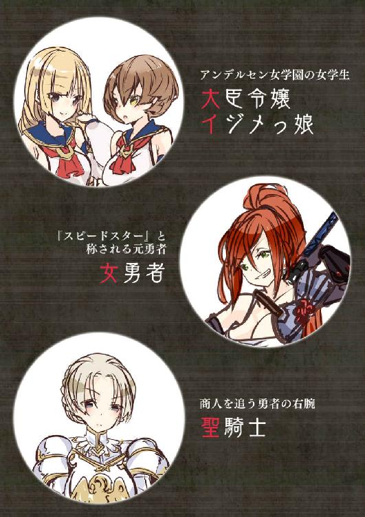
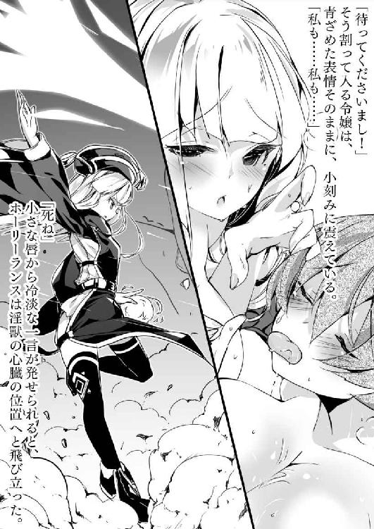
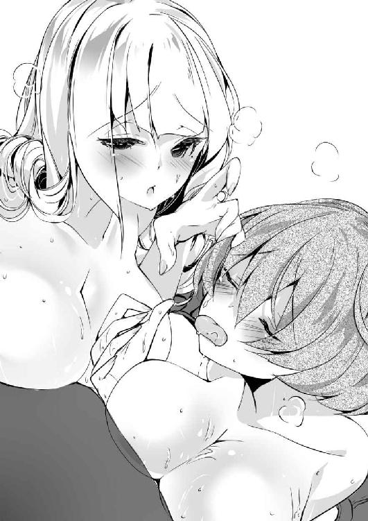
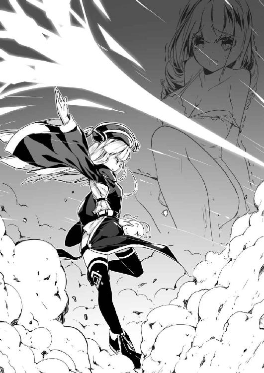
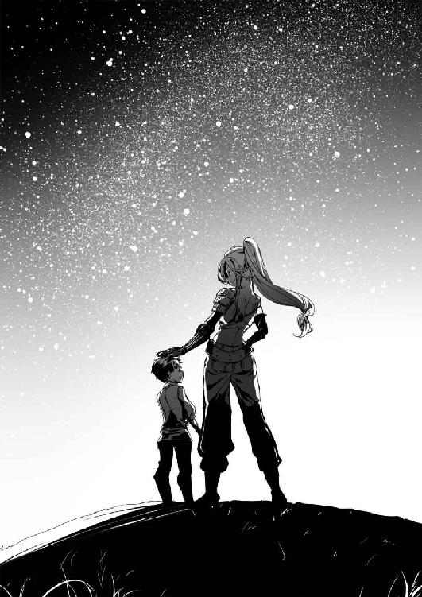
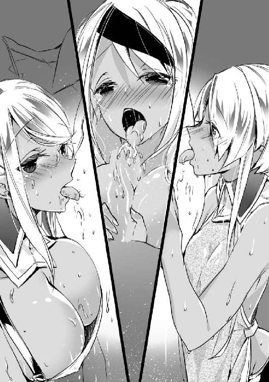
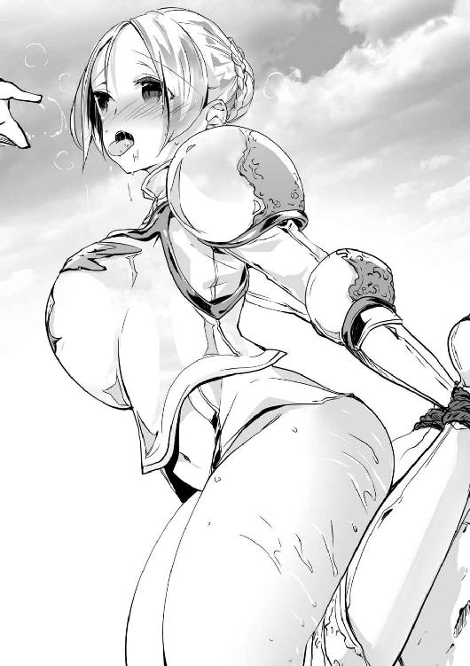
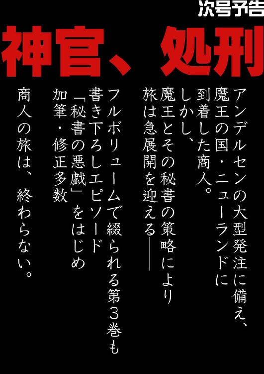

| 職業、商人(2)<職業、商人> (オシリス文庫) | |
| 黒おーじ | |
| (2015) | |
職業、商人（２）
著者／黒おーじ
イラスト／２１８

オシリス文庫
本作品の全部または一部を無断で複製、転載、配信、送信したり、ホームページ上に転載することを禁止します。また、本作品の内容を無断で改変、改ざん等を行うことも禁止します。
本作品購入時にご承諾いただいた規約により、有償・無償にかかわらず本作品を第三者に譲渡することはできません。
本作品を示すサムネイルなどのイメージ画像は、再ダウンロード時に予告なく変更される場合があります。
本作品は縦書きでレイアウトされています。
また、ご覧になるリーディングシステムにより、表示の差が認められることがあります。
本書の内容はフィクションであり、登場する団体・店名・人物などの名称はすべて架空のものです。


あたし、いまをときめく女学生っ。先週アンデルセン女学園に転入したばかりで、まだちょっぴり緊張気味なの。
「あら、転入生さん。ごきげんよう」
「あ、ごきげんよぅー」
この金髪縦ロールの美人さんは、あたしのクラスメート。なんでも大蔵大臣令嬢だっていうから、とってもお嬢様なんだぞっ。
「あらあら、リボンが曲がっていてよ」
「あ、いけない！ あたしったらぁっ」
「ふふふ、仕方ないわね。こちらをお向きなさい」
大臣令嬢が、あたしのセーラー服のリボンを直してくれる。
この子は、学園に来てからの一番の仲良し。だから本当はこの子に隠し事なんてしたくないのだけれど、ひとつだけどうしても言えない秘密があるの。
それはあたしが──ち×ちんの生えた成人男性だということ......。
おっと、いかんいかん。どうも最近心根の芯まで女の子になってしまうことが多々あって困る。
アンデルセン女学園へ転入してからの１週間、俺は女の子らしくあろうと最善を尽くした。外見はもちろん、しぐさ、口調、体臭、嗜好など、改善できる点はすべて改善し、使える魔法はすべて使った。なにせ、ち×ちんの生えた成人男性が密かに女学園に女装して紛れ込んでいるのだ。これが白日の下に晒されれば、即逮捕はもちろん、世界最悪の大変態として歴史的な汚名を着せられることになるだろう。
いまでは、不断の努力の甲斐もあって、朝のアンデルセン女学園の門前にあふれ返る女学生たちの誰と比べても遜色ない女の子らしさを保有したと、自負している。
大臣令嬢が通う学園だから、私立だとばかり思っていたが、アンデルセン女学園は公立だそうだ。しかし、お嬢様学園として分類されているようで、造りもどっしりとした煉瓦造りで飾り気もある。
さらにはこの制服だ。アンデルセンでは18歳以上の女学生だけに許される水兵のような格好──セーラー服という制服は、作りも繊細で値段もビックリするほど高い。それなりのお嬢様でなければ身に着けることはできないだろう。
教室は、黒板と教壇がもっとも低位置で、うしろの座席ほど高くなるように段差がついた雰囲気のある部屋だ。俺と大臣令嬢は同じクラスで、隣ではないが席も近い。
俺たちはふたり並んで教室に入り、「ごきげんよう」とクラスメートに挨拶をすると、それぞれの席に座った。
しかし、次の瞬間だ。
お尻の裏に原因不明の激痛が走ったのである。
「きゃっ！」
俺は思わず悲鳴を上げた。
「どうなさって？」
大臣令嬢が心配そうにこちらを見るから、俺は悲鳴の原因であるお尻の下を調べる。
「が、画鋲......」
「まあ、ひどい。誰がこんなことを」
椅子に画鋲だなんて、あまりに古典的で笑えもしないが、ここ数日、俺はこういう嫌がらせにたびたび遭遇していた。イジメに遭うような奇抜な行動なんて取った覚えはないから、原因はひとつしか考えられないだろう。転入初日以来、俺が大臣令嬢と異例のスピードで親しくなっていったことへの妬みだ。
大臣令嬢は、総じて、誰が見ても魅力を感じざるを得ない娘である。毎朝どれほどの時間をかけているのか想像もつかないほど完璧な金髪縦ロール、まだあどけなさを残した顔つきと、それに反して左目の下の泣きボクロが妙に大人っぽいというギャップ、そして令嬢として洗練された所作と言葉遣い。
女の子社会の中でこういった華やかな人間は、すごく好かれるか、すごく嫌われるかのどちらかである。そして彼女は前者であった。
そんな人気者の彼女と、ポッと出の転入生である俺が急に仲良くしていたら、それを苦々しく思う者が出て当然だ。
「まったく、こんなにかわいらしい転入生さんに意地悪をするなんて、許せませんわ」
自分のことのようにぷりぷりと怒る大臣令嬢。
さて、なぜ、彼女がこんなにも俺に好意を抱いているのかは、正直言ってわからない。意味不明である。だいたい、彼女は転入初日から、俺に対して好意的かつ積極的だった。初めは転入生が珍しいのだろうかと推測していたが、それはほかの者も同じはずだ。
そもそも、俺は大臣令嬢とそこまで親密になるつもりはなかったのだ。俺の目的は、彼女のスキャンダルを探るか、なければ作ってカタに嵌めるかして、大臣の弱みを握ることにあるのだから。もう少しくらい距離があったほうがやりやすいくらいである。
女学園の講義内容自体は、俺にとって難しいものではなかった。
１時限目、語学。俺は旅の商人だから、語学はお手のものである。だが、あまりよくできてもかわいい気がない。教師に当てられた時は、１ヵ所だけ間違えて答えておいた。
２時限目、数学。商人が数字に弱くてはどうしようもないから、当然あくびが出るほど簡単だ。なにせ、師匠である父親に、ひと桁の年齢の時分から微分積分を叩き込まれてきたのである。
３時限目、体育......さて、この教科が鬼門となろうことは、当初から容易に推測していたことだが、実際のところ想像以上の修羅場だ。
まず、次の時間が体育となると、教室のすべての女子がおもむろにセーラー服を脱ぎ出すのである。
白、水色、緑、縞、水玉と、色とりどりの下着がきらびやかに揺らめく。彼女らの身体つきも、腰の曲線、ふくよかな部分から、骨盤、鎖骨などの出っぱりまで、個人個人で違った魅力を発揮していて趣き深い。いつまでも眺めていたい光景であることは言うに及ばないことであろうが、問題は俺自身も着替えなくてはならないところにある。この状態で、ち×ちんが大きくなったらば、瞬く間に塀の中であろう。
俺は、セーラー服を脱ぎながら、見てはいけない見てはいけないと自分に言い聞かせながらも、つい顔を上げてしまう。仕方がない。目の前に天女らが踊っていると知っていて、それを見ずにいられる人間などいようか（反語）。
「転入生さん」
俺が百八つの煩悩をすべて消し去る勢いで心頭滅却をしていると、大臣令嬢がスカートを脱ぎながら話しかけてくる。ちなみに彼女の下着の色は薄いピンクだ。
「転入生さんの身体って......なにかほかの人たちと違いませんこと？」
まずい。男っぽさを感じたか？
「そ、そうかしら。そんなことないと思うけれど......」
俺がそう言い返しても、大臣令嬢は俺の下着姿をじーと見つめている。
「やっぱり違いますわ。ほかの方々はそんなに透きとおったお肌をしておりませんもの」
「え？」
「ほらこんなにスベスベ......」
「ちょ、ちょっと。触らないで。くすぐったい」
俺のうなじから背骨にかけるラインを指でなぞる大臣令嬢。
「あら、ごめんなさい。つい」
口に手を当て、粗相を詫びる彼女を後目に、俺はさっさと運動着に着替えるのだった。
着替えが終わっても、次に体育館にて俺を待ち受けているのは、ブルマーというあまりに扇情的な運動着をまとった女子たちである。最初にブルマーを見た時はなにかの冗談なのではないかと思ったほどだ。紺色に縦ラインのアンデルセン女学園指定のブルマーは、お尻と下着をなんとか隠せる程度の面積しかなく、彼女らのむっちりとした太ももは丸出しで、股間の盛り具合も判断がついてしまうほどである。たまにお尻部分から下着がはみ出してしまうのを隠すしぐさは、戦場で荒んだ兵士の心すら簡単に癒やしてしまうだろう。
さて、あちらでは女子らがマットの上で側転をしている。俺もこれに加わらなければなるまい。
30絡みの女性教員がホイッスルをピィッと吹くと、列の一番前の少女がタッと駆け出す。この娘は運動神経がよいらしく、側転をロンダートにして後転へとつなげた。教員は彼女をほめた。このようにしてホイッスルが鳴ると、列の女子たちは次々にマットへ駆け出してゆく。上手もあれば下手もあった。ただ、側転などで身をひるがえすと、どの娘もブルマーにしまっていた体操服の裾が引っぱられてめくれてしまい、ヘソが丸出しになる。体操服のめくれ上がったのを背面から望むと、背骨の溝からブラジャーのホック部分まで垣間見え、それぞれの脂肪の厚みによってこれがどの程度密接に食い込んでいるかというところまで把握できる。
そう。みなここには女子しかおらぬと油断しているのだ。体育館という白日の下にあってもこうしたことに注意を払う様子がない。要するに、女学園の日常というものは、ありとあらゆる部分において無防備であるようだった。なぜって、男の目がないからである。
「では次！」
という教員の声とホイッスルの音が聞こえる。前に人はない。どうやら俺の番のようだ。
体育館シューズがキュっという音を響かせる。マットへ駆け出しながら俺は思案した。というのも、俺は自慢ではないがこういう体操は得意だ。これは幾多の戦闘から逃げに逃げ回ってきた経験に基づく運動能力である。だが、それを得意げになって披露するのは〝女子〟としてはいかがなものか。
また、ただでさえ俺のち×ちんは、ブルマーと女モノのパンティの中で所狭しといった調子でギリギリ収まっているというふうなのだ。あまり激しい動きをすれば、それがポロリと太ももの脇から顔を出さないとも限らない。
つまり、俺はいま、逆に女の目というものを気にかけなければならないことを忘れてはならないのだ。安易な自己顕示欲は滅していかねばならない。
「あっ」
しかし、そんな余計なことに頭を巡らせていたからであろう。俺はマットの端の段差に足を取られて、バランスを崩してしまった。そして、そのままマットの上にただ転んでしまったから、体育館には女子たちの軽い笑いが起こる。つまり嘲笑だ。
うう、なにも転ぶ必要はなかった。側転のひとつでもやってお茶を濁しておけばよかったものを、こんなふうにみんなに笑われるのは悔しい......。
「転入生さん！ 大丈夫ですの？」
ただ、大臣令嬢だけは転んだ俺に駆け寄ってきてくれた。
「あまりご無理をなさらないで」
「ええ、ありがとう」
なよなよしくマットに横たわる俺に手を差し出す令嬢。バツが悪いながらも、俺は彼女の手をとった。
だが、身を起こそうと足に力を入れた時である。大臣令嬢が、俺の太もものあいだを凝視しているではないか。
「な、なにかしら」
と尋ねても答えない。
まずい。
一応ここに至っても、俺の強靭な精神力によってち×ちんはミニマムモードを維持しているのだが、それでもそもそも女の子としてはかなり盛った股間であると言わざるを得ない。そして、このマットから身を起こす所作は、ブルマーに包まれた股間の盛り具合が、なるほどよく見てとれる。不自然に思われても仕方がないぞ。
「い、いえ......なんでもありませんわ」
ほっ。やれやれ、心臓に悪い。どうにか不自然ではないと判断してくれたようだ。
その後、再びの着替えという修羅場を覚悟しながら教室に戻ると、俺は変わり果てた自分の机に驚愕することになる。俺の机の表面に、罵詈雑言が魔性マジックで書き殴られていたのだ。『インラン』だとか『メスブタ』だとか、しょうもない言葉が乱暴に書かれている。
「あら、ずいぶんとひどいことをする人がいるのね」
ひとりの女が俺の席に悠然と近づいてきてそう言う。栗色のショートヘア、勝ち気な目、生意気そうにキュッと結んだ唇。我の強さがにじみ出た娘である。
「あんまり調子に乗ってるからそういう目に遭うんじゃないかしら？」
彼女は意地の悪い響きでそう続けた。
そう、この女が俺へのイジメを主導していることは明々白々なのである。俺がこういった目に遭うと、いつもとぼけた素振りで暗に「調子乗んな」というメッセージを伝えにやってくるのだ。ほかの学生も、彼女の意向には逆らうことができないといった様子で、なるべく関わらないようにしているのが常である。
20歳を何年か超えた男が、まだ10代の小娘からイジメを受けているだなんて、滑稽かつ情けない話である。「この糞餓鬼が」と腹の立つ思いも当然あるが、現実問題仕事の邪魔だ。
まあでも俺は、余計な面倒事を起こさないようイジメっ娘の挑発に対して一言も返さなかった。しばらくすると「ふん」と言って離れていくイジメっ娘の背中を見て、俺はため息をつく。
横では、大臣令嬢が心配そうに眉を下げていた。
すべての講義が終わり、放課後。俺は少々落ち込んでいた。なぜって、仕事が全然進まないからだ。
まずは大臣令嬢の噂などの情報を集めようと思って１週間、一向に集まらない。現状、俺はイジメられっ子であるから、誰に話しかけても会話にならないのだ。
嗚呼、ストレスが溜まるし、早く煙草が吸いたい。構内は禁煙だから、帰るまで吸えないのである。
学園を出てしばらくすると、俺は鞄を教室に忘れてしまったことに気づいた。鞄自体は置いておいて構わないのだが、中にはシガレットケースが入っている。俺はやむを得ず引き返すことにした。
門前まで戻ると、大蔵大臣の馬車がまだ待機しているのが目に入る。そして、今日はなにやら馬車の周りに数人の男がたむろしていた。執事服を着た初老の男と、屈強そうな鎧を着た男がふたり、そして中肉中背の金髪の男だ。特に金髪の男がただ者ではないことは一目瞭然である。着ているスーツが上等というだけではなく、その気品ある物腰、威圧感、スマートさが肉眼で視認できる。
俺は何事かと思い、通りがかりに耳をそばだてた。
「大臣、馬車にお戻りください。外に出ていては危険です」
執事服を着た男が金髪の男に向かってそう言う。
やはり、あの男がアンデルセンの城下町の大蔵大臣か。さすがにオーラがビリビリとあふれてきやがる。俺はこの男を相手に公共事業の発注を得ようとしているのだ。
大蔵大臣は執事服を着た男に言葉を返す。
「ええい、うるさい！ せっかく議会が早く開けて、迎えにこられたのだ。娘が出てきたら即座に抱きしめて、チューをしてやる。馬車の中でなど待っていられるか！」
威風と威厳は台無しであった。なんだか、発注も取れる気がしてくるから不思議なものである。
守衛さんに忘れ物をした旨を伝え、構内に入るともうほとんど人の姿はなかった。まだ日は沈んでいないが、人のいない廊下はある種の不気味さを感じさせる。俺はやけに廊下に響き渡る自らの足音を聞きながら、教室へと向かった。
「あなた、いいかげんになさったらいかが？」
俺が教室へ入ろうとドアに手をかけた時、中から大きく感情的な声が響き渡った。大臣令嬢の声だ。
そうか、馬車が門前で待機していたということは、必然的に令嬢は中にいるということになるのだ。
俺はすかさずヒアリングの魔法を使い、教室内の音がきちんと聞こえるようにする。
「だって！ お姉さまがあの転入生ばかり構うから」
この声は、憎きイジメっ娘の声ではないか。普段、大臣令嬢とイジメっ娘が会話をしているところなど見たことがないから意外であった。
しかし、『お姉さま』ってなんだ？ 同学年で姉妹ということもないだろうし、双子にしては似てない。二卵生双生児ってやつか？
「だってもヘチマもありませんわ。もう私のことは忘れてちょうだいと言ったでしょう」
「でもお姉さま。あの転入生がお姉さまを受け入れるとは限らないのよ」
俺が受け入れる？ なにを？ どうも彼女らの会話はよくわからない。暗号でも使ってるのだろうか。まさか俺がヒアリングの魔法を使っているのに気がついたとか......。
「大丈夫ですわ。あなたも初めはその気がなかったのをお忘れ？ 転入生さんだって、少しずつ身体に覚えさせていけばなんの問題もなく私を受け入れてくださるに決まってますわ」
「ひどい......お、お姉さまなんてもう知らない！」
そう言ったあと、イジメっ娘の足音が聞こえ、それは次第に大きくなってくる。
しまった。教室を出るつもりだ。どこかに身を隠さねば。
そう考えた時には遅かった。教室のドアは開かれ、目の前にはイジメっ娘が目を見開いて立っている。
「あ、あんた......いまの聞いてた？」
「き、聞いてなかったわよ」
馬鹿か俺は。こういうときはせめて『なんのこと？』と聞き返すべきだ。これでは聞いてましたと言っているようなものだ。
しかしまあ、聞いていたけれど半分以上内容は理解できなかったから、聞いていなかったのと同じだよね。
「あら、転入生さん。いかがなさって？」
「いや、あたし。鞄忘れちゃって」
そう言うと大臣令嬢は、なぜかいつもよりなめまかしい歩き方でドアのほうにやってくる。
「ちょうどよい機会ですわ。あなた、ちょっと転入生さんを拘束なさいな」
なんだと。イジメっ娘にそんなことを言ったらきっと喜び勇んで──、
「嫌よ」
──しなかった。
なぜだろう。いつもあんなに意地悪なのに。
「そういう態度ですと、もう二度と愛してあげませんことよ」
「わ、わかったわよ......」
結局やるのかよ。
すかさず、イジメっ娘は俺のうしろに回り両脇から手をがっしりと回す。しょせんは女の力と侮っていたが、暴れてもビクともしない。
「無駄ですわ。その子はアンデルセン随一の武術一家のひとり娘。いずれは道場を継ぐ器の持ち主ですのよ」
なるほど、それは無理だ。一介の商人が武術の達人に体術でかなうわけがない。
でも、それでどうするんだ？ 俺を動けなくしてなにかよいことがあるとは思えないのだが。
「ねえ、転入生さん。私のことどう思っていらっしゃる？」
「どうって言われても......」
まさか、商売のためにカタに嵌めようと思っています、とは言えない。
「好き？」
「あ、ああ。好きよ。好き好き」
なんだ、友情の確認か。正直、そこまで好きでもないけれど、面倒だから好きと言っておいた。
「嬉しい。私もお慕い申し上げておりますわ」
大臣令嬢はそう言うと、動けない俺の顎をそっと支え、顔を近づけてくる。
「ちょっ、ちょっと。このままだと唇がくっついちゃうわよ？」
という俺の叫びを無視して、彼女は俺の唇を奪った。幼げな顔からは想像がつかないほど、妖艶なチューである。
「ぷ、ぷはぁ。な、なにするのよ」
「あら、だっていま、『好き』とおっしゃったでしょう？ 好き同士ならばチューをするのは当然ではないかしら」
ま、まさか。俺が男であることに気づいているのか。
「あ、あたしは女の子よ！」
目一杯、女であることを主張する俺。
「もちろんですわ。こんなにかわいらしい男が存在するはずありませんもの」
いや、男なんだけどね。
でも、どういうことだ？ つまりこのご令嬢は俺を女だとは思っているんだよな。じゃあ、なぜチューとかするんだろう。
「こういうことは男と女でするものだと思うのだけれど」
「男!? そんなもの見たくもありませんわ。私が愛するのは転入生さんみたいにかわいらしい女の子だけでしてよ」
は？
「つまり女の子なのに女の子が好きってこと？」
「もちろん。私のお父様も言っておられましたわ。お父様以外の男はみんな狼だと」
大臣、親バカはいいけど教育は誤るなよ......。
「怖がらなくても、すぐにふわふわして気持ちよくなってきますわ」
令嬢は俺が動けないのをいいことにブラジャーのホックを外し、セーラー服ごとまくり上げた。
「まあ、かわいらしいおっぱいですこと」
かわいらしいっていうか、おっぱいねえからな。
「力を抜いてくださいまし」
次の瞬間、俺の身体に電流が流れたような感覚が走った。令嬢が俺の乳首をピチャピチャと音を立てて舐めているからだ。
「や、乳首は......だめ」
じつを言うと、俺は乳首がとても弱い。特にいま彼女が舐めている左乳首は、責められて３秒でヘロヘロになってしまうのだ。
「まあ、随分と気持ちがよさそうですわね」
そう言いつつ大臣令嬢は俺の下半身のほうへ右手を伸ばしていく。
ヤバい......。
これは非常にまずい。
男とバレていなかったことは幸いとしても、このまま下半身に手がいけばち×ちんがある。しかも弱点を責められ、制御不可能なち×ちんだ。彼女からすれば、女の子だと思って愛撫したものの、じつは相手が『見たくもない』と言い放った男だと知るのである。その怒りは騙されたという思いとともに計り知れないものとなろう。
俺は明日の朝刊の見出しは『旅の商人、女学園へ女装で潜入。わいせつ行為働く』であろうと覚悟を決めたのだった。
大臣令嬢にちゅくちゅくと左乳首を舐められて、俺の頭は次第に真っ白になっていく。彼女の舌と唾液は、まだ成長途中を感じさせる未熟なものだったが、舐め方自体は極めて堂に入っており、それが味わったことのない新感覚を生んでいた。
なんの抵抗もできないまま、令嬢の右手は、いまにもち×ちんに届いてしまいそうである。
もう駄目だ。
そう思いかけたが、俺の目下にはちょうど令嬢の頭があり、縦ロール部分の横にある小さな耳にギリギリだが口が届きそうだ。
最後の力を振り絞って、俺はその耳にそっと息を吹きかける。
「ひゃっ」
大臣令嬢は吐息とともに左乳首から口を離した。
しめた。
即座に彼女の金色の髪の毛を舌べらでどかし、耳たぶの上の出っぱった軟骨を口に含んだ。頭髪からシャンプーの香りが鼻につく。
「あ、んんん。な、なにをなさって？」
そう言うが令嬢は、肩をすぼめて息を荒らげている。どうやら性感を与えてさえいれば、こちらを責め立てることはできないようだ。
脚は拘束されていないので、俺はたたみかけるように右脚を彼女の短いプリーツスカートの中へ伸ばした。
「ちょっと、あんた。やめなさいよ！」
しかし、うしろのイジメっ娘がそれを見咎める。彼女の長くしなやかな脚が、うしろから俺の両脚に絡みつくように回ると、俺は下半身の自由までもが効かなくなった。さすがに体術の専門家である。
いつまでも耳を責めていても、いずれ令嬢は俺への責めを再開させるだろう。状況はいまだ芳しくない。まず、イジメっ娘が身体を抑えつけているのが致命的なのだ。
俺の両腕は、脇を抑えられてはいるものの、肘から下は自由が効く。この状態でできることをやろう。
俺は、目一杯腕をうしろへ伸ばし、イジメっ娘のお尻をわしづかみにした。小ぶりだが、ぷりっとしていてハリがある。
「なにすんのよ！」
イジメっ娘は俺の後頭部へ頭突きを喰らわせた。重く、鈍い衝撃が走る。
「ぐ......」
そう呻き声を上げ、意識が飛んでしまいそうになるが、俺も必死だ。なんとか気を保つ。
しかし、もう一度頭突きを喰らったら間違いなく失神してしまうだろう。
俺はイジメっ娘のスカートを手探りでめくり、今度は這うような手つきでお尻を撫で回した。下着の綿の感触が指を伝う。
「ん......あ、ちょっと......やめなさいよ」
頭突きは来ない。その代わりにイジメっ娘の少し荒くなった息が俺の耳元に吹きかかる。お尻はピクンとして、脚と腕の拘束は少々弱まった。だが、ここで俺が拘束を抜けようとすれば、彼女は正気を取り戻すだろう。だから、あえて現状を保守し、お尻を撫で続けた。
とはいえ、イジメっ娘の拘束力が緩まったおかげで、動ける範囲というものは全体的に広がった。俺はそれを確認すると、口を令嬢の細く白い首筋へと移す。動脈に沿って吸うように刺激し、セーラー服の首元に艶めかしく出ている鎖骨まで届く。
「ん、あっ。わ、私、責めるのはよろしいのですが、責められるのは......」
責められるのは慣れていない？ なるほど、確かに。すでにその細い肩はプルプルと震え、口からはだらしなくよだれを垂らしている。
次に、左手をイジメっ娘のお尻に残し、右手を令嬢のセーラー服へと伸ばした。紺のリボンをシュルシュルと抜くと、胸元と脇下のホックを外す。しかし、力は弱まったとはいえ、脇を抱えられていると腕は上に上がらない。仕方がないから俺はセーラー服を歯で噛み挟んで、首の筋肉でもってそれを脱がせる。
「え、え？ 脱ぐんですの？」
令嬢はそう戸惑うが、協力するよう万歳をしてくれた。セーラー服の下には、その童顔からは想像がつかないほど大きなお椀型のおっぱいがピンク色のブラジャーに包まれている。
さて、令嬢ばかりに注意がいってしまうと、イジメっ娘は再び俺を強く拘束するであろう。気を抜けば、すぐさま最悪な状態に逆戻りだ。
イジメっ娘のお尻を撫でていた左手を背中に伝わせ、セーラー服の上から感触を頼りにブラジャーのホックを外す。さらに、上体および首をできるかぎりうしろへひねると、栗色の髪の毛が頬に触れるほど近くにイジメっ娘の顔があった。俺はそのまま、その生意気そうに突き出た唇を吸うため、口を寄せる。
「ちょっと......ふざけな......」
ふざけないで、と言いたかったのだろうか。その前に唇で封をする。彼女の唇は突き出ているのでチューをすると気持ちがいい。チューで女の子はしおらしくなるの法則は健在で、イジメっ娘の気勝りなその眼も長いまつ毛とともに威力が下がってくる。
しかし、イジメっ娘ばかりを構っていると、今度は令嬢が俺への乳首責めを開始してしまうだろう。いまだ予断を許さない状況なのである。
俺はイジメっ娘とチューをしながら、右手にて令嬢の腰から背中にかけてのラインを撫で上げつつ、薄ピンク色のブラジャーのホックを外す。横目で確認しながら、ぺろんとブラジャーをめくると柔らかなおっぱいがたぷんと揺れた。
ちゅっちゅっ、ぴちゃぴちゃ、と俺とイジメっ娘のチューはすでに舌が絡まっていたから、そこから漏れ出す唾液を左右の人差し指につけ、令嬢のおっぱいに手を伸ばす。唾液のついた人差し指は乳首を、手のひら全体でおっぱい全体を刺激するのだ。
令嬢の目はすでに恍惚含みである。
イジメっ娘に対していつまでもチューだけではまずい。次は口を令嬢の乳首へやり、右手をイジメっ娘のセーラー服の中に入れる。ホックはすでに外してあるから、セーラー服の中でブラジャーをどけて、おっぱいをつかむ。大きくはないが決して小さくはない。イジメっ娘のおっぱいは、筋肉の土台がしっかりしているぶん、小さな乳首が確かな意思をもって上を向いているし、なによりも弾力があった。
俺は親指と子指をイジメっ娘の左右の乳首にあてがい、揉むようにして同時に刺激した。それを背面でやっているものだから背筋がつりそうである。
余った左手で令嬢のスカートをめくり、薄ピンク色の下着の上からクリトリスに人差し指の第２関節が当たるよう筋を這わせる。
「はぁはぁ、んん、あ、あっ......はぁはぁ」
クリトリスの快感が大事な部分全体の感覚と融合して気持ちがよさそうだ。
この時点で、イジメっ娘による脇の拘束はだいぶ緩いものとなっていた。しかしなぜか脚の拘束はキツくなるばかりである。
これではいけない。
令嬢のおっぱいから口を離し、もうほとんど自由になった上半身をイジメっ娘のほうに向ける。
左手は令嬢の下半身を責め立てるのに使い、右手でイジメっ娘のセーラー服およびブラジャーをめくり上げる。あらためて視認するとイジメっ娘のおっぱいは美しい釣鐘型をしていた。右手でセーラー服を持ち上げながら、ツンと上を向いた乳首に舌を伸ばす。下半身が拘束されているため、甚だギリギリではあるがなんとか届く。
「ん、んああ。はぁはぁ」
と、とても気持ちよさそうなのだが、問題は声が上がるたびに胸をこちらに突き出しながら、脚の力も入ってくるというところにある。しなやかで温かい彼女の太ももが俺の太ももに直接絡まっているのはとても気持ちがよいけれどこれでは埒があかない。
それを打開するために、俺はセーラー服を支えていた右手を太ももに回す。セーラー服は俺の頬骨をもって支え、あくまで乳首をチロチロと舐めるのはやめていない。右手は太ももを触れるか触れないかの強さで這い、スカートの中に入る。そして、俺の脚と、イジメっ娘の大事な部分のあいだに右手を挟み、クリトリスを優しくグリグリとやってやると、ようやく脚の拘束が緩んできた。
その間も、俺の左手は令嬢のクリトリスを撫でていたのである。令嬢の下着は、もう滴り落ちるほど濡れていた。
「うしろを向いて」
そう令嬢に促し、左腕で腰を引っぱると、お尻を突き出した格好になる。
それと同時に、イジメっ娘の水玉模様の下着をめくり、右手薬指で膣をつっつくと、ちゅるんと吸い込まれた。
「ん、んんん」
と、声を上げるイジメっ娘の足はもう床に降りている。
そして俺は、自由になった下半身をもって、お尻を突き出している令嬢の大事な部分にち×ちんをあてがうのだった。
「あら？ なんでしょう。なにか硬くて温かい、棒状のモノがお尻に触っている気がしますわ」
令嬢はつとにきょとんとした様子でそんなことを言う。
というか、しまった！
つい流れのままにち×ちんを刺そうとしてしまった。そもそも俺はち×ちんが生えているのを隠すためにこんなにも必死になっていたのに。
「え？ なに？」
イジメっ娘も何事かとこちらに関心を示してきた......。
イジメっ娘は、俺のスカートからのぞく禍々しくそそり立ったち×ちんを見て目を見開いた。
「あんた、それ......ち×ちん？」
「なんですって？ ち×ちんと言いますと、あの穢らわしい男どもの中でも、もっとも汚らしい部位であると噂の......」
令嬢も顔を引きつらせている。
マズいぞ。なんとか誤魔化さなければ。
「こ、こら！ めったなことを言うもんじゃあない......わよ」
「え、でも。これは明らかにち×ち......あっ！」
俺はイジメっ娘の中に入れていた薬指の動きを再開させた。膣壁の上部にザラザラした部分があるから、そこを撫でるようにする。
「こ、これは張り型よ！」
我ながらひどいでっちあげだ。
「張り型？ 転入生さんがそのようなものをお持ちになっていらっしゃるだなんて意外ですわ」
そりゃあ普通の女学生は張り型なんて持っていないよね。
「それにこの張り型、なんだか妙に生温かくて、ピクピクして、まるで生き物みたいですわ。本当に張り型ですこと？」
「もちろんよ。この張り型は最高級品なの。これでふたりがつながれば、両方の快感がダイレクトに伝わるという優れものなのよ」
嘘八百がスラスラと口を出る。まるで悪徳訪問商人のようだ。
「まあ、そのような素晴らしいものをお持ちだなんて、さすが転入生さん」
「ま、まあね。じゃあ、入れるわよ？」
「ええ！」
満面の笑みでお尻を突き出す大臣令嬢。
しかし、もし、これから彼女の大事な部分に刺すものが、じつは男のち×ちんであると知れたら、その笑みは色を失うのだろうなあ。
悪い気もするが、張り型だということで押し通してしまったのだから刺さないわけにはいかない。
俺はイジメっ娘の膣内を薬指で優しくかき回しながら、ち×ちんで令嬢の大事な部分をツンツンと二、三つっつく。するとち×ちんは吸い込まれるようにヌプヌプと令嬢の膣内へと潜り込んでいった。
「ん、あああ」
これはすごい。彼女は処女のはずなのだけれど、ちゅるちゅるとち×ちんを求め、あっという間に根元までくわえ込んでしまったのだ。愛液も人一倍出るようで、滑らさがち×ちんから読みとれる。あんなにも男を毛嫌いしていたのに、男のち×ちんを受け入れる才能に秀でているというのも、皮肉なものである。
しかしこれなら、もう動かしても大丈夫そうだ。
ゆっくりと前後すると、ちゅぽちゅぽという音を上げてち×ちんと膣内の肉がこすれ合う。
「あ、あああ。こ、この張り型、まるで転入生さんの一部のようですわ」
「はぁはぁ、そりゃ本物のち×ち......あっ」
危ない。令嬢に気を取られてイジメっ娘への責めを怠ると言いつけられそうになる。俺はイジメっ娘の膣内に２本目の指を入れ、牽制した。
令嬢の肌は確かに処女のそれであり、幼さの残る、可憐なキメの細かさがある。が、それに反し、彼女の骨盤は先天的に女としての健康的な姿形をすでに極めているようであった。
しばらく腰を動かしていると令嬢は「あっ」と声を上げ、中のち×ちんが折れ曲がりそうなくらい身を反らせる。ほぼ同時にイジメっ娘の大事な部分から、おしっこではない水滴が噴射され、その水玉模様の下着をびしょびしょにしてしまった。令嬢のほうはその場にへたり込み、身動きが取れないようだ。
俺は、さすがに精魂尽き果て、天を仰ぎ見る。
しかし、誰ぞ俺のセーラー服の裾を引っぱる者がいた。イジメっ娘だ。
イジメっ娘は足元が覚束ないながら、こちらを見上げるようにしている。
「......も」
「え？ なに？」
小さな声でぼそぼそと言うので聞こえない。
「くっ......私も！ ち×ちん入れて！」
怒鳴るようにして言うイジメっ娘。
「わっわっ、馬鹿」
そう言ってイジメっ娘の口を押さえる。幸い、令嬢のほうはオーガズムがあとを引いているようで、耳に入った様子はない。
「いい？ ここにはち×ちんなんてものはない。ないものは入れられない。あるのは張り型だけよ」
俺はイジメっ娘を睨むように見つめながらそう言った。
「わ、わかったわ。その張り型を入れてよ」
そうやって認めてくれるのならば仕方がない。
俺はイジメっ娘をうしろに向け、その小さくぷりっとしたお尻を突き出させたあとに、びたびたになって食い込んでしまっている水玉模様の下着を下ろした。そして、ち×ちんで大事な部分全体を撫で回したあと、ゆっくりと膣へ刺していく。一度噴いてしまっているというのに、イジメっ娘の膣はとてもキツかった。令嬢のそれが柔らかく包み込むような感触であったのとは対照的に、攻撃的でギュッと締めつけるような感じだ。しばらく動かせないでいると、イジメっ娘はち×ちんを気持ちのよい部分に当てようと、腰をもじもじと動かしてきた。それでうまい具合に馴染んだので、俺も腰を動かし始める。
ひと突きするごとにお尻の筋肉がぶるんと揺れ、野性的だが哀しげな喘ぎ声が上がった。
「ああん、きゃあん」
と、普段からは考えられないほど媚びた声で鳴くのである。
彼女の膣は極めてキツいので、その機微を読みとりやすい。どうやら手前の上部が気持ちよさそうなので、角度をつけ、ち×ちんの先端部分を引っかけるように出し入れをする。
「あ、それ......それ。ん......あっ！」
そう言ってイジメっ娘の膣がぎゅーっとち×ちんを絞るように締めつけるから、俺は文字どおり精液を搾り取られてしまった。
そして、イジメっ娘もその場にへたり込んでしまったのである。膣から大量の乳白色の液をこぼして。
やった！ 倒したぞ。
そう心で叫ぶが、果たしてどうだろうか。床に蒸気をあげながら倒れている女ふたりを見て、俺はもしかするとやらかしちまったのではないか、と疑念を抱く。
「やってしまったな」
「おわぁ！」
ほかに誰もいないはずの教室で、つとに女の声がしたものだから、肝を潰した。
声のほうを見やると、窓際にセーラー服を着た銀髪の美少女の姿が。
「神官さん、いつからそこに......」
「ふふふ、私ならばずっとここにいたぞ。気づかなかったのか？」
格好のいい台詞のはずなのに、あまり格好よくないなあ。
「メシア教を国教とするアンデルセンにおいて、令嬢の同性愛は充分なスキャンダルとなったはずなのだが。よもや貴様自身がスキャンダルの一部になろうとはなあ」
「あぐぅ......」
これだと確かに俺の弱みにもなってしまう。
「あ、おい。待たんか」
俺は逃げるようにして教室を出た。
「女装して女学園に潜入するだけでは飽き足らず、構内でふたりも手込めにしてしまうだなんて、貴様の心臓には毛が生えておるのか？」
スタスタと歩いていく俺の横を懸命についてくる神官さん。氷の視線が突き刺さる。
「せ、正当防衛だ」
「ははは、なにを正当に防衛したというのだ？ 笑わせるな！」
この女、よほど俺の失点が嬉しいらしい。いつもより饒舌だ。
外に出るとあたりは紅に染まり、秋風も相まって寂し気な空気を漂わせている。そんな中、馬車と大蔵大臣は校門前に立ちつくしていた。
大臣は神官さんに気づくと手を上げる。
「これはこれは。誰かと思えば神官様ではないですか。そのようなお姿でいかがなされたのですか？」
あいかわらず威厳とスマートさが同居した立ち居振る舞いである。
「うむ、我が国の少女たちが健やかに勉学に励めるよう、祈祷を捧げてきたのだ」
俺はあんたの娘に亀頭を捧げてきてやったぜ、とか言ったら怒られるんだろうなあ。
「大臣はこのようなところでなにをしておるのだ？」
「じつは娘を迎えにきたのですが、これがなかなか出てこない。神官様、娘を見かけませんでしたか？」
「どのような娘だ？」
すっとぼけて聞き返す神官さん。
「特徴的ですから、ご覧になっておいでならばすぐおわかりでしょう。とにかくかわいいくて......そう、世界一かわいらしい女の子です」
？
「それではわからんぞ」
「さ、左様でございますか。んー、それならば、そうだ。まるで天使のような娘。こう申せば伝わりますかな」
珍しいことに、神官さんが引いている。
「て、天使は見かけなかったな」
「そうですか......」
「そうだ大臣よ。あくまで仮にの話だがな。もし貴殿のその世界一かわいいとかいう娘が、学園内で女装した男に凌辱されていたとすれば、どうする？」
神官さんは大臣ではなく、俺の目を見てそう言った。
「その男を生きたまま城壁のコンクリートに埋めます」
コンクリートから人が!? 嫌すぎる......。
でも、これは城壁増築の件を裏づける発言ととっていいだろう。増築がなければそんな発想は出ないだろうからな。
大臣の下を去ったあと、俺は影法師を長く伸ばして歩く神官さんを見てため息をついた。鋭い眼光はいつもどおりであるが、とっても得意気なのだ。
いまなんてほら、ちょっとスキップしたし。
俺に対して弱みを握れたのが嬉しいんだろうなあ。仕方ない。
「ねえ、神官さんは城壁外にある同人春本のお店って知ってる？」
「知らん」
「いや、世間話として聞いてくれればいいんだけどさ。もし城壁の話が上手くいったら、新しくできた城壁の外にお店を建て替えてやろうかなって考えているんだ」
「本当か！」
顔をおもいっきり寄せ迫る神官さん。
「ああ、この話が成功すればそのくらい屁でもない」
「貴様、疲れておるのではないか？ 回復魔法などどうだ？」
「お、急に優しいね」
「あたりまえだろう。友達だからな」
現金な友達があったものである。
しかし、冗談だと思っていたのに、神官さんは本当に回復魔法を使ってくれた。
「さて、私はそろそろ聖堂に戻らねばならん。シスターに怒られてしまうからな」
神官さんはそう言うと、紺のプリーツスカートをひらりとして方向を変えた。
「あ、そうそう。神官さん」
「ん？ なんだ」
「言い忘れてたけど。セーラー服、似合っているよ」
瞬時、鋭い眼光の中の薄緑色の瞳がかすかに揺れる。
「ふん、たわけたことを申すな」
沈みかけの夕日のせいか、神官さんの頬は少しだけ朱がかっていた。
さて、学園が引けてからは情報収集である。
いつもであれば一度ホテルに帰り、男の姿に戻るのであるが、今日はもう遅い。俺はセーラー服姿のまま煙草をくわえ、城壁外へと向かった。
この国の城壁がいったいどのような造りになっているか。それを調べるには古い城壁の順にその組成を調べるのが一番だ。
そもそも、城下町というものは町があって城ができたものではない。城がそこにあったからこそ周りに町ができたのである。城はもともとは一戦線に築かれた砦であった場合も多い。
その、城という軍事的根拠に人々が集まり、周りに町ができる。城の主は、その人々から税を徴収する代わりに、彼らを城壁で囲み外敵から守る。すると、人々はある程度安定した生活を送るようになるし、それを見たよそ者も安定を求めて移住してくるから、人口は増え、町は城壁をはみ出していくのである。当然ながら、外にはみ出した人々は自分たちも城壁で囲んでくれと求めるから、また城壁が作られる。これの繰り返しなのだ。
このアンデルセンの城下町においてもそれは例外ではないらしく、城を中心に内側から層を成して城壁が残されていた。
この１週間、俺は昔の──つまり町の内側の城壁から順にその組成を確かめていった。
まず、一番内側の城壁。これは相当な昔に──おそらく百年単位で──造られたものであるようで、現存するものはわずかだ。サン・セザーヌ通りのビルディングの合間にひっそりと残っていたそれは、木を鉄の金具でつないだものであり、苔と酸化でほとんど朽ち果て、その機能を歴史的建造物という限定的なものに集約させていた。
ひとつ外側に行くと、わずかに強固である。石を削り、等寸にしたものを鉄でつないでいるのだ。高さも初めのものの倍はある。成人男性３人分といったところか。
さらに、次はそれを土で埋め立てた痕跡を見ることができた。堅いものの外に柔らかいクッションを入れることで、強い衝撃にも耐え得るよう工夫を凝らしてある。
当然ながら、城壁は外にいけば外にいくほど、その囲う範囲は大きくなるから、比例して規模が大きくなる。だが、時代が進むごとに建築の技術も進むから、その予算たるは幾何や。昨日見た、２番目に新しい城壁は鉄骨にコンクリートの立派な城壁で、天を仰ぐほどのものだったのである。
さて、そしてついに今日は一番外側の、最新の城壁である。
俺はいつものように、その組成を調べるためにリードの魔法を使った。リードは、商品の記録を読みとるだけではなく、こういった使い方もできるのである。
しかし、今日はリードが発動されず、それが叶わなかったのだ。これはべつに俺の魔法が下手だとか、そういうことではない──と思う。おそらく、この最新の城壁には対魔法用の仕様が施されているのだ。昔の城壁とは違い、新しい城壁の時代では、すでに魔族も人間も魔法を使用し始めたという経緯からであろう。
しかし、対魔法用の仕様には、当然ながら、魔力の源たる魔鉱石が不可欠だ。魔法を使うのに魔鉱石が必要ならば、魔法を防ぐのにもまた、魔鉱石が必要なのである。これだけの広大な城壁に魔鉱石を張り巡らせるのは並大抵ではない。
そうなると、次に建築予定の城壁はさらに大量な魔鉱石が入り用になるはずだ。
「ちょっと君」
俺が思考を巡らせると、アンデルセンの警察官が俺の肩を叩いた。
まずい。リードを使っていたのがバレたか。俺の武力では警察官を相手に立ち回るだなんて真似はできないぞ。
「な、なんでしょう？」
「その制服はアンデルセン女学園のものだね。煙草なんて吸って、どういうつもりだ」
そうか、女装したままだということをすっかり忘れていた。
「あ、これ違うんです。なんちゃって女学生なんですよ」
「そんなすぐにバレる嘘をつくな！」
「本当ですって。ほら」
俺は、アンデルセン女学園の学生証ではなく、パスポートを提示した。
「むむむ、男じゃないか。まったく、最近はへんてこな趣味を持った連中が増えて困る。おまえも変態はいいがほどほどにな」
そう言って警察官は去ったが、俺の心は相当に傷ついたのであった。
帰り際に、ふらっと闇市に寄ると、またまた怪しげなお店を発見する。『大人の玩具屋さん』という紫色の看板を掲げたお店だ。
そういえば先輩──じゃなくて、先輩のお客さんがご所望だったよな。
そう思って俺はお店に入った。
店内は割とごちゃごちゃしていて、蛍光色の玩具や、拘束具が並んでいる。いかにも、といった感じである。
「お嬢さん」
ニヤケ面の店員が話しかけてきた。
「こういう玩具に、興味あるんだあ？ うっひゅっひゅ。たとえば、こんなのはどうだろ」
「あ、自分男っすから」
「ごゆっくりどうぞー」
えらく早い引き際である。
それにしてもこのお店は雰囲気だけで品揃えは悪い。しかも粗悪品もあるから、やる気あんのか、と問いただしたくなるぜ。これならば、俺の馬車の在庫をあたったほうが１００倍マシである。
帰ろう、そう思った時だ。
「んー、これはちょっと微妙かなぁ」
遠い少年の日々を思い起こさせる声音がした。先輩である。
「そう言わずに。あ、じゃあこれなんてどうですか？」
てめえ、このニヤケ面店員が。先輩に気安く話しかけるんじゃねえ。
というか先輩なにやってるんですか？ ああ、そうか。お客さんの誕生日がもう迫っているんだ。だから、勇気を振り絞ってこんな下品なお店に入ったんだね。うん、きっとそうだ。
しかしここで、俺はもっと致命的な大問題を自らが抱えていることに気づく。先輩と店員は、お店の出入り口へ通じる通路でガヤガヤやっているのだ。そうなると、俺は彼らの前を通らなければ帰れないわけだが、いまの俺の姿は変態女装野郎である。
嫌だ。先輩だけには女装した姿なんて見られたくない。それに彼女に知られたらば、次に帰郷した際には『女装野郎』というあだ名が定着していることは間違いないだろう。嫌すぎる。
俺は、先輩から身を隠すように、大人の玩具のショーケースの前で立ちつくすのであった。
先輩と店員はまだ玩具談義に華を咲かせていた。
長えよ。早く帰りたいのに。
「よし、じゃあこれならどうだ」
そう見栄を切るように、店員は楕円形の物体を差し出した。大きさは人間の頭ほどあり、色彩はかすかに灰がかった白である。
「えー、なんだか卵のように見えるけど」
「そう、卵。しかし、並の卵じゃない。淫獸の卵だ」
俺は少々驚愕した。こんなさびれたいかがわしいお店にそんなものがあるだなんて、思ってもみなかったのだ。
ただ、それはよい意味ではなく、悪い意味での驚愕である。とどのつまり、それは危険な商品であり、素人が手を出すと命を落とす可能性が高い代物なのだ。
エッチな玩具というより、むしろ投機の対象になるようなものなのである。
「淫獸、お姉さんも聞いたことがあるだろう？ 姿はパッと見10歳を少し過ぎた程度の人間の少年だが、れっきとした魔物だ。ただし、その性への執着心たるや淫獸の名にふさわしい」
店員が饒舌に語り出すから先輩はジッとその楕円形の商品を見つめる。
「い、いくらくらいするの？」
「お値段は多少張るけど、それだけの効用はあると思うよ」
まずい。先輩がいまにも『買った！』と言い出しそうな雰囲気を醸し出している。
ここは、明らかに俺が出ていって諫言をするべきなのだろう。だがそれは同時に、この女装した姿を晒すということにもなる。気が進まなくて仕方がないぜ。
しかしよくよく考えてみるとどうだろう。この姿の俺を、先輩は俺だと認識できるだろうか。そもそも、真面目な俺がこんな変態的な姿をするだなんて、先輩は夢にも思っていないだろうから、完全に意識の外であるといえよう。つまり、俺がこの姿で出ていっても『知らない女学生が注意してくれた』というふうにしか先輩は思わないのではなかろうか。
「ちょっと待った！」
俺は颯爽とふたりのあいだに割って入った。
「なんだ、あんた」
店員は明らかに嫌そうに、そのニヤケ面を歪める。
「あまり適当なことを言っちゃあいかん......いけないわよ。聞き違いでなければ、店員さん、これが淫獸の卵だとか言っていなかった？」
「ああ、正真正銘、淫獸の卵さ」
これで確かな言質を取った。
「おかしいわね。淫獸は、恒温哺乳魔獸のはずだから、卵なんて産まないはずだけれど」
「ぐ、それは......」
それを聞いた先輩は珍しく目を剥く。
「ちょっと、店員さん。騙すだなんてひどいじゃない」
「ま、待ってくれよ、お姉さん。確かに卵ではないけれど──」
「そう。卵ではないけれど、淫獸には違いないわね」
「そ、そうだろう？」
「淫獸の──繭よね？」
安堵を浮かべていた店員の表情は、再び色を失う。そこまで知っていたか、という思いなのだろう。
「一般的によく知られている少年の姿は、50年あると言われている淫獸の幼年期ね。この時期は、その卑猥な性格の反面、繁殖能力はないから、確かに慰みの玩具として流通することもある。けれどそのあと、淫獸は成人するために繭を作るわ」
俺は店員の手から繭を奪い、わずかに掲げた。
「繭から出てくる淫獸は、うって変わって獣じみて獰猛で、繁殖のために女を襲う。ただ凌辱するだけではなく、孕ませた女の腹を裂き、子を取り出し、その死骸を子に喰らわせるといったケースも散見されるのよ」
俺は、繭を店員に突っ返して睨みつける。
「そんな危ないものを先ぱ......お客様に売りつけようだなんて、商人の風上にもおけない人だわ！」
これは決まった。ただ残念なのは、こんなにも格好よく決めたのに、先輩は俺を俺だと視認していないということだった。
その後、俺と先輩はお店を出た。
「今日は危ないところをありがとう」
先輩は俺の手を握って、昔のように人なつっこくほほ笑んだ。
「いや、礼を言われるほどのことはしていないわよ。でも、闇市というのはいろいろな品揃えがある反面、危険なものや妖し気なものもたくさんあるから気をつけるのよ」
俺はなんだか照れてしまって、説教くさい台詞を吐いてしまう。
「はーい。でも、キミがあれからちっとも店に来てくれないのも悪いんだよ？ 頼んでおいたのに」
「あれからちょっと立て込んでて......って、えっ？」
先輩は変わらず笑顔のままである。
「あ、やっぱりそうなんだ。とっても女の子らしくってかわいいから、まさかとは思ったんだけど。キミならそういう変態的な格好もするかなって」
「仕事の関係上仕方なくだよ。先輩は俺のことなんだと思ってるの？」
「え、でも。子供の頃、市民プールの女子更衣室に女装して入って補導されたの、キミだったよね？」
そのエピソード、知ってたんだ......。
「とにかく、頼んでおいたものは早く持ってきてよ。じゃないと、えーと......お客さんの誕生日に間に合わないでしょう？」
「面目ない。わかったよ」
正直、先輩に大人の玩具を持っていくのはとても気が進まないのだけれど、今日みたいになことになってはいけないからなあ。
「でもあの店員さん、なんで私にあんなものを売りつけようとしたんだろぅ」
先輩は人差し指を口元につけながら、疑問符を頭に浮かべる。
「あの店員は投機に失敗したのさ」
「と、言うと？」
「淫獸の繭ってのはそもそも結構貴重でね。出るところに出れば結構値の張るものではあるんだ」
「へえ、じゃあこんなお店で売らないで、きちんとした値段で売りさばけばいいんじゃない？」
普通は当然そう思う。
「それができないから、こんなところで先輩を騙して売りつけようとしていたんだよ。あの繭、もうすでに硬かったから」
先輩はまだわからないといったふうだったけれど、淫獸の習性を知らないのだから仕方がない。
「淫獸の繭は最初はとても柔らかくて、その触り心地は時間が進むごとにさらに増していくんだ。だから時とともに価値が上がっていくし投機の対象になる」
そこまで言うと、先輩はなるほどという顔で俺のあとを続けた。
「そうなると、たとえば１万ボンドで繭を仕入れたとして、しばらく保管すれば、より触り心地がいい繭として１万２０００ボンドで売れたりするわけね？」
「ご名答。だけどね。繭は柔らかさを極めると、途端に卵の殻のように硬くなる。こうなったらもう売れたものではないから、ちょうどその時に繭を持っていた奴は大損さ。繭が割れる前兆でもあるからね。だから、仕入れていつさばくかのタイミングが難しいんだ。欲に駆られて保管しすぎるともう売れなくなってしまう。あの店員はそういう失敗をしたんだろう」
先輩が噛み砕くようにうんうんとうなずいているのを見て俺は「そろそろ帰る」と辞去した。あたりはもうすっかり暗い。ホテルでは女戦士がお腹を空かせて待っているはずだ。
「あ、ねえ！」
しばらく離れたところで先輩が俺を呼び止める。
「なに？」
「さっき、格好よかったよ！」
俺は「そうかい」と素っ気なく答えて去った。
なんというか、昔っからちっとも変わっていない自分が少し嫌だった。
朝だ。
とはいえ、日はまだ上っておらず、カーテンの隙間から覗く光は薄暗い。つまり、俺が目覚める時刻になった、という意味で朝だ。
学園へ通うようになってからというもの、この朝がとにかく早くてつらい。そもそも、旅の商人というのは、特に早寝早起きを強いられる職業ではないから、身体が慣れていないのだ。その上、俺の場合、男の姿から女の姿へ変わるための劇的なミラクルメイクアップを施すのに、おおよそ２時間ほどかかる。
湯を浴び、ムダ毛を処理し、髪をケアし、つけ毛をむらなく丁寧につける。髭はほとんど生えない性質ではあるが、見つけた場合はピンセットで抜く。
次いで化粧だ。化粧水、ファンデーション、アイライン、チーク、グロスと、薄くかけていく。あまり厚いと生活指導の対象になるから、注意が必要である。
下着と胸パッドをつけ、アイロンをかけたセーラー服に身を包むと、仕上げに女性の体臭を模した魔香水を振りかけ一応完成をみる。
「おい、起きろよ」
俺はカーテンを開け、はるかかなたの次第に白くなりゆく山際を眺めながら、そう言った。
「まだ眠い」
女戦士がシーツにくるまりながらつぶやく。
甲冑は外しており、中は裸体のはずで、その見事な金髪も白のシーツに映え、いまの彼女はさながらお姫様といった風情を漂わせている。ただ、実際は俺よりもはるかに強い戦士だから、捕らわれの姫の役回りが回ってくることはないのだろうが。
「ねえ」
俺が煙草に火をつけると、女戦士が目だけを開けた。
「休んじゃえば？」
「そういうわけにはいかない。仕事だからな」
「えー、たまには遊びに連れてってよう」
珍しく媚びるように言うので驚くが、ずるずると引きずられるわけにはいかない。
「貴女さ、確かに俺は『ここに来てもいい』とは言った。でも、俺は貴女の旦那でも恋人でもないんだぜ？」
仏頂面をしてはいるものの、女戦士もそれはさすがにわかっているらしく反論はしない。なにせ俺はあれ以来、毎晩ベッドをともにしながらもこの女にち×ちんをひと刺しもしていないのだ。自分は聖人なんじゃないかと思う今日この頃である。
「でも、毎日ホテルでひとりじゃあつまんないわよ」
「それならば出ていけばいいのさ。そもそも、勇者の情報はどうした？ それを忘れちゃあ本末転倒だろう」
「私だってやることはやっているわ」
女戦士はシーツにくるまったままの状態で、ぴょこんと起き上がり、彼女の持ち物の鞄のところへ行った。
「ほら」
それは勇者一行に関する新聞記事や雑誌記事のスクラップに自筆のメモを添えたものだった。
「ほう、こりゃあ面白いな。勇者がどう戦線を拡大していったかがよくわかる」
しかし、ひとしきり見たあと、俺は違和感を覚える。さらにもう一度見てそれは確かな疑念となった。
「なあ、勇者の目標は魔王の討伐だったはずだよな？」
「ええ、もちろんよ」
「じゃあなぜこんな明後日の場所にある魔都市まで攻略しているんだ？」
もちろん、敵国に攻め入るとしても、輸送を断ち切ったり、いろいろと地政学上の計略も鑑みなければならないから、最短距離で向かえと言うわけではない。しかし、世界の反対側にあるような魔物の国まで攻め滅ぼしているのである。正直、関わりがあるとは思えない地域だ。
「さあ？ でも魔物がそこにいるならば、人間のために闘うのが勇者というものなんじゃない？」
この女戦士は、勇者の話となると本当に目を輝かせて語る。
「やっぱり貴女は早く勇者のパーティに所属すべきだな」
俺はそう言って部屋をあとにした。
ホテルを出た俺はひとまず大聖堂に向かった。声を変える魔法は、神官さんに頼むほかないからだ。
「よく来たな。そこへ座れ」
俺は神官さんが指定する椅子に腰かける。すると彼女はブツブツと呪文を唱え、俺の喉にぼんやりと光がかる２本指を添えた。
「よしこれで完了だ。いまより12時間は持続するだろう」
「あーあー、うん、いつもどおり。いい腕だよね」
「まあな」
彼女はこのようにいつも手際良く魔法をかけてくれる。しかし、今日はひとつだけいつもと違うところがあった。
「ねえ神官さん」
「なんだ？」
「なぜ朝からセーラー服なの？」
そう、神官さんはなぜか昨日着ていたようなセーラー服を、聖堂でも身に着けていたのである。
「べつに......ただそういう気分だっただけだ。おかしいか？」
「おかしいよ。神官さんが大聖堂で神官服を着てないなんてへんてこな話だ」
いくら神官さんがへんな人でも、教会の偉い人なんだから大聖堂でくらい神官服を着ていないとまずいだろう。そう思って注意したつもりだったのだが──。
「......貴様には関係ないだろう。魔法が終わったらさっさと出ていかんか」
こんな感じで神官さんは途端に不機嫌になって、俺を聖堂の外へ追い出してしまったのだった。
さあ、気を取り直して学園へ行こう。しかし、気が重くはある。なにしろ昨日放課後に計らずもち×ちんをお見舞いしてしまったふたりの女学生が同じ教室で勉学に励んでいるわけだ。俺はさすがに心臓をわしづかみにされているような気分で講義を受ける。
午前の講義が終わった段階で、大臣令嬢もまだ話しかけてはこないし、なによりイジメっ娘による嫌がらせもまだであった。お昼も、普段ならば令嬢が「転入生さん。私、お弁当を作ってまいりましたの」とか言って、明らかにプロが作ったと思われる弁当を差し出してくるのに、今日は購買でパンを買う羽目になった。
これはひょっとして怒っているのか？ まさか、令嬢の膣に刺したものが張り型ではなく、ち×ちんだったとバレたとか。
令嬢はともかく、イジメっ娘は明らかにあれが張り型ではなくち×ちんであると気づいていたから、あのあと告げ口をしたということも充分考えられる。俺からすれば『その張り型を入れてよ』と言わせた時点で、イジメっ娘は告げ口の権利を失効したと見ていたのだが、それはこちら側の理屈であって、かならずしも彼女の理屈と合致するものではないかもしれない。
俺が頭を抱えながら午後の講義を受けていると、誰かが俺の肩を叩く。隣の席の娘だ。彼女は４つ折りにされた紙の切れ端を俺に渡すと、すぐさま授業に目線を戻す。
俺は、おもむろに紙切れを開いた。
『放課後、教室に残っていてくださいまし』
差出人は書かれていなかったが、文体からそれは明らかである。もちろん、この隣の娘──ではなく大臣令嬢だ。
俺は背筋の凍る思いがした。怖い......。
すべての講義が終わり、俺はそそくさと荷物をまとめて帰宅の準備にとりかかった。わざわざ、呼び出しに応じて怒られにいくこともない。このままほとぼりが冷めるのを待って、令嬢が新たにほかの学生と繰り広げるであろう同性愛の現場を押さえるのが一番であり、自らがあえて火中の栗を拾うことなどないのである。
俺はそろりと教室を出た。今日は帰りに先輩のところへも寄るつもりだったから、廊下に出ると足取りも軽くなる。
「待ちなさいよ」
それを見咎めたのはイジメっ娘だ。
俺は声を無視し、にわかに駆け出したのだが、イジメっ娘はそれを見越していたのか、俺のセーラー服の奥襟をつかむ。
「放課後、残れって言われているでしょう。素直に残りなさい」
そのまま俺は教室内に引っぱられていくのだった。
俺、弱えなあ。
教室内の学生がいなくなるのを待っているのか、令嬢とイジメっ娘は俺をジッと見つめていて、なにも言わない。俺はと言えば、針のむしろ状態である。
「さあ、これでみんな帰ったわね」
イジメっ娘がそう言うから、教室内を見渡すと、確かに我々３人以外に学生はいない。
「あの......転入生さん」
令嬢が口を開くと、俺はもう怒られるのを覚悟して目を閉じる。
「あの張り型、今日も持っていまして？」
しかし、彼女の口をついたのは予想外の台詞であった。
「え、張り型？」
俺はイジメっ娘のほうに目線をやる。
「そう、張り型。当然持っているわよね？」
なるほど、一応まだ張り型というで通るんだな。
「持っているけど」
「じゃあ！ 今日も、今日も入れてくださいまし！ 私、あれほど女の子から情熱的な愛を感じとれたのは初めてですの」
令嬢はたいへんな勢いでそう言うが、残念ながら俺は男だし、あれはち×ちんなんだけどな。
「わ、私も。ち×ち......張り型入れてほしいな」
イジメっ娘はただ単純にち×ちんを入れてほしいんだなあ。そりゃあこの学園にいたら男と関わる機会はめったにないだろうからねえ。
「お願いしますわ」
「お願い......」
そう懇願する女ふたりを見て、俺は思うのだった。
そうだ、調教をしよう。
『調教』の意は、人や動物を訓練すること、である。
しかし当然ながら、調教とは訓練をすること自体が目的なのではなく、なにをどう訓練するかという確かな目的がなければ意味をなさない。ここでの調教の目的には大きく分けてふたつある。
１、令嬢を性的に堕落せしめて、俺抜きの浅ましい現場を記録する。
２、ふたり──特にイジメっ娘に、俺のち×ちんのことを「それは張り型です」としか答えられないようにして、身の保身を確保する。
ふたり同時の調教というのはともすれば困難に見えるかもしれないが、かならずしもその限りではない。この場合、１には２が必要であり、２には１が必要なのだ。
俺が調教を決意したのもそこにある。
「駄目よ！」
俺は、おねだりをする女ふたりに対して、女言葉で拒否した。
「な、なぜですの？」
「あんた、そんなこと言ってると、その張り型の正体が白日の下に晒されるかもしれないわよ？」
イジメっ娘が暗に脅してくる。しかし、これに対しては強気の牽制が必要だ。
「そうなれば、あたしは張り型とともにこの学園にいられなくなるわね。それでもいいなら好きにしなさい」
俺の言葉を聞いた令嬢があわてる。
「待ってくださいまし。どうして転入生さんが学園にいられなくなるのかわかりませんが、そんなの嫌ですわ」
「ぐ......」
イジメっ娘も口をつぐむ。
「まあ、あたしも鬼ではないのよ。あなたたちの頑張りようによっては、張り型を刺してあげるのもやぶさかではないと思っているわ」
我ながら甚だ尊大な物言いである。
「頑張りとおっしゃいますと？」
令嬢が上目遣いでおそるおそる尋ねてくる。
「そうね。あなたたちには、この張り型を刺すためのエッチさが足りないわ」
「エッチさ？」
ふたりともキョトンとしている。
「そう。エッチさ。この張り型はね、双方のエッチさが一定以上達しないと使えない仕様になっているの」
「でも昨日は使えましたわ」
「それはあたしがそのぶんをカバーしたのよ。相当なエッチさを消費して、昨日はヘトヘトだったんだから」
「まあそれは、私たちが至らないばかりに......」
ただのち×ちんなんだからそんなわけねえだろ──というイジメっ娘の視線が痛いが、令嬢の手前、彼女がそれを口に出すことはできない。
このように、この令嬢とイジメっ娘のかすかではあるが確かな認識の違いが、俺に操作性を与えているのだ。
「それで、私たちはなにをどう頑張ればよいというの？」
イジメっ娘が不満そうだが尋ねてくる。
「エッチさというものは高めることができるの。そうね、今日はちょとそこでオナニーでもしてみよっか」
「な！」
イジメっ娘の表情は般若の形相を得た。
「わかりましたわ」
しかし、それに割って入るように令嬢が手を挙げたのである。
「いい子だね。あたし、積極性って大切だと思うよ」
「で、では参ります......」
令嬢はそう律儀に断りを入れたあと、ピアニストのように傷ひとつない真っ白な両手を躊躇いがちにスカートの中に入れた。目線は落とし気味、ふくよかな太ももがギュッと閉ざされ、震えている。それでもなんとかクリトリスを弄っているらしく、次第にもじもじとして屈んでくるのだった。
「わ、私。こういったことを人前でするのは初めてで......」
「え？ そうなると人前でなかったら、よくこういったことに興じているということかな」
俺が意地悪にそう言うと、令嬢は白いほっぺたを真っ赤にする。
「それは......」
「じゃあ、いつものようにやってみよう？ きっと上手くいくわ」
俺は優しくそう言って令嬢に椅子を差し出す。椅子に腰かけた令嬢は、先ほどよりは脚を広げ、ブルーに白のレースが飾られた下着の上から、クリトリスをしめやかに撫で始める。
「やっぱり、そこが気持ちいいの？」
「ええ......んっ」
熱が上がるとともに、自然と脚が広がっていった。彼女の太ももは真っ白だから鳥肌の立つのがよくわかる。
「よく見えるなあ」
「いやあ、見ないでくださいまし」
そうは言うものの、俺がひとつ感想を述べるごとに身体をぴくんと言わせる大臣令嬢。
「んー、このままだと、今日の張り型の行方は決まりかなあ」
そうイジメっ娘を見ながら言う。
「今日の──って？」
「ああ、言ってなかったかな。張り型を刺すのは最高でも１日ひとりだから」
「そんな！」
イジメっ娘はいまにも憤怒を爆発させんがごときに俺を睨むが、それは一瞬のことであった。彼女も気づいたのだろう。令嬢の勝ち誇った表情に。
「わ、わかったわよ！ やればいいんでしょ」
イジメっ娘は肩を震わせそう言った。彼女をひと押ししたのは、１日ひとりの縛りか、令嬢への対抗心か、それはわからない。きっと彼女自身もわからないのではなかろうか......。
「うーん、なんだかぎこちないなあ」
とはいえ、イジメっ娘のオナニーは固かった。時に吐息をつくものの、演技のようにも見える。
「し、仕方ないでしょ。これでも精一杯なんだから」
「精一杯ねえ。しょうがない。補助輪をあげようかな」
俺は鞄から、帰りに先輩のところへ持っていこうと思っていたピンクローリングを取り出した。
「なによそれ」
「いいから、これを当ててみなよ」
ピンクローリングに魔鉱石をはめ、イジメっ娘に手渡す。
「すごく小刻みに震えてるんだけど」
そう、ピンクローリングは、小さな卵型の外身の中に魔鉱石をローリングさせる構造があり、それによって超高速振動を得る大人の玩具なのだ。色がピンクであることが多いためにピンクローリングという名前で呼ばれる。
イジメっ娘はおそるおそる、白とグレーの縞柄の下着の上から、ピンクローリングを当てた。
「ふぁっ！」
しかし、間の抜けた声とともに、ピンクローリングを離してしまう。
「ほら、ちゃんと持って」
再び手渡すと、目をギュッと閉じながらもピンクローリングをクリトリスにあてがうイジメっ娘。
「んっ、んっ、あんっ。なによこれ......ヤバい......きゃっ、あん、あっ、んっ」
ブーンブーンという一定で規則正しいピンクローリングの音とは対照的に、イジメっは身をよじり、座っていた椅子からは滑り落ち、熱っぽい嬌声を上げる。
「あっ、ダメっ、これ」
とは言うものの、ピンクローリングを当てている手は離さない。
「あっああ、ああっ」
ぴしゅー、と水っぽい音を立てたかと思うと、イジメっ娘は白とグレーの縞柄の下着の上から潮を吹いてしまった。その様はお漏らしのような──というよりはお漏らしそのものである。
「嫌だ。私......」
つとに正気に戻るイジメっ娘。
「よくできたね。えらいよ」
俺はほほ笑み、イジメっ娘の頭を撫でてやった。彼女の勝ち気な目は少し涙目になっていて、こちらを哀しげに見上げている。
「じゃあ張り型を入れてあげよう」
「うん」
俺は彼女の濡れた下着を脱がしてやる。
「ちょ、ちょっと待ってくださいまし！」
当然ながら令嬢は黙っていない。
「なに？」
「それじゃあ私には入れてくださらないの？」
「まあ、仕方ないわよ。明日また頑張るしかないね」
「そんな殺生な......」
俺はセーラー服姿のまま床に寝転んだイジメっ娘にち×ちんを刺した。もちろん、令嬢からち×ちんは見えないよう位置取っている。
「ああ、これ。ち×ち......張り型気持ちいい」
あいかわらず容赦がなくキツい膣内だ。
一方、俺がイジメっ娘に精液を注入し終えるまで、令嬢はその様を恨めしそうに見ていた。
「残念だったね」
膣から白濁液を垂らすイジメっ娘を尻目に、俺は令嬢に声をかける。
「ひどいですわ。私だけ」
「いや、そうじゃなくて。もし、いままで横でオナニーを続けていたら、あなたにも張り型を入れてあげようと思っていたのに、残念だったねってこと」
「え、でも。１日ひとりだって......」
「そりゃ、あたしだって融通くらい効かせるよ。そこまでしたんならエッチさだって上がっていたでしょうし」
「そんな」
令嬢はがっくりと肩を落とす。
「また明日頑張ろう？ あ、あと、このピンクローリングはあなたにあげる。お家で予習してきてリベンジよ」
「転入生さん......はい、私頑張りますわ」
令嬢の涙を浮かべながらの笑顔に、初日の調教が上々の滑り出しであることを感じたのであった。
次の日の朝、講義が始まる前である。大臣令嬢とイジメっ娘は、俺の前で太ももを閉じ、もぞもぞと脚を動かしていた。
「ちょっと待ってよ。本当にこれで講義を受けるの？」
イジメっ娘が戸惑うのも無理はない。ふたりの下着の中にはピンクローリングがクリトリスの位置にセットされているのだ。
「あら、私は望むところでしてよ。予習の成果が発揮できるのですもの。あなた、エッチさが足りないのではなくて？」
昨日、ち×ちんもとい張り型を入れてもらえなかった令嬢は、今日こそはと張り合う。
「べ、べつに私はやらないなんて言ってないわよ」
令嬢の挑発が癇にさわったのか、イジメっ娘も意地を張る。
俺は、ふたりの様子を確認したあとに口を開いた。
「いまはピンクローリングの振動を止めてあるけど、魔鉱石のローリングをあたしのほうから遠隔操作できるようにしてあるから。つまり、いつ振動がくるかわからないわけだけれど、ちゃんと講義は集中して受けるんだよ。学生の本分は学問なのだから。どう？ できそう？」
「もちろんですわ」
「当然よ」
ふたりともじつによい返事であった。
１時限目、地理。ふたりとも勇ましい返事とは裏腹に、下着の中のピンクローリングが気になって仕方がないようだ。しかしこの時間、俺はなにもしなかった。時々そろりと俺のほうを窺う令嬢や、ちらっちらっと目線を向けるイジメっ娘の様子をただ眺めていただけである。
２時限目、魔法力学。ここでも半ばまでは普通に講義を受ける。この頃になるとふたりとも下着の中のピンクローリングのことはだいぶ頭から離れているようだった。講義に集中しているのだろう。感心なことである。
そんな折り、令嬢が教師に当てられた。
「はい、お答えいたしますわ。魔法には、魔鉱石からそのまま人間が魔力を得る直接魔法と、魔鉱石を物理法則に乗せた間接......ふぁっ！」
流暢に魔法力学の大別を答えていた令嬢が、つとに屈み込んだ。もちろん、俺がピンクローリングを遠隔操作でローリングさせていたのである。
「どうしたのですか？」
教師がいぶかし気に尋ねる。
「な、なんでもありませんわ」
「では続けなさい」
「はい。間接魔法の......ひゃっ！ んっんん、ふたつに......大別されまひゅわ」
「よ、よろしい。座りなさい」
俺は、令嬢が座ってからもしばらくローリングを止めなかった。彼女はというと、机に顔を突っ伏し、椅子の上に乗ったお尻をふりふりして、喘ぐのを我慢している。涙目で俺のほうへなにかを訴えるが、気づかないふりをしてやった。
その時だ。ガタガタッ、という音が令嬢の席とは違う方向から聞こえた。イジメっ娘の席である。我慢の限界であるように左右に身をよじり、いまにも椅子からずり落ちそうだ。
しまった......ひとつのピンクローリングを振動させると、遠隔操作の魔法波が近くのピンクローリングをも振動させてしまうことがあることを、すっかり忘れていた。潮を噴きやすい体質であるイジメっ娘にこれ以上は......。
そう思った時にはすでにぴしゃあという音が立っていたのだった。イジメっ娘の椅子から、ぴちょんぴちょんと漏れ出した潮が垂れている。
教室内は騒然とした。ざわざわと皆がざわめく。
「先生！ 具合が悪いようなので、あたしが保健室へ連れていきます」
俺はそう言って、彼女を教室から連れ出し、下着とスカートをウォッシュの魔法で清めてやったのだった。
「まったく、あなたはすぐに潮を噴きすぎよ」
放課後、俺はイジメっ娘をなじる。
「誰のせいよ、誰の！ 加減ってものをしてもらわないと困るわ。本当にもう死ぬほど恥ずかしかったんだから！」
彼女の主張は完全に正当なものであるが、そんなことにいちいち取り合う必要はない。
「だから、あなたのピンクローリングは外してあげたじゃない。まあ、それだけ随分と差がついてしまったのだけれど」
ちらっと令嬢のほうを見やると、彼女は得意げに胸を張った。
「私はあれ以降も時に来る振動を受けて、エッチさもだいぶ溜まったと自負しておりますわ」
「そうだね、よく頑張ったよ。これからやることを普通にこなせば、今日はあなたに張り型を刺せそうね」
頭を撫でてやると、令嬢は少し照れながらほほ笑んだ。
「それで、今日やること、とはなんですの？」
そう。それをじつはあまり考えていなかった。なにをしようかなあ。
「そうね......まずは制服を脱いで、おっぱいを出しましょう」
とりあえず、そう命じておいた。おっぱいがあればなにかよい考えが浮かぶと思ったのだ。
すると令嬢はおろか、イジメっ娘も黙って従順にセーラー服を脱ぎ始めた。なんの疑問も持たず俺の言葉に従うということに慣れてしまってきているのだ。
セーラー服の脇のジッパーが上がるふたつの音が、閑散とした教室にハーモニーとなって響き渡る。セーラー服を脱ぐ時、令嬢の髪に軽く静電気を起きたようでパチパチと鳴った。西日の射す教室に彼女の金糸のような髪がふわりと浮かび上がるのは比べるもののないほど美しい。
そうして晒されたふたつのおっぱい。
これを俺は左右に揉みしだく。
左手にイジメっ娘の釣鐘型に弧を描く乳房を、右手に令嬢のメロンのようなお椀型乳房を、弾き、撫でるようにして弄ぶ。弄びながら今日のメニューを思案するのだ。甚だよい身分ではないか！
すると、ふたりは揃って上目遣いに乳を揉む俺を見つめるのである。この上目遣いを見て、俺はハッと閃いた。
「そうねえ。ちょっと高度なのだけれど、今日ふたりには張り型から口で直接エッチさを吸い取ってもらおうかしら」
そう言って、今度は俺が制服のスカートを脱ぐ。そして、その下の女物の下着も──脱いでしまった。
「ちょ、ちょっと！ なにやってるの？」
あわてたのはイジメっ娘である。
令嬢が、俺のち×ちんをち×ちんと判別してしまったら、俺は彼女に告発されるだろうから学園にはいられなくなる。イジメっ娘にしても、せっかく得たち×ちんのあてが去ってしまうのは嫌なのであわてるのは当然だ。
まあ、自分でも思うが、いま俺はものすごい格好をしている。上半身はセーラー服、なにも身に着けていない下半身からはち×ちんが生えているのだ。
さて、この様を見た令嬢の反応やいかが。
「これ......は。よもや、ち×ちん......」
顔面蒼白である。
「なにを言っているの？ これは正真正銘張り型よ。ねえ？」
そう言って俺はイジメっ娘に目線を振る。
「そ、そうよ。ち×ちんだなんて、なにを言っているの？」
目を泳がせながらそうフォローをするイジメっ娘。
「でも！ お父様のち×ちんは......確かにこれよりはサイズが小さかったですけれど......しかし、ええ、そうですとも。このような姿形でしたわ」
これは幼少の頃の記憶を紐解いているんだよな？ うん、深く考えるのはよそう。
「ち×ちんに似ていてあたりまえよ。張り型というのはち×ちんを模して造られるものだもの。本物に見違えるほどあたしの張り型が素晴らしいということでしょう？」
「そういうこと......なんですの？」
俺のひどいでたらめを聞いて、令嬢は兎にも角にも半信半疑というところにはなった。
「さあ、先にこの張り型からエッチさを吸い取るのはどちらかな？」
令嬢はさらに顔の青を深める。
「私！ 私やるわ」
反面、イジメっ娘が手を挙げた。
「あら、この張り型をくわえたいの？」
「ええ、その張り型くわえさせて！」
俺とイジメっ娘は『張り型』という語彙を強調できるだけ強調する。
彼女は俺のち×ちんに手を添え、その突き出た唇を亀頭にそっとつけた。口の大きさが足りないのか、なかなかくわえられないようだ。それでも無理やり口の中を一杯にしながらなんとかち×ちんの半分程度まではくわえたイジメっ娘。
「張り型おいしい？」
「はふぃがた、おいひぃい」
張り型おいしい、である。
イジメっ娘は少し苦しそうに、しかし哀しげな目を下から向ける。
余談ではあるが、俺はフェラチオをする女の子の、下からこちらを見上げる表情が、祖国の秋に見られる紅葉の景色と同じくらい大好きだ。
イジメっ娘はすべてを口に収めることができないと判断するや、手と口を上手く連動させていく。１００点満点とは言わないまでも、なかなか気持ちがよい。
我々のそんな様を、令嬢は目を丸くして、戦々恐々と見守っていた。
「さて、よくできたわね。講義中にまかなえなかったエッチさも、これでまかなえたし、今日もあなたの勝ちね」
俺は、『勝ち』という言葉をあえて使う。イジメっ娘はちゅるん、とち×ちんを口から離すと嬉しそうに顔を綻ばせた。
「待ってくださいまし！」
そう割って入る令嬢は、青ざめた表情そのままに、小刻みに震えている。
「私も......私も......」
そう言うから、俺はち×ちんを彼女のほうへ向けてやった。
令嬢はまず指をおそるおそるち×ちんへと伸ばす。しかし、ち×ちんがぴくんと反応を示すと、手を引いてしまう。

「すごいでしょう？ この張り型、まるで本物のように反応するのよ」
満面の笑みでそう言う俺。
「張り型、張り型」
令嬢はそう自分に言い聞かせるように唱えると、目を目一杯に閉じて、唇をち×ちんへとやった。
「ちょっとリアルだけれど、ここの裏にある筋のような部分を舐めてごらん」
躊躇いがちに未熟な舌が裏筋を這う。
さて、しばらくすると、最初は嫌悪感が先に立っていた表情も次第に慣れていった様子で、本来彼女が持つ舌技を発揮するようになっていった。おそらく自然にやっているのだろうが、唾液をじゅるじゅるに垂らしているから、それが滑らかな感触を得て、俺の頭の中は少しずつ白くなっていく。
天賦の才、というものはどこにあるかわからないものである。多くの人々が、それを模索しつつ死んでいくものだ。しかし、令嬢においての天賦の才は、フェラチオに集約されているといえるかもしれない。
彼女は、ち×ちんをくわえると、奥深く、滑らかに、なによりも気持ちよく、フェラチオを敢行していった。
表情はだいぶ柔らかくなったものの、まだ恐れが残ってはいる。それでも、俺の身体には彼女に乳首を責め立てられた時に感じた電気的な快感を、さらに増幅したものが駆け抜けていったのだ。
ヤバい、いく......。
「んー、んんー」
俺は令嬢の口の中で果ててしまった。彼女とはいうと完全に涙目ではあるが、その表情からなにを想うのかは読みとれない。
「それは、張り型のエッチさの塊だよ。少し苦いかもしれないけど、飲み込んでごらん」
彼女は、「ん、ん......」と数回躊躇したように喉を鳴らすが、すぐに「んぐっ、んぐっ」と精液を飲み干した。
もちろん、この日は、令嬢にち×ちんを刺した。
半月ほどの時が流れ、冬の香りが漂い始めたある日の晩、俺と女戦士はディナーに興じていた。
「うん、こりゃあ美味い」
「本当。この国の料理にしては上出来ね」
放っておけば出ていくだろうと算段していたが、あれから女戦士はなかなか出ていかなかった。武力ではかなわないので、追い出すこともできないから、どうしたものかと頭を悩ませてはいる。そんな中、鉄の意志でエッチは我慢しているものの、女性と一緒にいて飯も食わさないというわけにはいかないから、晩飯は彼女を連れて街で食べるというのが日課になっていたのだ。
「このお店、よその国の料理人が、よその国の食材で、よその国の料理を作っているんだから、アンデルセンの料理とは言えないだろ」
「ふふふ、そうね」
女戦士は、ロールキャベツを口に運びながら、ご機嫌に笑う。
彼女は、表情に機微がそのまま出るから、じつに感情を読みとりやすい。たとえば、いまは鼻歌まじりの食事模様で、すこぶる上機嫌なようだ。というか、最近ずっとこのような感じで不気味なくらいである。
「なあ、貴女。なにがそんなに嬉しいの？」
おもいきって聞いてみた。
「だって、最近のあなた、ほかの女の子とエッチをしていないみたいなんだもの」
「ああ、なるほどね......って、なんで貴女にそんなことがわかるのさ？」
「そりゃあわかるわよ。毎晩あなたが寝たあとに、こっそりと使っているち×ちんの様子が全然違うもの。ちょっと前なんてとても元気がなくて......」
そこまで言って、ようやく彼女はハッとした様子で口を押さえる。
「あはは。じょ、冗談よ。料理が美味しいのが嬉しいに決まっているじゃない」
この女......俺が寝たあとになにをやっているんだ？
まあ、だが確かに女戦士の言うとおり、いまでは学園でち×ちんを使うことはほとんどなくなってはいるのだが。
大臣令嬢とイジメっ娘に対しての調教を始めてから、俺は彼女らに毎日違う大人の玩具を与えて講義中に使用させたり、放課後にはオナニーやフェラチオで競わせていった。そして、勝ったほうにち×ちんを刺していったのである。
フェラチオにおいては、毎回イジメっ娘に「これは張り型だ」とコモンセンスを取りながら行なっていった。この過程で彼女は、令嬢に対する罪悪感と、俺との共犯意識から脱しようと、『自分はこれが本当にリアルな張り型だと思っているのだ』と思い込もうとしていくはずである。令嬢のほうも、毎日自分が貪りついているグロテスクなモノが、じつは男のち×ちんであるかもしれないと疑う勇気などは、とてもじゃないが出ないだろう。これで少なくとも、彼女らからの告発を心配する必要はなくなり、目的のひとつである俺の学園での保身はかなりの水準で確保されたと見ていい。
もうひとつの目的も、もう少しで事を成せるというところまで来ているから、学園でち×ちんを使うことがなくなってきているのだ。
「なあ」
「なあに？」
俺と女戦士は食事を終え、ホテルへの帰途にあった。立ち並ぶビルディングから魔灯の灯りがきらめき、彼女の整った顔と幻想的に輝く青の装甲を照らし出している。
「俺は近いうちにここでの仕事を終えてアンデルセンを出るよ」
「お仕事が順調だってことかしら？」
「まあね」
よかったと、顔を綻ばせる女戦士は、とても一騎当千の戦力を持った戦士には見えない。
「そうしたらさすがにお別れだ。貴女は早く勇者を探しに行くんだぜ？」
「え......」
「え、じゃない。いつまでも俺にくっついていてどうしようというんだ？ 俺の祖国にもニートというのがいてだな──」
「嫌よ」
先ほどまでの華やかな表情はどこへやら、女戦士は眉間に皺を寄せ、眉をキッと上げている。
「だって、青龍刀だってまだ手に入れてないし、それに勇者様だってどこにいるかわからないし、それに、それに......」
「どこにいるのかわからないから探しにいくんだろう。剣なら、青龍刀はさすがに駄目だが、それなりの物を貸してやってもいい」
俺がそう言うと、女戦士は返す言葉が見つからないといった様子で、わなわなと拳を震わせていた。
「馬鹿！ もう知らない」
女戦士はそう怒鳴って、夜の街を走り去る。この日、彼女はホテルに戻ってはこなかった。
次の日の朝、目が覚めると反射的にいつも撫でていた姫の金髪に手を伸ばそうとするが、首座は空席であった。
初冬だというのにやけに寒くなった、と思いながらも、のっそりと起き上がって女装を始める。
さて、ホテルを出て、いつものように大聖堂の前に着くと、俺はひとつため息をついた。というのも、信じられないことに、神官さんはあれ以降ずーっと不機嫌なのである。
「座れ」
神官さんは、そう言うと、むすーっという擬音語が聞こえてくるような仏頂顔で魔法を施す。まあ、彼女は機嫌のよい時も似たような顔をしているから、通常といえば通常なのかもしれないが、俺が話しかけても「ふん」と言って取り合わないのは、なにかにヘソを曲げていると断じざるを得ないだろう。
「ねえ、神官さん」
「ふん」
ほら。
しかし、今日は普通に用事があるので、このまま黙っているわけにはいかない。
「あのさ、そろそろ大蔵大臣を紹介してほしいんだ」
「なんだと？ 令嬢のほうはもう大丈夫なのか？」
さすがにこれには反応せざるを得ないようだった。
「うん、今日には仕上がると思うから、講義も今日まででいい」
俺は、学園で行なった調教の経緯を説明した。
「貴様、助平もそこまでいくと感心に値するな」
神官さんはそう言って俺を睨みつけるが、声色には明らかなテンションの高さが感じられる。こんな話で機嫌が直る人も珍しいとは思う。
「しかし、解せんところがある」
「なにがだい？」
「娘らは『ち×ちん』が欲しかったからこそ、貴様の鬼畜な命令にも従っていたのだろう？ つまり、貴様はそれをいいことに麗らかな女学生ふたりを性的に堕落させていったわけだが、なぜいま、『ち×ちん』抜きで済んでいるか、それがわからんのだ」
こうやって言われると、なんだか自分がひどい鬼畜生に思えてくるなあ。令嬢だってもともと同性愛者だったんだし、麗らかっていうのも言いすぎな気はするけど......。
「う、うん。それはまあ、毎日与え続けた大人の玩具のおかげだよ」
「と、言うと？」
「最初のうちはね、それこそち×ちんが欲しいから──あるいは負けたくないから、頑張って無理やり大人の玩具を使ってたんだろうさ。だけど、日に日に与えられる玩具のバリエーションや快楽の大きさに、次第と玩具のほうに意識が向かっていったんだね。だんだん、ち×ちんを刺してもらえるかどうかより、今日はどんな玩具を与えられるかというほうを気にしだすようになっていった」
「ほう、たとえばどんな玩具があったのだ？」
目をきらーん、と光らせる神官さん。
「有名なマジカルマッシュルームはもちろん、一点を舐め出すと止まらない魔性鼠とか、美しい肌が大好きなスライム、魔性マッサージ器なんてのも与えたな──って、神官さん、なぜメモを取っているの？」
「いや、これはいま急に神の啓示が下りてきてな。決して貴様の話をメモしているわけではないぞ」
「......まあ、いいけど。だから、時間とともに、彼女らの手段と目的が入れ替わっていったわけだ」
「ありていに言えば、『ち×ちん』への興味を玩具に奪われたってことだな」
身も蓋もない言い方をしやがる。
「そ、そんな見方もあるかもしれないが、そういうふうに訓練していったってことだよ。調節も難しいんだぜ？ たとえば、彼女ら、あんまり玩具に夢中になって、明らかに学問を疎かにしていた時があってな」
「どう対応したのだ？」
「成績が下がったら、玩具をすべて取り上げると言ったら解決した」
神官さんは、むう、とうなる。
「じゃあ、そろそろ行くよ。今日は仕上げに、令嬢の浅ましい１日を盗さ......記録しなきゃいけないから」
「そうか。あ、大蔵大臣だがな。３日後、会食に呼ばれているのだ。その時に貴様も同行してよいぞ」
兎にも角にも、神官さんの機嫌が直ったようでひと安心であった。
さあ、とうとう令嬢のエッチで浅ましい１日を記録する日である。記録には、遠隔操作が可能な魔動カメラを使用する。魔動カメラとは、魔鉱石をレンズ型に削り、動画情報を魔粒子で記録する高級魔道具で、このメモリがまた高いんだ。
俺の魔動カメラは一見するとビー玉のような小さな球体である。だが、そこにひとつ魔力を込めると球の切れ目が開かれ、中の瞳が垣間見える。この瞳が眠たげにとろーんとしているため、魔動カメラのことを「トローン」と呼称する者もある。でも眠たげであろうがなんだろうが、この瞳が被写体を捉えてくれるのだ。
さらにもうひとつ魔力を込めると球体は宙に浮かび、漂う。込めた魔力が切れるまでは術者の意のままに宙を飛び回り、自由な撮影が可能だ。傍目から見ると、まるで人の目が剥き出しで浮かんでいるようで少し不気味だが、なにしろサイズが小さいので、物陰から物陰を飛び回れば人に発見されることもあるまい。
余談ではあるが、これはもともと、軍用に開発されたモノであった。つまり斥候である。敵の陣や基地を偵察するのに、こうした遠隔操作のカメラがあればノーリスクで目的を達成することができるだろう。
しかし、いつの世にもスケベな連中というものはいて、これで覗きをやろうというケシカランことを考える輩が現われた。このケシカラン連中が魔動カメラを主に闇のルートでさばき、いまではもう民間にだだ漏れという次第である。
さて、少し早めに来たから、教室にはまだ誰も来ていない。
それを確認した俺は、モニタを仕込んだ眼帯を左目に装着した。これで魔動カメラの瞳に映る映像が、俺の左目に映る。視界は良好だ。俺はもうひとつ魔力を込め、球体の魔動カメラを浮遊させ、飛ばしていった。俺自身は誰が来ても怪しまれないように机に突っ伏し、モニタと球の操作に集中する。
ふらふらと浮遊していく魔動カメラ。そいつをまずは校門に待機させた。
モニタに女学生らがちらほらと門をくぐっているのが映る。ほんの少し前までは中間服の白が織り混ざっていたが、いまではもう紺一色の通学模様だ。
しばらくすると、黒塗りの馬車が校門の前にカラカラと音を立ててやってきた。令嬢のご登場である。
学友らに「ごきげんよう」と笑顔を振りまく様子はさながら令嬢かくあらんといった様ではあるが、彼女はそのまま教室へは向かわない。ひとまずトイレへと向かうのだ。俺は、彼女に続いて魔動カメラの球体を操作し、女子トイレの中へそれをフラフラと飛ばす。
トイレの一室に入ると、彼女は黒革の鞄をごそごそとやり、棒状のものを取り出した。マジカルマッシュルームである。
令嬢は誰が見ているはずもないトイレの個室で、あたりをきょろきょろと見渡したあと、プリーツスカートの中の下着に手をかけた。下着が真っ白な太ももの上をするすると滑り、膝の上で止まると、彼女はその裏地にマジカルマッシュルームを固定させる。そして、再びゆっくりと下着を上げていくのだった。
「ん、あぁぁ」
吐息を漏らしながら、下着を装着する令嬢。
しかし、それだけでは終わらない。彼女はさらに鞄から、魔動乳首パッチを取り出した。
魔動乳首パッチとは、その名のとおり、乳首に装着し、性感を与え続ける大人の玩具である。
令嬢は、セーラー服をブラジャーごと前面からたくし上げ、その真っ白なお椀型のおっぱいを露わにした。セーラー服から飛び出すようにぷるんと揺れたおっぱいは、意に反して外気に触れたことに驚いているようにも見える。
その上で令嬢は、魔動乳首パッチを両の乳首に装着し、魔鉱石が起動するようにスイッチを入れた。
パッチの中は一定の滑り気を含み、振動と仕込まれた小さな弁によって、不規則に乳首を弾くという構造だ。その振動によって合わせて大きなおっぱいが小刻みに揺れるのと、彼女自身がもじもじと身をよじらせることにより、たくし上げていたセーラー服が自然と下りていく......。
「ねえ」
それにしても、令嬢は予想以上に助平になっているなあ。
「ねえってば！」
「ひゃあ！」
顔を上げると、イジメっ娘が目の前に立っていた。モニタに集中しすぎて周りに気が回っていなかったようだ。
「ちょっと、へんな声出さないでよ。その眼帯、どうしたの？ 大丈夫？」
「こ、この眼帯は......ちょっとものもらいができちゃって」
「そう......あんた、何度呼んでも反応しないし、なんか『はぁはぁ』言って息は荒いし、なにかあったの？」
「べつになにもないけれど、あたし『はぁはぁ』だなんて言ってた？」
「ええ、とても。その、ちょっと......気持ち悪かったわよ？」
女学生さんに気持ち悪いだなどと言われると、急にオッサンになってしまった気になって、気落ちする俺。
「そんなことより、あんた。今日の放課後って時間ある？」
「え、べつにあるけれど」
「じゃあ、ちょっと用があるから、放課後教室に残っていて」
どういうことだ？ 数日前に大人の玩具のストックが切れた旨を伝えてから、放課後の調教は自然解散となっていたはずだ。玩具の切れ目が縁の切れ目というか、令嬢なんて普段の学園で話しかけてもこない。正直ちょっと寂しいけれど......。
イジメっ娘にしたって、いまさら俺になんの用があるというのだろうか。
まあ、どちらにしても、俺の不利になるような要因は消してあるし、そう気にすることもないだろう。
イジメっ娘が俺の席を離れていくのとほぼ同時に、令嬢が教室のドアを開けた。例のごとく「ごきげんよう」とクラスメートに挨拶をする様子は、とても大人の玩具を身に着けているとは思えないほど爽やかさに満ちあふれている。
１時限目、歴史。アンデルセンの詳しい歴史に通じているわけではない俺は、教師に当てられた際、正解を答えることができなかった。時折、教室内が静まると、くちゅくちゅというかすかな音が聞こえてくるのに集中力を削がれた、というのもあるかもしれない。
しばらくののち、今度は令嬢が当てられる。
「はぁぃん。我が国の勇者擁立は......ん、歴史３度目ですわんっ」
そう言って答える様はどこか艶めかしく、揺れる金の縦ロールさえ妖艶に見えるから不思議だ。
学生らのあいだでは、「近頃色っぽくなったわよね」とか「きっと恋をしているのよ」などとまことしやかにささやかれている令嬢であるが、ただ単に大人の玩具を装着しているだけだと知ったら彼女らのロマンティックな空想は壊されてしまうのだろうなあ。
傍目ではまったく問題のない令嬢ではあるが、魔動カメラを彼女の机の下へと潜らせスカートの中を覗くと、その中身がもぞもぞとうごめいているのがわかる。反面、机の上へ視線を移すと、時々「はあぁぁ」だとか、「んふぅん」だとか、ため息とも咳払いともつかない声を上げるが、それは不自然なレベルではない。
まさに兵と呼ぶことができよう。
令嬢は授業の合間にはかならずトイレへ行き、たっぷりと滴る下着を毎回変えていた。さらに、常に清涼飲料水を傍らに置き、水分補給を怠らないようにしているのだから、徹底している。
そして、すべての授業が終わると、トイレにて玩具を外し、何事もなく帰途へつく大臣令嬢。
そこまで記録すると、俺はひとつ息をつく。
これでこの学園ともお別れか......。
そう感慨深く思いながら、俺も教室のドアを開けて帰途へ──。
「待ちなさいよ」
──つこうと思ったのだが、誰かが呼び止める。イジメっ娘だ。
べつに逃げるつもりもなかったが、彼女はいつかのように俺のセーラー服の置く襟をつかむ。
「放課後、残れって言ったでしょう。素直に残りなさい」
うん、すっかり忘れていたぜ。
教室に入ると、ほかの学生がいなくなるのを待っているのか、イジメっ娘は俺をジッと見つめてなにも言わない。俺はというと、いったいいまさらなんの用であろうかと怪訝に思うばかりであった。
「これでみんな帰ったわね」
教室内を見渡すと俺とイジメっ娘のふたりだけとなっていた。冬至も近いので、すでに窓の外はとっぷりと日が暮れている。
「用っていうのはね、その、また張り型を入れてほしいということなんだけど......」
「なんで？ ほかの玩具のほうが気持ちよいでしょう？ 張り型はもう必要ないじゃない」
へんなことを言う女である。
「そうじゃなくて......ああ、駄目だ。私......」
なぜだかわからないが、目を足元まで伏せ、しおらしく黙り込むイジメっ娘。しかし、しばしあとに彼女は、意を決したかのように視線を俺のお腹あたりまで上げた。
「あのね、私......あんたのことが好きになっちゃったみたいなのね」
なるほど、好きに......って、え？
「だからね、あんたのそれは、もうなんだかよくわからなくなっちゃったのだけれど、ひとつになりたいっていうか......」
「それ、本気で言ってんのか？」
あまりのことに、男言葉になってしまった。
「うん」
彼女の返事は小さいがはっきりとした声で、誠実さにあふれるものであった。おそるおそるこちらを見上げる瞳に、かつての意地の悪さは感じられない。
というか、そんなふうに言われると、途端にこのイジメっ娘がかわいらしく感じられてしまうではないか。いや、もともと整った顔をした娘ではあるのだが、そういったことではない。当初は意地悪をされていたが──いや、意地悪をされていたからこそ余計に、その震える細い肩に対して特別な感情が込み上げてきそうになるのである。
「駄目だ」
しかし、俺はそんな感情に身を任せられるほど、子供ではなかった。実際のところ、俺はこの女学園に残れないし、学生ですらない。旅の商人なのである。できることと、できないことの分別くらいつくのだ。
「なんで？ 私、なんでも言うこと聞くし、あんたに好きになってもらおうだなんて思ってないよ？ 私があんたを好きでいたいだけなの」
やめろ、そんな健気な台詞を投げかけられると、抱きしめたくなってしまうではないか。
「......なんというか、飽きちゃったんだ。お互い充分楽しんだし、もう関わる必要もないんじゃない」
俺の氷柱のような言葉が、白い頬に涙を走らせる。
「ひどい......」
そうつぶやいて、イジメっ娘は教室を駆け出し、去った。
同感だね。こんなひどい奴のことなんか、さっさと忘れてしまったほうがよいのさ。
次の日から学園へ行く必要がなくなった俺は、針のついていない釣り竿を持って水場へ出かけた。もちろん、大蔵大臣との会食に備えて策を練り直すためである。
手元の令嬢の淫猥な一日の記録は確かに強力な武器であるが、それだけでなにもかも呑んでしまうほどヤワな相手ではないはずだ。大臣が受け入れるライン、拒否するラインを読み、上手く提示しなければ、「勝手にしろ」と言われて終わる可能性は大である。閣僚という公の職をまっとうしている人間が、私情で簡単に国を売るとは考えられないからだ。
令嬢のスキャンダルは、あくまで商談に乗せるための楔として考えておいたほうがよい。その上で、この国にとっても悪くない条件を提示し、なおかつ俺の儲けも出す絵図を見せれば、ガードの固い大臣とて首を縦に振るであろう。
また、すでに穴が開くほど眺めたが、アンデルセンのゼネコンや、関税率の一覧を復習し、商談において柔軟な対応ができるようにしておくことも必須である。
この国ではいろいろなことがあったが、鉄の精神力を持つ俺は、そんなことに感傷的になるなんてことは、ちっともない。出会いや別れは旅人にはつきものだし、それが商人ともなればなおさらだ。つまり、慣れっこなのである。
思索を巡らせ、ゆっくりと時が流れていき、明日にはいよいよ大蔵大臣との会食という夜を迎えた。俺は最後にもう一度、城外の城壁が建ちそうな場所をこの目で見ておこうと思って出かける。ジッとしてはいられなかったというのもあるかもしれない。
さて、あらためて見ると、アンデルセンの城下町はすでに相当な規模であることがわかる。これを囲む城壁、公共事業としても巨大な事業であることは間違いないだろう。
なんだか、気合いが入ってきた。
そう思った時である。
大蔵大臣が護衛を引き連れて、城壁街の切れ目の場所を視察に来ているのを発見した。事業の下見だろうか。金髪を風になびかせ、これまた黄金色の顎髭を撫でながら、真剣な顔をしている。
どうやら──彼はなにかひとりつぶやいているようだ。もしかしたら、城壁について重要な事を口走るかもしれないぞ。
読心術の心得がある俺は、とっさに彼の唇の動きに注視した。
『ああ、娘と風呂に入りたい』
......とりあえず、明日は彼との対決である。
大蔵大臣邸での会食にお供するため、俺は早めに大聖堂に向かい、神官さんを待っていた。相も変わらず荘厳な聖堂も、こう頻繁に通うと感動は薄れてくるものではある。
「いま、準備していますから少し待ってあげてください」
シスターは、朗らかな笑顔でそう言うと、辞せず、なぜだか俺の様子をチラチラと窺っているようだった。
なにか淫語的なものを口にしてしまったかと、背筋を凍らせる俺。
「な、なにか用か？」
「いえ、違うんです。その......ありがとうございます！」
なにが？ あいかわらず訳のわからん女だ。
そう思ったのが俺の顔に出ていたのか、シスターは続ける。
「あ、なんと申しますか。あの方、商人さんがよく遊びにいらっしゃるようになって、表情が活き活きするようになったから」
べつに遊びにきているわけではないんだがなあ。
「でも、神官さん、俺と一緒にいてもそんなに楽しそうでもないぜ？」
「そんなことはありません。確かにあの方、いつもムスーっとしていますけれど、表情がないってわけではないんですよ？」
うん、それはわかる。
「それでも、商人さんが来るまでは、毎日ずーっと退屈そうな顔をしていたんです。あの歳で、あんなに偉くなっちゃったものだから、友達だって全然できないみたいで」
「......」
「だから商人さん。あの方と友達になっていただいて、ありがとうございました」
シスター、それはさすがにあんたの思い込みだ。確かに神官さんは友達少なそうだったけれど、いくらなんでも俺にそこまでの影響力はねえよ。
しかし、その柔らかく、屈託のない笑顔に、俺はなにも言い返すことができなかった。
「じゃあ私、失礼いたしますね」
そう言って去るシスターの背中を見て、やっぱり俺はこの女苦手だなあ、と思うのであった。
「待たせたな。さあ行こう」
そう言って神官服に身を包んだ神官さんに率いられ、聖堂をあとにした。
「徒歩で行くの？」
「ああ、歩いていけない距離ではないからな」
俺たちは並んでサン・セザーヌ通りを下っていく。今日は晴れた休日で時刻は昼前。街は賑わい、デパートの周りには人々──特に若い女性や、家族連れがワイワイキャッキャッと群れを成している。
「なんだ？」
「え？」
「え、じゃあない。貴様、さっきから人の顔をジロジロと。言いたいことがあるならハッキリと言わんか」
しまった。シスターがへんてこなことを言うから、へんに意識しちゃったじゃねえか。
「なんでもないよ。ただ、いろいろお世話になってるなあって思っただけだ」
「気にするな。私もあの店を建て替えてもらえるのが嬉し......いのではなくて、友達じゃないか、我々は」
ほうら、シスター。やっぱりこんなもんなんだって。
「それはさておき、貴様。最近ずいぶんと格好をつけるな」
「なにが？」
「とぼけるな。女戦士や学園でのことだ」
「まあ、俺は旅人だから──ってなんで神官さんがそのあたりのこと知ってるの？」
「ふふふ、アンデルセン国内で私の知らないことなどないのだよ。決して『エロエロ展開』を期待して覗いていたわけではないぞ」
本当に天性の覗き魔だなあ。
「しかし、貴様は相手のことを思いやっているつもりなのかもしれんが、そんなことばかりしていたら、いつもひとりぼっちになってしまうではないか」
ん、これはひょっとして、説教をされているのだろうか。
俺はなんだかおかしくなってしまって、かすかに笑い声を漏らす。
「なにがおかしい？」
「いや、ひとりぼっちにはならないよ。いまだってほら、神官さんという友達が横にいるじゃないか」
「貴様、話をごまかすんじゃ......まあ、友達のできない貴様があまりに哀れだから、私が友達でいてやろう」
そんなしょうもない話をしながらふたり並んで歩いていくのであった。
閑静な住宅街に溶け込む大蔵大臣邸は、思ったほど豪勢なものではなかった。いや、とはいえ立派な一戸建てのお屋敷なのだが、彼の風貌からもっと華やかな豪邸を想像していたのだ。
煉瓦造りで、２階建て、南側には晴れた日に食事が取れるほどのテラスがついている。庭には馬車が４台停まっているが、すべて私物かどうかはわからない。公のものもあるだろう。
執事服を着た男に中へ通され、客間でしばらく待つと、大蔵大臣の登場だ。
「お待たせいたしました、神官様」
「いや、そんなに待ってはいない。気にするな」
大臣はあいかわらず金の髪と髭をきっちりと決め、その上、上品な笑顔まで引っ下げている。
しかし、彼は俺の姿を目にすると、ほんの少し眉をひそめた。
「そちらの御仁は？」
「ああ、彼は私の友人でな」
「初めまして、旅の商人をしている──」
神官さんの紹介に預かった俺は、大臣に自己紹介をする。
「左様でございますか......さあ、食事の準備ができておりますので、２階のテラスへ参りましょう」
彼は笑顔を保ってそう言ったが、『旅の商人』と言った時に一瞬だけ顔を歪めたのを、俺は見逃さなかった。明らかに邪魔なよそ者を見る目だったが、神官さんの手間、そういった心情をあからさまにはできないといったところだろう。まあ、彼の立場からすれば当然だ。
テラスは、日当たりがよいのはもちろん、昼の初冬の微風が頬を撫で、風情を感じないでもないが、外で──それも高い位置で物を食べるというのは、人に見られている気がしてどうにも落ち着かない。
もともとアンデルセンの料理が口に合わない俺は、大臣婦人が作ったという建て前の食事を口に押し込みながら、大蔵大臣と神官さんの会話に耳を傾けていたのだった。
「ところで神官様。食事中に無粋なことを申すようで恐縮なのですが......」
「よい。言ってみろ」
「じつは、城壁の公共事業について、国教会のご支持をいただきたいのです」
「なんだ。議会がゴネておるのか？」
「ええ、先の選挙で民党が吏党の数を超えまして......」
簡単に説明しよう。
アンデルセンの行政の長である内閣は皇帝の任命によって構成され、反面、立法府たる議会は国民の選挙によって代表が決められている。そうなると、国家の全体を運営する内閣は、部分部分の権益を多数決で調整する議会と、しばしば対立するものなのである。
その上で、今回の城壁だ。壁外にあふれた町を城壁で囲み、治安と秩序の維持、安全保障の向上、経済効果の波及などを考えるのは、アンデルセンの国家全体を運営する内閣にとっては、当然の手立てである。
しかし、多数決で物事が決まる議会においてはそう簡単にはいかない。なぜなら、城壁外の国民よりも城壁内の国民のほうが、圧倒的に多いからだ。そして、すでに城壁に囲まれている国民たちは、自分とは関係のないところに造る新たな城壁なんぞに税金が使われるのには、当然反対する。すると、選挙では城壁に反対する議員が勝ちを収め、必然的に議会で城壁建設の予算案は通らなくなってしまうのだ。
「まあ、よいだろう。国教会として、正式に支持を表明しようじゃないか」
しかし、ここで国教会が城壁増設に賛成の意を表明するならば、話は別だ。
メシア教国教会は、アンデルセンにおける宗教的、イデオロギー的に大きな支柱となっている。その国教会が支持を表明すれば、アンデルセン国民の大勢はそちらに流れるはずだ。そうなれば、議員たちは次の選挙が怖いから、世論に寄り添うかたちで予算案に賛成票を入れることになる。
「しかし、国教会が支持するからには、かならず予算は通してもらうぞ。国教会の威信に関わるからな」
「はい、重々承知いたしております」
各々食事が終わり、食後のお茶が運ばれてくる頃合いである。神官さんは言うことだけを言って食事に半分も手をつけず辞去してしまったから、いまは大臣とふたりきりだ。
シーンという擬音が聞こえてくるようである。
気まずい、というか恐ろしい。
恐ろしいが、話を切り出すにはこのふたりきりの場以外に機会はない。
「時に大臣、ご覧いただきたいものがあるのですが」
「はぁ、なんでしょう？」
内心、うざったくて仕方ないだろうに、笑顔を保守する大蔵大臣。やはり彼は相当な兵だ。
「これです」
そう言って、俺は令嬢の浅ましい１日を記録したメモリを取り出し、魔動式小型モニタに装着したあとに、大臣へと手渡した。
「なっ、娘よ......」
鉄の大臣といえど、さすがに娘のこのような場面を見たら動揺──、
「なんて色っぽい女性に成長したんだ。美しく、艶やかしく、なんと素晴らしい！」
──せずに、感動するだと？ この男、娘のすることならオールオッケーか？ さすがに予想外だぜ。
まあとはいえ、いまはそんな衝撃は置いておこう。
「これは民党のある議員が持っていたものをコピーしたものなのですが」
「なんですって？」
画面にデレデレだった大臣の表情に、真剣味が戻る。
「彼は、これを教会に提出して証人を立て、あなたの教育態度から人間性を問うことによって、問責あるいは不信任案を提出する予定だそうです」
「ふうむ」
もちろん、この記録は俺が撮ったものであり、これらは嘘っぱちである。しかし、これを言うために、俺は、苦労して令嬢を調教せしめていったのだ。
この場合、令嬢のスキャンダルは、教会で異常性を認められ、大臣自身の進退まで及ぶものにしなければならなかった。メシア教が大いに嫌う同性愛でもよかったが、１日中、学園で大人の玩具に弄ばれる娘、というのでも充分だろう。神官さんのようななまぐさ坊主もいるけれど、メシア教は基本的に性に厳しい宗教だからだ。
「しかし、俺はその議員の弱みを握っていましてね。俺ならば、彼の動きを止めることも可能なのですが」
「......おまえか？」
「え？」
大臣はつとに激しい目つきでこちらを睨んだ。先ほどまでのほほ笑みが嘘のようである。
「この動画、おまえが撮ったな？ 民党の話も嘘だろう」
口調も、まさに敵愾心剥き出しだ。だけど歯牙にもかけられないよりは、これでいい。
「そうかもしれませんし、あるいはそうでないかもしれません。大臣、結局のところあなたにとっては『シュレディンガーの猫』なんですよ」
「......いくらだ？」
やった！ 落ちたぞ──と思ったのは一瞬のことであった。
「では、このたび建設が予定される城壁の......」
「断る！」
即断である。
「私の私有財産ならばいくらでも出そう。しかし、公のものは駄目だ。いまの私があるのは、畏れ多くも皇帝陛下から格別のご信任を賜ったからである。よって、私の行動は、徹頭徹尾、アンデルセンと国民のためにあらねばならないのだ。おまえのようなブローカー風情にたぶらかされる私と思ってくれるな！」
大臣は堅かった。押しても引いても城壁については、一切取り合わない。
こちらとしては、このメモリを民党の議員に売っても、大臣の私有財産と引き換えても、あまり旨味はない。一個人の議員や閣僚の出せる金額など、公共事業の規模に比べれば全然ちっぽけなものであるからだ。
もし、大臣に少しでも保身を思う心があれば、簡単に篭絡できたであろう。それだけの準備はしていたのだから。
しかし、腑にナイフを突き立てられた上に『刺すなら刺せ』というように言われては、こちらはどうしようもないではないか。
これは今回の取引は失敗か......。
そう思った時である。
ガシャーンとガラスが割れる音と、尋常ならざる女の叫び声とともに、つとにぐらぐらっと屋敷全体が揺れた。
「どうしたのだ！」
それに反応するかのように、メイドがたいへんな剣幕でテラスに入ってくる。
「ご主人様......お嬢様が」
大臣は、メイドがすべて言い終わる前に、もう走り出した。俺もそのあとに続く。
しばらく行くと、廊下に粉々になったドアが散らばっていたから、大臣の顔は青ざめる。
しかし、その部屋の中を覗いた大臣は、おおよそ悲鳴など上げそうにもない男にも関わらず、引きつった叫び声を上げた。
なにがあったんだ？
俺も、大臣のうしろから部屋を覗く。すると、そこには全長３メートルほどの獣が、怯えきって腰を抜かしている令嬢の前に立ちはだかっているではないか。
頭は狼、胴は熊、クジラのようなペニス、そして、両の手の10本の指から、うじゅるうじゅる、と触手が伸びて、宙を舞っている。
これは......成人した淫獸だ。
マズい。淫獸の強さは折り紙つきだ。あの女戦士でさえ、分が悪いかもしれない。ましてや俺など、かなうはずもない。
「ま、魔物め！ 娘から離れんか」
「ほう、おまえ。この娘の父親か？」
淫獸は人語を発した。こいつの厄介なところは、強いだけでなく、賢いというところにもある。
「そうだ！」
「ふむ。すまんが、ワシも子孫を残さねばならん。おそらくこの娘の命も奪うことになるだろう」
「い、ひぃ」
あとずさる令嬢。私服の白いワンピースが似合っていてかわいいらしいが、いまはそんなことを思っている場合ではない。
なぜこんなことに？
そう思って部屋を見渡すと、隅に灰色の繭の残骸が転がっているのを発見する。
そうか、令嬢、騙されちゃったんだなあ。あのニヤケ顔店員め。容赦せず、警察に突き出しておけばよかった。
「む、娘に手を出すと、私が赦さんぞ！」
「そうか、邪魔をするなら、すまんが死んでもらう」
その時である。俺の頭に電気のようなものが走り、商談の絵図が浮かんだ。
「まあ、待ちなよ」
「なんだ。おまえも邪魔をするなら殺すぞ？」
ギロリ、と紅い瞳がこちらを睨む。
めちゃくちゃ怖いけれど、ビビった様子を見せてはならない。舐められてはならないから。
「邪魔はしないよ。だけど、そんなにあわてることもないだろ？」
俺は震える手をギュッと握りしめ、なるべく優雅に見えるようゆっくりと部屋に入っていく。
そして、倒れていたカウチを起こして、脚を組み座り、言った。
「さあ、商談をしようじゃないか」
「商談、だと？」
淫獸がその低い声をうならせた。
「ああ、俺は旅の商人だからな」
「ふふふ、笑わせてくれる。ワシは金なんぞもらってもなにも嬉しくないぞ。ただ、子孫を残せればそれでよいのだ」
それを聞いた俺は、かすかに笑い返す。
「なにがおかしい？」
「いや、商談と聞いて金のことしか思い浮かべられないなんて随分発想が短絡的だな、と思ってな。淫獸というのは、もっと賢い魔物だと聞いていたが、しょせん、噂というものには尾ヒレがつくということか」
「なんだと」
淫獸がそう言ってすごむから、俺は小便をチビりそうなくらいビビっていたけれど、たぶん大丈夫だ。淫獸というのは誇り高いから、賢さを問うて武力をもって返すということはしないはずだから。
「淫獣よ、まずは問うけれど、おまえの子作りはどうしてもこの娘でなければならないというわけではないのだろ？」
「まあな。だが、ほかを当たれと言われてもそういうわけにはいかない。これほどの女を見つけるには時間がかかる。ここは人間の国のようだから、時間がかかればかかるほど子孫を残す前にワシが殺されるリスクが増える。自分が人間にどのように映っているかくらい、わかっているつもりだからな」
「じゃあ、命を奪うというのはどうだ？ おまえは子孫を残せればそれでよいと言った。その娘の命まで奪う必要はないのではないか？」
「それも時間の関係上、そうもいかんのだ。通常、我が子種が女の胎内に入ると、おおよそ24時間で出産に至る。しかし、それを待っていてはワシが子を連れていくことができん。せっかく子を残しても、産まれた途端に殺されてしまってはかなわんから、着床とともに腹を裂き、未熟な胚子のままでも速やかに連れていく必要があるのだ。すまんことだとは思うがな」
もちろんそんな動機はわかっていた。わかっていないであろう大蔵大臣に聞かせるために尋ねたのである。
「ならば淫獸よ。おまえの子の命、俺に預けてみないかい？」
「ん？ 言っている意味がわからんぞ」
首を傾げる淫獸。
「もしその娘を殺さないでいてくれるならば、24時間後に産まれてくるおまえの子の命は、俺が保証しよう」
「は！ そんな安っぽい口約束を信じると思うか」
淫獸はちゃんちゃらおかしいといったふうに、顔を歪めた。
「もちろん、担保はある」
俺は自分の胸のあたりを、右手の親指で差す。
「俺の命だ。おまえの子を生かせなかった時には、俺の命を差し出す──という契約を結んだらどうだ？」
「......契約手段は？」
「公証見届け人を立てよう。神官さん、頼める？」
「ああ、構わないぞ」
神官さんは窓際で銀髪をなびかせながら、様子を睨みつけていた。
「おまえ......いつからそこに？」
つとに現われた神官さんの姿に、淫獸は驚愕する。
「ふっ、私ならずっとここにいたぞ。気づかなかったのか？」
うーん、格好いい。同じ台詞でも、場面によってこうも違うとは......。
その後、淫獸は、しばらく考えるようにうなったあと、「いいだろう」とつぶやいた。そりゃあ、淫獸自身が子を胚子のまま抱えていくより、人間の俺が連れたほうが、子にかかるリスクは一目瞭然で少ないので、彼がうなずくのはあたりまえだ。
「だが、解せんな。おまえ、なぜこの娘のためにそこまでするのだ？ もしかして、この娘のことが好きなのか？」
この発言には驚かされた。
「淫獸も恋愛感情を解すのか？」
「あたりまえだ。我々をなんだと思っている。恋愛感情とはその......性欲と似たようなものだろう？」
ち、違う......断じて違うよ。こいつたいへんな誤解をしていやがる。べつに訂正してやる気もないが。
「こ、この娘に対して特別な感情はないよ。それに悪いが、まだやると決めたわけじゃない。大蔵大臣との商談次第だ」
俺はここで、淫獸とのやり取りを呆然と聞いていた大臣へ話を向けた。
「大臣、お聞きになられていたでしょう？ 俺の命さえ賭ければ、あなたの娘を助けることができる。それを踏まえてもう一度城壁の件について話がしたいのですが」
一瞬、ハッとした表情をしたあと、俺のほうを睨む大蔵大臣。
「ふ、ふざけるな。これではどちらにせよ、娘の処女はこの獣に奪われてしまうではないか」
いや、じつのところあんたの娘の処女を奪ったのは俺なのだけれどね......。
「それに、身内を助けるために国を売るなどできん」
あいかわらず頑固だ。
「大臣、処女なんてものは、保っているうちはさぞかし大切に思うものですが、人生は処女を失ってからのほうが長いのですよ」
女性からはさぞかし非難を浴びそうな台詞だ。令嬢なんて、『え、マジで言ってんの？』みたいな顔して引いてるし。
「それに俺はべつに『国を売れ』と言っているわけではない。フェアに商談をしようと言っているのです。あなたはあくまで公の立場において判断し、国益にかなわないと思うところは拒否していただいて構いませんよ」
我ながら詭弁ではある。身内の命の行方を握られていながら、冷静に公な立場で判断をするなど、どんな鉄人でも不可能だ。そもそも、いち外国商人が国の行政に対して条件を提示し合いながら商談をする時点でフェアでもなんでもないしね。
「......話を聞こう」
しかし、この大蔵大臣ならこう答えると、俺は確信していた。それは彼が優秀だからである。大臣はきっとこう思っているはずなのだ。
『自分なら、この状況にあっても、私情に流されずに、公の立場で判断できる』
と。
でもそんなこと、人間にはできないのだ。大切な娘、愛する娘──その生死が問われている中で、それをきっぱり頭から追いやって公に徹することができたらば、それは魔動演算機かなにかである。
人間にはできないことを、『できる』と思ってしまう、それが優秀な人間の弱点なのだ。
俺は、口端を吊り上げて商談に入った。
「では大臣。城壁建設に関わるすべての発注を俺にください」
「断る」
これは断わられてあたりまえである。公共事業において、すべてを外国商人に発注してしまえば、アンデルセン国内での乗数効果が期待できなくなってしまうからだ。
たとえば、俺が城壁建設のすべてを請け負って、その外注及び儲けを、アンデルセン国内で消費するとは限らない──というか旅の商人なんだから、よそで消費する。すると、アンデルセン国内で回るはずだったお金と資材がよそで回ってしまうから、大蔵大臣の立場からしてそんなことはできない。公共事業が単なるお買い物になってしまうということだからだ。
では、なぜそんな断られるような事を言ったか。
もちろん、商談において最初はふっかけるというのは常識だが、今回においては彼に言い訳を用意してやった、ということである。つまり、『１回でも要求を突っぱねた』ということが彼の心理的負担を軽減するということだ。
「では、部分の発注をお願いいたしましょう。今度の城壁増築には、大量の魔鉱石が必要となるはずですよね？」
「国家の安全保障に関わる事項であるので答えられない」
すでにいまの城壁に使ってるんだから、使うに決まってんだろ。まどろっこしいなあ。
「まあ、一般論として必要になってくるわけですが、その魔鉱石の調達すべてを俺に任せていただきたい」
「すべて、だと？」
そう言って、大臣は金色の髭をいじって思考している様子だ。ここはたたみかけるべきである。
「アンデルセンは各製品、原材料の産出量の統計は基本的に非公開にしていますが、関税率を見れば、領有する土地において魔鉱石をほぼ産出しないことがわかります。つまり、もともと輸入していたものの輸入先を変えるだけですよ」
大臣は結局、首を縦に振った。
俺が提示した額は、かなり割安なものであったはずだから、もしかすると『国家にとってよい取引をした』とまで思っているかもしれない。しかし、それでも本来ならば彼は、国内の輸入企業と、輸入先との良好な関係を維持するために、俺にすべての魔鉱石を発注するべきではなかった。つまり、値段も大臣に無意識の言い訳をさせるための一手段となったのだ。
淫獸との契約、及び大蔵大臣との契約が、公証見届け人を介し、滞りなく済んだところで、俺は大臣の水月に拳を入れた。
大臣はすんなりと気を失う。俺が旅人としていかに武力に優れていなくても、文民を失神させることくらいわけないのである。
「まあ、妥当な処置だな」
淫獸がその模様を見て言う。
うん、やむを得ないとはいえ、娘が触手の生えた異形の獣に犯される様を父親が見たならば、なにをするかわからないからな。気を失っていてくれたほうが望ましい。
「では、そろそろ......じゅるるる。いただくとするかな。ヒャッハー美少女だぁ」
なんだこいつ、急にキャラが変わりやがった。賢く厳かな目つきは、つとにエロく垂れ下がり、指先の触手とペニスが狂ったように部屋中を動き回る。
「い、嫌......そこのあなた、なんとかしてくださいまし」
そのおぞましい光景に、令嬢は再び怯えおののいた。腰が抜けたままだから、床を這ってあとずさっている。
「いやいや、あなたいまの聞いてたわよね......じゃなくて、聞いてただろ？ 俺が命を賭けても、これが精一杯だ。観念するんだな」
「ひっい、嫌っ。い......嫌、嫌あああ！」
淫獸の触手がうにゅるうにゅると令嬢へと伸びていくと、彼女は半狂乱になって叫ぶのであった。
「うっひゃっひゃっ」
「きゃああああ」
淫獸の歓喜と令嬢の悲鳴が部屋にこだまする。
淫獸は、そのほとばしる情欲を発散せんと、脂ぎった触手を蛇のようにうねらせながら令嬢の肢体へ回した──が、回しただけでそれらはつとに動きを止めた。
どうしたんだ？
「ぐ、むむむ。身体が......動かない」
そう言って、微動だにしない淫獸。よく見ると、彼の全身、触手の１本１本やペニスに至るまでが、ぼんやりと光り輝く鎖に縛られている。
「おい、こいつもう殺していいか？」
神官さんが、淫獸のほうへ手をかざしてそう尋ねてくる。
「これ......神官さんがやってるの？」
「そうだ。とはいえ、このままチェインで拘束し続けるのはちょっとキツいな」
というか、普通不可能である。先にも述べたが、淫獸の強さは半端ではない。中でもその物理的能力においては、魔物の内でも屈指であり、魔法でその動きを完全に抑え込むなど考えられないのだ。それを彼女は、淫獸の頭部に至るまでギッチリと拘束している。
魔法が上手だとは思っていたけれど、まさかこれほどとは......。
「どうやら貴様はもう大蔵大臣と狙いどおりの契約を結べたようだし、こいつはもう殺しても構わんだろう」
神官さんは、その銀髪がふわりと逆立つほどの魔力をもって、右手で拘束魔法を維持しながら、左手を天に掲げた。すると、真っ白な光が集まり、その小柄な身体の何倍にも相当する巨大なホーリーランスが彼女の頭上に浮かぶ。

「死ね」
小さな唇から冷淡な一言が発せられると、ホーリーランスは淫獸の心臓の位置へと飛び立った。
「そんな！ せっかく美少女にありつけると......ぐわああああ──」
淫獸はそのナリに合わぬ、恐怖の叫びを上げる。
「ああああ......あれ？」
しかし、ホーリーランスは彼の心臓を貫かなかった。直前でその軌道がほんの少し変わったのだ。ホーリーランスは、なにを傷つけることなく、壁に吸い込まれていくように消滅した。
「なにをする？」
神官さんが俺に問う。
そう、ホーリーランスが目標を外れたのは、俺が魔力を込めた硬貨を投げて軌道を変えたからである。
「なにをって、俺は淫獸とそういう契約を結んでいるんだから」
淫獸は令嬢を殺さないと約束する代わりに、俺は淫獸の子の命を保証する──そういう契約だったはずだ。子作りの前段階で彼の命が亡くなれば、子の命を保証することができなくなってしまう。
「なんだ、そんなことか。それくらい私が融通を効かせる。そんな魔物風情との契約の破棄くらい、教会を納得させるのは造作ない。貴様に神の裁きが下ることはないから心配するな」
「悪いけど、そういう問題じゃないな」
俺の言葉に対し、神官さんは怪訝そうに首を傾げる。
「俺は淫獸と契約を結んだんだ。公証見届け人がその役目を放棄しようと契約は契約、神の裁きうんぬんはまた別の話さ。神官さんは魔物風情と言うけれど、商談において契約を結んだ相手はすべからく『契約相手』だ。商人として、本人の了解なしで勝手に契約をなかったことにはできない」
「いろいろと口上を述べてはくれたが、そうなると結局貴様はこれからどうするというのだ？」
「神官さんが淫獸の子作りを邪魔するならば、俺はそれを邪魔する」
「......なんだと？」
もともと少し吊った目をさらに吊り上げ、すごむ神官さん。
果てしなく怖いけれど、とりあえず俺は淫獸のほうへ向いた。
「淫獸よ。とはいえ、俺では神官さんにかないそうにないよ。ここは、令嬢ではなく、ほかを当たるということで手を打ってもらえないか？」
契約は淫獸の子の命の保証であって、それが令嬢でなくてはならないのは淫獸側の理屈だ。それもいま、神官さんというより大きなリスクが生まれたのだから、うなずかざるを得ないだろう。
「ぐぬぬぬ、仕方ない。悔しいが、ワシもこの女には歯が立ちそうもないからな」
「そういうわけで神官さん──」
「駄目だ！」
しかし、神官さんはこの譲歩にも首を縦に振らない。
「私がここで力を行使するのは、この娘が大蔵大臣の娘だからではない。アンデルセン国民だからだ。ここで淫獸を取り逃がせば、こいつはかならず我が国の子女を襲うことになるだろう。国教会の神官として、娘たちが魔物に襲われるのを、黙って見過ごすわけにはいかん！」
「あんた、いつも俺が女の子とエッチなことをする様を黙って見てたじゃねえか！」
「人と魔物を一緒にするな！ それに貴様は避妊をしておっただろう。そいつはナマで子種を着床させ、魔物の子を孕ませようとしているのだぞ！」
ヤバい。淫語の部分の声色が変わってない。これはマジだ。
「もうよい。貴様の了解など得ずとも、征伐だ」
神官さんはそう言うと、左手各々の指に５つの光を集めた。その光は大きくなり、人の姿を帯びて、５体の光の騎士ができあがる。
「征け。殺せ」
光の騎士たちは一斉に淫獸へと攻めかかる。
それに対して、俺は淫獸のうしろに立ちはだかった。騎士は各々光輝く剣をもって邪魔者の俺を排除しようとするが、俺は魔鉱石で造られた特注のソロバンをもってそれに応戦する。
魔力で具現化した兵とは思えぬほど１体１体が屈強であり、攻撃は重い。防ぐだけで精一杯だ。
「神官さん」
「なんだ？ しゃべっていては負けてしまうぞ？」
「まあ、聞きなって。神官さんはさ、まったく正しいと思うよ。なまぐさ坊主だけれど、アンデルセンの神官として適格だ」
「ならばなぜ邪魔をする」
「それは立場の違いってヤツさ。神官さんは国民が大事。だけど俺は神官ではないし、そもそもアンデルセン国民ですらない。よそ者の旅の商人だ。だから契約が一番大事。それだけのことだってのはぜひご理解いただきたいと思ってね」
「なんだそれは。手心を無心しておるのか？」
「まさか。ただの雑談だよ。でも、神官さんこそ、あまり俺にばかり気を向けているとよくないんじゃないか？」
俺がそう言うのとほぼ同時にうしろでビリビリっと、布の引き裂かれる音がする。
「嫌あっ！」
令嬢のワンピースが、淫獸の触手によって切り裂かれた音だろう。
「動く、動くぞ。うっひょー。肌がもちもちしてスベスベして、たまらねぇぜ！」
ぎゅるぎゅる、ねちょねちょ、という触手の絡まる音が部屋に響き渡る。
「ぐ、いかん......」
神官さんはそう言って、右手の力を込める。
淫獸の動きは再び止まったけれど、同時に光の騎士たちの動きも止まった。俺はその隙をついて、騎士５体を、魔力を込めた硬貨にて葬った。
なるほど。神官さんの魔力は、淫獸へチェインをかけるのにおおよそ......そうだな、８割ほどの力が必要であるようだ。そして、残った彼女の２割程度の力では、かろうじて俺のほうに分があるらしい。
「ほう、貴様なかなかやるじゃないか。もっと弱いかと思っていたぞ」
神官さん、あんたは強すぎだけどな。
「だが、気に喰わん。いまの攻撃、私にも繰り出すことができただろうに、なぜしなかった？ 貴様、私をナメておるのか？」
「めっそうもない。ただ単に、絶対に防がれる攻撃は無駄だからしないだけだよ」
それを聞いた神官さんはため息をついた。
「ますます気に喰わんな。この期に及んでそんなふうに格好をつけて......しかし、このままでは埒があかん。まずは貴様から倒すことにしよう」
神官さんがそう言うと、再び触手のうごめく音が聞こえた。淫獸へのチェインを解いたのだ。つまり、神官さんの10割の力すべてが俺に降りかかることに......。
「心配するな。殺しはしない。ただ少し痛い目に遭うかもしれんが、堪忍しろ」
そう言って神官さんは光を集め、その光筋１本１本を矢のように形作っていく。それは、10本から数十本、数百本から１０００本以上へと増え、矢尻は俺のほうを向いていた。
いやいやいや、神官さん。それは買いかぶりというものですよ。そんな攻撃喰らったら、俺は十中八九死にますって。
「ご令嬢よ。さっさと片づけてすぐに助けるゆえ、しばし我慢せよ！」
「早く......早くしてくださいまし。ベタベタして生温かいものが身体中に絡まって......あんっ......気持ち悪い......んんっ」
淫獸の触手が、令嬢の白い肢体を這いずり回り、てかりを帯びさせている。また、お椀型のおっぱいにペニスがこすりつけられていて、ぐにゅぐにゅと音を立てんばかりに不規則に揺れている様の、なんとも尋常ならざることか。
「よそ見をしていると、死ぬぞ？」
神官さんのその言葉で、我に返ると、無数の光の矢が俺を目がけて降り注ぐ。
俺はそれこそ命懸けで、ソロバンを盾に矢を防ぎにかかった。
「ぐおおおお」
おお、奇跡的にすべて回避したぞ。もう一度やれと言われても絶対無理だろうが。
「無傷......だと？」
マズい。このマグレが、神官さんのプライド的ななにかを傷つけてしまったようだ。再び光を集めて、先ほど以上の勢いで矢を作り出していく。
というか、淫獸がさっさと子作りを終わらせてしまえば、俺と神官さんが闘う必要もないのだが、まだなのか──。
「もっはっはっは、頭では嫌がっていても、身体は反応してしまうようだな。獣に責め立てられて、こんなにも濡らしてしまうだなんて、おまえは思ったとおりの淫乱娘だぁ！」
「嫌ですのに......ああっ、気色悪いのに......ああんっ」
「てめえ！ のんびり遊んでんじゃねえ！ 子孫を残すんだろ？ さっさと済ませろ」
激怒する俺をよそに、神官さんの矢が、いまにも再び向かってきそうに集まる。
今度は防ぐのなんて絶対無理だ......。
そう思った時である。さらに最悪な事態が起こった。
「ん......むむむ」
「はぁ、はぁ、はぁ、は！ お父様......」
大臣が目覚めてしまったのである。
「......お、ぉぉおおおお！」
彼は目の前の凄惨なる光景を見て、顔面蒼白のまま雄叫びを上げたのち、無鉄砲に淫獸のほうへ向かって走っていく。策も、なにもあろうはずがない。このままでは大臣が死んでしまう......。
神官さんもその様に気づいたようだが、あれだけの魔法を担いでいるのだから、さすがに別の魔法をこなすことはできないようだ。
ここは俺がなんとかするしかない。
「寝ておれば生き長らえたものを......」
そう言って淫獸は大臣の心臓へ触手を走らせる。
しかし、俺がひと足先に大臣の前に回り込み、ソロバンを盾に淫獸の攻撃を防いだのだった。
よし、上手くいった──。
そう思ったのは一瞬のことだった。
魔鉱石造りの最高級ソロバンは音を立てて割れ、淫獸の触手は、俺のみぞおちを貫いたのである。
なぜ？ 神官さんの攻撃でさえ耐えたこのソロバンが......いや、違う。先ほどの攻防で、すでにこのソロバンが駄目になっていた──そう考えれば辻褄が合うか。
俺はそんなことを妙に冷たい頭で考えながら、消えゆく意識とともに、倒れた。
俺が目を覚ましたのは、それから３日後のことだった。
アンデルセン大学病院という病院で手術を受け、入院をしていたようであるから、保険の利かない外国人の俺には、きっと目の飛び出る医療費が請求されることだろう。
負傷は、普通ならば死んでいたそうだが、誰かがすぐさま尋常ではないレベルの回復魔法を施し続けてくれたおかげで、なんとか一命をとりとめた──ということらしい。
俺は、天井を見つめながら、まだ見ぬ今回の結末を思った。
しかし、あの状況において、予測される結末はひとつしかないことに気がつき、ため息をつくとともに、ホッとする気持ちもあった。
それはさておき、そうなると俺は、とある事情でどうしても７日以内には退院をせねばならない。だが、６日目の朝の総回診で、まだ退院許可が下りそうにないことを悟った俺は、しめやかに病院を脱走したのだった。
脱走といっても、走ることができないから、脱歩といったほうが適切かもしれない。交番で目的地を尋ねると、その大聖堂前の広場へと向かった。
冬の空は真に澄んでいて、気持ちを爽やかにさせてくれるものだったが、広場の周辺からは獣の臭気が漂い、黒い靄のようなものが立ち上っている。その下には、黒く焦げついたような肉の塊が転がっていた。
淫獸の死に損なったなれの果てだ。
淫獸は、子孫を残すと２～３日で寿命を迎えるが、子孫を残せないままだと心臓を貫いたとしてもなかなか死なない。いや、性への執着心ゆえに死ねないのである。
その死に損なった状態はおおよそ７日続く。
万一の時に備え、札で封印が施されている。室内では臭気と魔気が染み込んでしまうために外で死ぬまで干されているのだ。
「おぉ......おまえか」
俺を見た淫獸が呻くように言う。まだ、言葉を発することはできるようだ。
「ザマないな。やはり、神官さんには勝てなかったか」
「まったく、だ。ところでおまえ、今日は随分と気の抜けた顔をしているな」
俺は淫獸の言葉に、ふふっと笑ってから答えた。
「あたりまえだ。俺はこれから死ぬんだから。死ぬ人間が気を張ってても仕方ないよ」
令嬢を殺さない代わりに、淫獸の子を生かす──という契約に、俺は命を賭けていたのだから、当然、死ななければならない。
可能であれば、契約者の前で死ぬのが筋だと思い、ここまでやってきたのだ。
「俺の祖国には切腹という、誇り高い伝統的な死に方があるのだけれど、腹はもうおまえにズタズタにされてしまっているし、胸をひと突きして死ぬことにするよ。俺はおまえのように苦しまずに済むしな」
そう言って俺は、淫獸のかろうじて開かれた紅い目の前に座り、牙のような刃渡り20センチのナイフを自らの胸に向けた。
「まあ、待て」
意外にも淫獸がそれを制止する。
「なんだよ」
「そんなにあわてなくてもよいじゃないか。最期に少し話をしないか？」
「あのさ、勘違いしてもらったら困るんだけれど、あの時おまえ側に立ったのは契約があったからであって、おまえの味方をしたとか、そういうんじゃないんだぜ？ だから、俺にへんな愛着心とか持つ必要ないし、こちらもなれ合うつもりはないんだけど」
「はっは......わかっている。ただ、ワシとしては、愛着は湧かなくても興味は湧く。人間のくせに、魔物との約束をこうも律儀に果たそうとするなんてな。聞いてみたいことが出てきて当然だろう」
「......手短に頼むよ」
「まずは、そうだな。おまえ、死ぬのは怖くないのか？」
「おいおい、まずは、ってなんだよ。手短にする気ねえだろ、それ」
「ワシは怖い。この６日、ずっと苦しいが、死ぬのはもっと怖い」
聞いてないし。
「死ぬのは怖いに決まっているだろう。でもまあ......俺は怖いより、無念っていうほうが大きいかな」
「無念、だと？」
「俺だって目的くらい持って旅をしているから、それを果たす前に死ぬのは無念だろ？」
「そうか、ワシも無念だったのかもしれない。美少女を目の前にして道半ばで......」
一緒にしないでほしいなあ。
「それで、おまえの目的とはなんだったのだ？」
「言いたくない」
「な、なぜだ？」
「叶わなかった目的を未練がましく語るだなんて、死に際として格好悪いだろう」
たったいま、淫獸がやってたけどね。
「そう言わずに教えておくれ。気になって死にきれん」
「大袈裟だなあ」
「そうだ。契約を変更しよう。おまえ、命の代わりに、目的とやらを教えろ。それならば『叶うかもしれない目的』だ」
俺は、長く深く、ため息をついた。
「やっぱりおまえ、義理に感じてるだろう。必要ねえのに」
「そうじゃない。ワシとしては、もうおまえに死んでもらってもなんの益もないのだ。それならば少しでも益になる契約に更新しようとするのは当然だろう」
それを聞いた俺は、銀光りするナイフを手から放った。カランカランという金属音が広場にこだまする。
......生き長らえたか。
侍でも貴族でもない俺は、誇りのために死ぬとか、そういうことはしない。だから契約相手がそう言うなら死ぬ必要もない。
「仕方ないな」
俺は、誰かに聞かれないように、淫獸のかつて立派な耳が生えていたあたりに口を寄せ、ひそひそ声で語った。
「ぐわあっはっは......ごふっ、げほげほ」
「てめえ、笑うんじゃねえ」
「いや、おまえ。それは。目的というよりは、野望と呼ぶべきじゃあないか？」
「ぐっ......こ、これでいいんだろ？ じゃあ俺はもう行く。最期を看取ったりとかしないからな」
「ああ、これでよい。さっさと去れ」
俺は踵を返した。
歩き出そうと足を踏み出すと、銀髪の隙間から鋭い目を光らせている神官さんと目が合った。
「よかったじゃないか。私以外にも友達ができて。うん、そうか。人間が駄目なら魔物と友達になるという手が......」
「人をなんだかすげえ寂しい奴みたいな言い方するんじゃねえ！」
「遠慮するな。夢を語り合い、笑い合う。立派な友達ではないか」
笑い合ったんじゃなくて、一方的に笑われただけだ──と言い返そうと思ったけれど、余計に情けないと気づき、やめた。
「そういう神官さんは、なにしてるの？」
「もちろん、貴様が死ぬのを止めようとしていたに決まっているだろう」
なるほど、こんな街中に淫獸を干していたのは、俺が来るのを見張るためか。
「ご覧のとおり死ななくて済んだよ。でももし死ぬことになっていたら、いくら神官さんがそこで止めても無駄だったと思うよ？ 別の場所で死んでただろうからさ」
「心配するな。抜かりはない」
そう言って神官さんはポケットから、手錠と縄を取り出した。
「これでギッチリと拘束し、大聖堂の地下に運んで、貴様が自らを殺傷できんようにし続ければ大丈夫だったろう？ あ、舌を噛まんように猿轡も必要か」
「......神官さん、それは監禁という犯罪でね」
下手すれば死ぬよりキツい目に遭ってたかもしれない。危ないところだったぜ......。
その後、病院に戻ると、医者やら看護婦やらに、すごく怒られた。しかし、生きていくのであれば、大蔵大臣からとった契約はこなさなければならず、そのためには怪我から回復しなければならない。
入院中はとにかく退屈で、『誰か見舞いに来てほしいな』と人恋しさが強まっていったが、面会に来てくれたのはふたりだった。
ひとりは先輩である。
「もう、びっくりしたよ」
先輩の格好は、ベージュのブラウスに白のパンツルックで、見事なまで清潔感にあふれている。
「もう大丈夫なの？」
「うん、近日中には退院できそうだよ」
「そっか......あの、そういえば、入院ってその......すごく溜まるんだって、お客さんが言ってたけれど」
「ん？ なにが？」
「だ、だから！ その......」
顔を赤くして、先輩は俺の腹の下あたりを見る。
「な、なに言ってんだよ」
「特にキミ、普段からとてもスケベでしょ？ だからね......」
先輩の綺麗な黒髪が、ベッドに横たわる俺の頬に触れる。彼女は、俺の手をそっと取り言った。
「だから。これ、使って」
先輩は、小さな箱を俺に手渡し、逃げるように病室を走り去ってしまう。
箱を開けると、『オナあわび』という男性用の大人の玩具が入っていたのであった。なにがしたいのかね、この人は......。
もうひとりは、大蔵大臣である。とはいえ、彼は見舞いにきたというわけではなさそうだった。
「まずは、命を助けてもらったこと、礼を言う」
深々と頭を下げる大臣。
「いえ、べつに。大臣個人の命のためにやったわけではないですから。大臣が死ねば、アンデルセンの市場が不安定になるので、生きていてもらわなきゃ困るんですよ」
「ああ、おまえならば、そう答えると思っていたよ。助けてもらっておいてなんだが、正直、おまえにはそのまま死んでもらいたかった」
気づくと、大臣は決して友好的ではない目をこちらに向けていた。しかし、その中の青い瞳には、敵愾心とは別のなにかを含んでいるように見える。
「勘違いしないでもらいたいが、べつに私はおまえが憎いというわけではない。ただ......恐ろしいのだ。おまえは今回、間違った行動はしていないかもしれない。私のミスを誘った交渉も、私が甘かったというほかないとも言える。しかしな、そのすべてをひっくるめて、おまえに人間味というものが感じられないのだ。機械のように血が通っていないように見える。あの獰猛な淫獸や、それよりも強い神官様より、私にはおまえが恐ろしい」
そう、その瞳が含んでいたのは『恐れ』だった。令嬢の、淫獸を見る目とそっくりだったのである。
傷が癒え、退院と相成った時には、年が明けていた。
新聞には、国教会が城壁増設を支持している旨が書かれてあり、世論もそちらに傾いているようだ。しかし、建設の入札が魔鉱石の費用を除外した上でのものとなる予定であり、その魔鉱石は政府が一商人を介して直接輸入する、ということは問題にされていなかった。
さて、俺はいま、私物を抱え、アンデルセン女学園の校門前を眺めている。
この城下町を出ようと門へ向かう道すがら、通りかかったのだ。
ちょうど下校時刻であるようで、校門はセーラー服の上からコートを羽織った女学生であふれている。そして、例のごとく黒塗りの馬車が待機していた。
「おい」
「うひゃあ！」
急に、誰かにうしろから声をかけられ、肝を潰す俺。
「なんだ神官さんか」
警察の職質かと思ったじゃないか。
「心配するな。令嬢ならば元気に充実した『オナニーライフ』を送っているぞ」
「べつに心配してないよ。たまたま通りかかったから女学生たちを眺めていただけだ」
「嘘をつけ」
「嘘じゃない。俺はあの娘を心配する義理もなければ資格もない。最近上手いことを言った人間がいてね。俺は機械のように血が通ってないんだって。機械に人を心配する心なんて、ないのさ」
「馬鹿か貴様は」
神官さんは心底馬鹿にするようにため息をつく。
「人間が機械になれるわけがないだろう」
彼女がそんなことを言うのと同時に、校門から令嬢が出てくるのが見えた。馬車に乗り込む姿には、笑顔がある。
「それはそうと神官さん。俺は魔鉱石の仕入れに行かなければならないから、この町を出るよ。世話になったね」
「そうか......同人春本の店員が、新しく店を立て直してもらうのを待っていると巷で噂だぞ。また来るのだろうな？」
「ああ、忘れてないから安心しなよ。じゃあね」
俺がそう言うと、神官さんは去った。
「さてと、行くか」
そう独り言ちて、煙草に火をつけた時である。
「待ちなさい」
またまた、うしろから声をかける輩がいたので、再び肝を潰す。
最近は、うしろから声をかけて人を驚かすのが流行っているのか？
そんなことを思いながら、振り返ると、俺はさらに驚くことになる。
「やっと見つけた......」
イジメっ娘が涙を流してこちらを見ているではないか。
「やっぱりあんた、男だったのね」
「人違いです」
「そんなわけないでしょ。もう逃がさないわよ」
「やめとけって。きちんと道場継いで、ちゃんとした旦那を貰ったほうが、絶対幸せだと思うよ」
「ほら、やっぱり人違いなんかじゃない」
ぐっ、しまった。かくなる上は......。
「あ、ちょっと待ちなさいよ！」
俺は全力をもって逃げた。イジメっ娘も決して遅くはないが、数々のモンスターから逃げ切った実績のある、逃げのスペシャリストであるところの俺にかなうはずもない。
門に着くと、すぐに馬車の預かり業者を尋ねた。
「急いでいるんだ。至急......」
というところまで言うと、受付の人間が眠っているのを発見する。
「くそ、勝手に書いて勝手に受け取っていくからな！」
俺は馬車に乗り、すぐさま出発したのであった。
あわただしいながらも、アンデルセンの城下町を出た俺。馬車を走らせ、１時間ほど経つと、急に雲行きが怪しくなる。
「雪、降らなきゃいいけどな」
そうつぶやき、天を仰いだ時だ。
ガタガタガタ、と馬車の上から物音が聞こえたのである。
「だ、誰だ」
怖えよ。お化けだったらどうしよう......。
「さ、寒い......」
お化けのごとく真っ青な顔をしていたものの、それはお化けではなく、女戦士であった。
「貴女、なにしてんだ......って言うか、そんな格好じゃあ寒いに決まっているだろうが！ 降りてこい」
彼女は、この真冬にあって、肌の露出の激しい青の装甲のみ、という格好をしていたのである。
毛布と、インスタントコーヒーを渡してから、俺は口を開いた。
「もしかして、馬車の業者が眠ってたのって」
「ええ、私がやったのよ」
毛布に身をくるんでもなお、大いに鳥肌が立っている太ももを小刻みに震わせながら、しれっと言う女戦士。
「私物は？」
「置いてきた」
「なんで馬車の上になんて乗ってたの？」
これにはそっぽを向いて答えない。
参った。ここまで来てしまったら、降りろとは言えない。街道であっても、あたりはすでに木々に囲まれていてなにもないし。
「仕方ないな......」
「いいの？」
満面の笑みの女戦士。
「それであなた、今度はどこへ行くつもり？」
それ、知らないでついてきたのかよ。
「いまさらやっぱり嫌だって言っても、引き返したりしないよ？」
「もちろん。どこだって大丈夫」
世界でもっとも魔鉱石が産出する場所。そして、俺がアンデルセンの好況初期を見逃してまで、時を費やした国である。
「ニューランド、魔王の国だよ」
アンデルセンへと足を踏み入れる１年と少し前のこと。
俺は『クレータ地下迷宮』という一大ダンジョンを攻略し始めていた。
もっとも、巷の旅の商人のあいだでは「ダンジョン攻略など商人として邪道だ」と言う連中もいる。要するに、商人の仕事は「安く仕入れて、高く売る」という、いわば相対価格の不均衡是正の中に生きるのが正道であり、ダンジョン探索でレアアイテムを手に入れるというロマンスは冒険家や考古学者の領分だ──という理屈だろう。
しかし、俺から言わせてもらえば、そんなこざかしい理屈はクソ喰らえである。商人としてダンジョンを攻略する。これでなにが悪いのか。
そういえば、俺の師匠である父親もダンジョン攻略の好きな人だった。
ただ、この師匠は昔こんなことを言うのである。
「おい息子。ダンジョンってのはどうやってできあがるか知っているか」
「知らないの」
「あれはな、地底人が掘っているのさ」
「地底人？」
「ああ。地底人ってのはな。とにかく坂道を登るのが嫌なんだ。坂を下ることしかしない。でも世の中、坂を下り続けるってことはできないよな。なんたって地面がある。だから掘るんだよ。下りたいからな。ヤツらそれでどんどん掘っていくもんだから、土の中に迷宮ができあがる。これがダンジョンさ」
父親がそう言うものだから、俺はダンジョンの中で人に会うたびに相手を地底人として了解していた。しかし、二十歳を超えたあたりで、ようやく気づく。なんのことはない。ダンジョンの中でしばしば出会う人々も、ダンジョンを攻略しているのである。
ただ、この時に攻略していたクレータ地下迷宮に限っては、あながち父親の「ダンジョン地底人創造説」も的外れではないかもしれない。
というのも、このダンジョンは、はるか太古の昔にクレータ人という民族が魔物の侵攻から身を守るため、地下へ地下へと逃れ、掘り進めて作り上げられたものだからだ。要は、地下要塞である。
（なぜそんなことがわかるかと言うと、破壊された地上の遺跡からその経緯の記された石版が発見されているからだ。文字も解読されている）
このダンジョンが冒険者たちに人気なのは、そのロマンスだけではなく、クレータ人が『太陽の剣』を持っていたと考えられているからだ。太陽の剣は、持つ者に地域の支配的権威を与える伝説のアイテムである。早い話、このアイテムさえ手に入れれば、そこらの貧民でも王様になれるのだ。
すると、クレータの王が太陽の剣を持っていたと考えるのが自然だから、それはきっとダンジョンの最下層にあるはず。
だから、冒険者たちはみなこぞって下の階を目指すのだ。
しかし、理屈は簡単でも現実はそう簡単にいかない。
第一に、そもそも古代人が魔物から身を守る地下要塞としての役割があったのだから、各階にはさまざまなトラップが仕掛けられている。
第二に、もはやここはダンジョン自体が魔物の住処にもなっている。地上の魔族は自我や理性のあるものも多いが、ダンジョンのそれはそうはいかない。しかも、地下へ行けば行くほど獰猛な魔獣が現われるので、相当な使い手でなければ地下３階より奥へは行けないのだ。
そうした意味では、ただの商人で弱っちい俺が、横綱相撲で正面からダンジョンに臨んでも、地下３階はおろか地下１階か２階でオダブツだろう。
しかし、そこは商人なりのダンジョン攻略というものがある。
俺はまず、地上の遺跡のそばに陣を張った。陣といっても馬車を停めるほかには炉を作ったりと、レジャーキャンプに毛が生えた程度のものだが、とにかく腰を据えて長期戦を覚悟するのである。一度の探索で攻略できるとは最初から思っていないのだ。
続いて、ほかの強い冒険者や考古学者から情報を買う。もちろん、ここへ来る前に書店で『攻略本』を買ってはいるのだが、こうした本は情報量に乏しいし内容が不正確だ。ダンジョンから遠く離れた印刷技術や出版システムのある都市で書かれているのだから仕方ないのだろう。やはり、情報は実地で仕入れるのが一番である。
トラップはどこにあるか。魔物はどのような種類がいるか。そして各階の詳細マップ。これさえ把握できていれば弱くても簡単に進むことができる。
中でも各階にどのような魔物が住んでいるかを把握するのはとても重要だ。
なにせ俺は弱い。とりわけ攻撃能力はそのへんのオヤジと大差ないほどである。だから逃げと防御に徹するしかない。これはべつに専守防衛を気取っているわけじゃないぜ。もともと攻撃の才能がなく、また、攻撃に興味関心もないから上達するはずもなかったのである。
そして、逃げると言っても、どのような相手から逃げるのかがわかっているのと、そうでないのとでは、その難易度がまったく違うのだ。
たとえば、地下３階にはドッグ・ゾンビという獰猛な魔物が現われるが、こいつは極度に火を恐れる。俺は火の魔法といったら煙草に火をつけるくらいのものしか使えないが、油を余分に染み込ませた松明を準備しておけばそれでいい。逃げたあとにそいつを放っておけば、ドッグ・ゾンビはもう追ってこられないのだ。
そんなわけで、俺は仕入れた豊富な情報をもってして詳細マップを作り、地下４階までは比較的スムーズに進むことができるようになった。
しかし、問題はそれ以下の層である。４階より下は相当の使い手でもなかなかたどり着かないらしく情報が乏しいのだ。だからといって闇雲に進んではすぐに死んでしまうだろう。俺はトラップ探知魔法を使ったり、思いがけず強い魔物に出遭ったらすぐに上の階へ逃げ返ったりして、自分で少しずつ下の階層の情報をつかんでいった。
それは簡単な作業じゃない。中でも地下７階でサーベルタイガーに遭遇した時は死ぬかと思った。こいつは火を用いようがなにをしようが無駄である。とにかく攻撃を避け、気合で逃げるしかないのだ。
そうやって半年ほどかけて、俺はとうとう地下９階までやってくることができた。これまで仕入れた情報の中では、地下９階が最下層で、それより下の階へ到達できた者はない。俺は地下10階に太陽の剣があるに違いないと想像して胸を躍らせた。しかし、なるほど。地下10階へ誰も到達できていないのはそれなりのワケがあったのである。
この地下９階はうって変わって魔物は１匹も見当たらなかった。トラップの量がすさまじく、魔物ですら生息できないのである。攻略には慎重を期す必要があるが、それはまだいい。問題は、どれだけ探しても地下10階への階段が見当たらないところにある。
「まいったなあ」
と独り言ちた時だ。
「......す......て......」
という声のようなものが、どこからともなく聞こえてくるではないか。
俺は幽霊かと思って瞬間身体を震わせたが、冷静になってヒアリングの魔法を使ってみた。ヒアリングは部屋の中の音声を聞き取る盗聴魔法だが、ダンジョンの中では別のフロアの音も拾ってくれるので重宝する。
それはさりとて、その声は、
「誰かたすけてぇ！」
という女の声であったから、俺はあわてて声の音源へ向かった。少し離れたフロアなので、てんこ盛りのトラップをかいくぐって走ってゆく。
「な......」
なんとかそのフロアへたどり着くと、俺はあまりのことに声を失った。
なんと、石壁から女の尻が生えているのだ。
「あんた、なにやってんだ。大丈夫か？」
「あ、人が来た！ 助かったあ」
女は難攻不落のダンジョンにあってどこか気の抜けた声でそう言った。
「助かったかどうかはまだわからねえだろ。いったいどうしてそうなったんだ」
「ええと。階段がないなぁと思ってこの階を探索していると、この石壁になにか怪しげな穴が開いていたのを見つけたのね。でね、でね。中にキランと光る玉が見えたから、これだっと思って潜り込んだわけ。でも、玉をつかめたと思ったら身体が抜けなくなっちゃって......」
「おいおい。不用意だな。よくそんなんで９階まで来られたもんだ」
「さっきまで仲間がいたんだけど、トラップでやられちゃって」
「そうか......」
「それはそうと、早く助けてちょーだいよ。そちらから引っぱれるでしょぉ」
女はそう言って、ジーンズに包まれた大きいお尻をフリフリと振った。
「しょうがねえなあ」
俺は尻をつかむ。若い、ハリのある、プリッとしたお尻だ。
「ちょ、ちょっと。どこ触ってるのよ！」
「仕方ねえだろ。引っぱるには一番出っぱったところをつかむしかないんだ」
そう言って俺はジーンズ越しに彼女の尻の肉を微妙なタッチでソソソっと撫でてみる。
「いやぁん」
嬉しそうだ。
「ふざけてないで真面目に引っぱってよー」
「真面目にやってるって。効率的に引っぱるためにはどこをどうつかめばいいかを物理的に検証しているのさ」
「そーお？ ......ならいいけど」
そういえば、俺は旅の中でいろいろと女の子を助けるといった場面に遭遇することも結構ある。しかし、タダで助けては労力のぶんだけ損だ。だから、俺は自分で『１ヘルプにつき１セクハラ』と相場を決めているのである。
そんなこんなで女のお尻を撫で回したり、ペチペチ叩いてみたりしていると、ジーンズの背の穿き口からベージュのショーツがはみ出ているのに気がついた。俺は口角を吊り上げ、ベージュのパンティのゴムを引っぱって、パチンとやる。
「やっぱりセクハラしているでしょ！」
口笛を吹いてとぼける俺。
楽しいなぁっっ！
でも、これが同人春本ならば有無を言わさずち×ちんを刺されている状況なので、これくらい大目に見てほしい。
まあ、でもいつまでもこうしているわけにもいくまい。
俺はスケスーケの魔法を使い、石壁の中の状態を見てみた。
すると、確かに壁には空洞があり、奥には小さなガラス玉が取りつけられている。
「あんたさ。中の玉をつかんだって言ったろ？ そのあとどうした」
「え。だから、つかんでぇ、身体が抜けなくなっちゃったのぉ」
「じゃなくて......じゃあ、その玉を１回離してみなよ」
そう言うと、女は壁からスポーンと抜けた。なんのことはない。中に設置された玉をつかんだままだったから出てこられなかっただけのことだ。
「た、助かったぁ」
そう言って額に汗をびっしり浮かべる女。
い、意外に美女である。
馬鹿っぽいからブスを想像していたが、こんなに綺麗な人ならやっぱりち×ちんを刺しておけばよかったかもしれない。
「あんた、なにしてる人なの？」
「私は考古学者なんだけどぉ。闘いもできるわ」
考古学者なんてますます意外である。しかし、まがりなりにも９階まで来ているわけだから実力者なのだろう。
「考古学者として、階段のないこの階を見てどう思う？」
「うーん、私の見立てでは10階があるはずなんだけどぉ、これだけ探してもなにも見つからないってことは９階でおしまいなのかもねー」
「そうか。じゃあ、俺はとりあえず引き返そうかな。あんたも引き返すだろ。一緒に帰ろうぜ」
「やだー、ナンパ？ もうセクハラしないでよぉ」
「それはどうかわからんな。あんた美人だからつい手が出ちゃうかも」
「もう、ウソばっかぁ。うふふ」
嬉しそうだ。
その日の帰り道は俺も楽しかった。
後日。
俺は再び、ダンジョンの地下９階に来ていた。
女考古学者の前では黙っていたが、あの時、俺は10階の存在を確信していたのである。
「たしかこのフロア......あった」
俺は、あの尻の穴──というとおかしいが、女の尻が生えていた壁の穴の前に来た。
そう。確かにあの中の玉は、いかにも怪しい。
ならばあの女がつかんだときはなぜなにも起きなかったか。
それは、女が常に玉を引っぱっていたからだ。
俺はそれの玉を前へ押してみた。
するとどうだろう。フロアはズズズと揺れ、下へ向かって下がっていくではないか。
「やった！ 見つけたぞ！」
このフロアはいわばエレベーターなのだ。玉はつかみ取るものではなく、押して操作するボタンだったのである。
しばらくすると、壁の一面に下のフロアが現われる。地下10階だ。ただ、目の前のその光景に俺は息を呑むことになる。
それはダンジョンの１階というにはあまりに開けていて、天井が異様に高かった。むしろ地下都市というほうが適切で、巨大なスペースにいくつもの宮殿が建っているのである。
ここにはるか昔、クレータ人たちが住んでいたのだ。もう魔物はおろかトラップもない。俺はひとり、無人の地下都市をポツポツと歩く。
至るところに石碑が建ち、当時の風俗から歴史までが記されていた。考古学者にとっては垂涎のモノだろう。
しかし、俺はただちに大宮殿の玉座へ向かう。俺の目的は歴史検証ではなく、『太陽の剣』だからだ。胸が高鳴り、自分でも瞳孔の開くのを感じる。
「なんだよこれ......」
だが、結論を言うと、太陽の剣はなかった。おそらく玉座であろう場所には、ほかと比べて新しめの石碑があり、こう記されていたのである。
『東方の商人、古代人の剣を手にせり ２ｘｘｘ年』
年号を見れば５００年も昔である。５００年前の人間からしてもクレータ人は古代人であったのだ。壮大な話ではあるが、俺は当然肩を落とした。
せめてもの慰めは、５００年前もこのダンジョンを攻略したのが商人だったということである。
地上に戻った俺は、悔しいので、女考古学者に「10階を見つけたぜ！」と自慢してやった。
「えー、どうやって行ったのぉ？」
「そりゃ企業秘密さ」
「そんなぁ」
「でも中の石碑はすべてメモしてある。このメモなら売ってやってもいいぜ」
彼女は鼻息を荒くしてメモを買った。
その他、４階以降の階の詳細情報も、各階を攻略中の冒険者たちに高く売れたので、結構な額になる。
太陽の剣は手に入らなかったが、結果的に儲かりはしたのでよしとしよう。
「私はとりあえず大学へ戻ろうかしら。あなたはこれからどーするのぉ？」
「うーん、とりあえず町へ行って情報を仕入れないとな。なにせ１年近くこんな辺境の地にいたわけだから、世の中がどうなっているのか全然わからないし」
「じゃあ途中まで一緒に行くぅ？」
「セクハラしてもいいならな」
「もー、ヤダぁー。うふふ」
嬉しそうだ。
その後、勇者が擁立されたことを知るまでは、そんな道中も楽しめた。
夢の中で、それが夢であることがわかる──なんて経験はないだろうか。
俺には結構ある。そして、いまがそれだ。
俺は、『俺』を俯瞰して自らを眺めることができたし、これが夢であることも理解していた。
そして、その『俺』は明らかに少年の姿をとっていたのである。
自分で言うのもなんだが、子供の頃の俺は本当に愛嬌があった。赤ん坊みたいな肌に、豊かな頬、まだ癖のまったく出ていない艶やかでサラサラな黒髪、屈託のない笑顔。中等部に上がる少し前の頃だろうか、身長も伸びきっていない育ち盛りだ。そして、その少女と見紛うようなクリクリとした目でなにかを熱心に眺める様は、まっさらで柔らかな心を映し出しているようにも見える。
ふふ、なにをそんなに熱心に見ているんだ？
夢とはいえ、俺はなんだかほほ笑ましくなって、『俺』の視線の先を追うと──そこには、先輩の入浴姿があった......。
この餓鬼は、先輩の家の風呂の壁が竹でできていて、その隙間から中が窺えるのをいいことに、覗きをやっていやがるのである。爛々と輝ける目は、さながら大志を抱く少年のごとくであるが、実際に抱いているのは単なる助平心だから、爽やかさのかけらもない。
なんだこれ。このような黒歴史をなぜ夢に見なければならないのだ。
しかし、それはまだ幕を閉じなかった。
先輩は湯船の湯を桶に汲み、ゆるりとかぶる。黒い髪と白い肌が湯で湿り、それがランプの光に反射して、かすかにキラキラと輝きを帯びていた。
この頃の俺は、先輩をずいぶんと大人に感じていたものだが、さすがに身体つきは幼い。腰回りもようようふくよかなラインが出始める頃合いで、お尻もまだ小さくぷりっとしていた。これに『俺』は生唾を飲み阿呆のごとく熱中していて、その姿は夢とはいえ自らを落ち込ませるものがある。
次に先輩は石鹸をよく泡立て、うなじ、耳の裏、首筋、そしてそこだけは妙に大人びた鎖骨、という順に身体を清めていく。膝は、表は曲げた状態で、裏は伸ばした状態で洗い、ぴんっと伸びた爪先まで泡が伸びると、彼女の全身は白い泡でまみれた。
『俺』はというと、泡で包まれた先輩の肢体にエキゾティックなフェティシズムを感じているようで、はあはあ言っている。
「おう、坊主。なに興奮していやがる」
ふと、『俺』の肩を叩く者があり、振り返る。
すると、そこにはこの家の喫茶店のマスター、すなわち先輩の父親がいたのだ。
「い、いや。なんでもないよ、おじさん」
「そうか？ えらい興奮していたみたいだが。この竹の隙間からなにか見えるのか？」
「そんなことはないよ！ なんにも見えない！ おじさんもつまらないからおよしよ」
「わかった。わかったよ。ははは」
と、顎に手を当て、ニヤニヤ『俺』を眺めるマスター。寛容な人だ。
対して、『俺』のほうは立つ瀬がないので、顔を真っ赤にしてすごすごと家に帰るほかなかった。
そうだ。確かにこんなことが昔、あった気がする。となると、これは夢であると同時に、俺の霞がかった『記憶』そのものであるのかもしれなかった。
宙に蚊が舞う、夏の夕暮れ時、とんだ失態を犯した『俺』は、自宅へと戻った。俺の自家は、祖国では有名な商家であり、屋敷も立派な瓦葺きで、外では庭師が庭を軽快に刻んでいる。
だけど、『俺』は、その大きな屋敷にひとりぼっちのことも多々あったのだった。母は病気がちで実家で療養していたし、父親が仕入れで出張する際は、定時に食事を作るお手伝いさんと、掃除洗濯をするヘルパーさんが、味気なく仕事をしにくるくらいであった。
俺自身は全然寂しいとか、そういう気持ちを抱いていたつもりはないが、あらためて俯瞰して見てみると、『俺』の瞳には寂しさが浮かんでいるように見えなくもない。
「父さん、早く帰ってこないかな......」
父親は厳しかったのだが、いつもそんなことをつぶやき、縁側でアイスを片手に寝転んでいた覚えはあった。
「そういえば、父さん。この前、勇者から武器の注文を受けたとか言っていたな。じゃあ、戻ってくるのはもっとずっと先かもしれないなあ」
独り言ちて生意気にもため息をつく。ひとりでいる時間が多いと、つい独り言が多くなるというのは真理だ。
そういった退屈の中、玄関から女の人の声がけたたましく鳴り響いたから『俺』は起き上がった。
「オヤジー！ いる？」
「若い女の人っぽい声だけれど、父さんのお客様かなあ。じゃあ注文を聞いておかなきゃ」
助平でも、勉強と家の手伝いだけは真面目にやっていた『俺』はいつものように、メモを持って玄関へと走る。
しかし、いつもと違ったのは、戸を開けた時、前に立っていた人物が英雄だったということだ。
英雄とは、当時弱冠19歳で俺の祖国から擁立された、女勇者のことである。
勇者とは、『はい！ 俺が勇者ね！』と言えばなれるというものではない。また、各国の皇帝や行政が、『この人が勇者です』と言ってすぐさま擁立できるものでもない。
そんなことができてしまえば、各国はこぞって勇者を擁立するだろうし、その乱立によって勇者というものの価値自体が凋落するのは必至である。
では、一般的に勇者とはどのような者を指すかと言うと、『メシア教の法王に勇者と認められた者』とされている。
一言にメシア教と言っても、その宗派は多岐に渡り、それぞれの信仰があるのだが、もっとも権威ある存在が法王である。
実質的には法王庁の会議で、その本人の強さ、頭脳、見栄え──だけではなく、身分、国家戦力、プロモーション活動、そして運などで総合的に資格ありとの認定を受けた者が、法王に勇者の証である鷲の紋章を授けられることになっている。
勇者の認定基準は非常に厳しいものであり、何年も空席になることもある。その上、当然ながら基本的にはメシア教を国教としている国々から選出されるから、メシア教圏ではない俺の祖国では勇者など擁立されないと、誰しもが思っていたらしい。
だから、この女勇者が法王から認可を受けた時、祖国は大いに沸いた。英雄だと新聞は持ち上げ、みなが憧れの眼差しを送り、国の誇りであると称した。
そんな女勇者が、自分の家の軒先に立っていたのである。
『俺』は風呂を覗いていた時と同じような目で彼女を見つめていた。しかし、今度は助平心ではなく、憧憬の眼差しである。
女勇者は、スラッとした体型の上に乗るたわわに実ったおっぱいをグレーのぴっちりしたタンクトップで包み、すらっと長い脚には七分丈のダボっとしたカーキのカーゴパンツを、肩で切り揃えられたサラサラなボブヘアの上には銀のゴツいゴーグルを乗せている。胸元のネックレスと、腰に差した長い刀につけたストラップがジャラジャラと音を立て、生意気そうな唇と挑発的な目元が、はすっぱな印象を醸し出していた。
「オヤジー！ ......って、あれ？ 誰？」
「あ、あの......俺......」
普段ならば淡々と父親の代役をこなす『俺』も、女勇者を前にすっかり緊張してしまった様子である。
「もしかして、あのオヤジの子供？」
「は、はい」
そう答えると、女勇者はわなわなと肩を震わせ、『俺』に鋭い眼光を向けた。
それに恐れを抱くようにあとずさりする『俺』だが、これは無理もない。女勇者は紛れもない祖国の英雄ではあるが、その姿はかなり傾いていて、さながら『不良のお姉さん』といった様相を呈していたからだ。
「か......」
「か？」
「かわいいなあ、おまえ！」
女勇者はそう言って辛抱たまらんといったように身をよじらせる。
「え？ ひゃあの......お、お茶出すんで......中に入ってくりゃさゐ」
顔を耳まで真っ赤にした『俺』は、父親に叩き込まれたマニュアルどおりの台詞を、噛みまくりながらも口にしたのだった。
なんというか、自分のことながら言いつけてやりたいね。「こいつ、さっきまで幼なじみの女の子のお風呂を覗いてた、ドスケベ少年なんだぜ」って。
女勇者が縁側を希望したので通し、『俺』はお茶を煎れる。
「そ、粗茶ですが」
「さんきゅー！ えらいえらい。それに......やっぱかわいいなぁ」
恥ずかしそうにうつむく『俺』だが、すぐさま思い出したようにメモを取り出す。
「それで......あの、ご用件を......」
「ああん、もうそんなのいいから！ ねえ、チューしていいか？ チュー」
「ちゅ、ちゅう!?」
と、聞き返す『俺』の唇を、目にも止まらぬ速さで奪う女勇者。さすがに『スピードスター』のふたつ名を欲しいままにしていただけのことはある。
「ん、んーんー」
『俺』は突然のことに目をギュッと閉じ、身を固くして、苦し気な声を上げた。
「こら、駄目だぞ。力抜かなきゃ」
「え、あっ、ひゃい」
前提をまったく無視した女勇者の注意に、『俺』は愚直なほど素直にうなずいた。たぶん、もうなんだかよくわからなくなっているのだろう。
ちゅっ、ちゅっ、ちゅっ。
と、女勇者は慈しむように、チューを連発して、『俺』の細身な身体をギュッと抱きしめた。
「ねえ、チュー初めて？」
「は、はい......」
「ああん、ごめん。あんまりかわいいからつい。嫌だったか？」
『俺』は、ぶんぶんと勢いよく首を横に振る。
それを見た女勇者は、再び口を近づけ、重ねる。
今度は......長い。
若々しいながら形のできあがった女勇者の唇と、幼い『俺』の唇が、弾力をもって触れ合っていた。
『俺』のほうは、力が抜けてきて──というより、ぼーっと頭が真っ白になっているといった様子で、目を薄く開き、女勇者のなすがままになっている。
しばらくして、スッと身を離した女勇者は、次にこんなことを言った。
「不可抗力とはいえ、いきなりチューをしたのは悪かった」
不可抗力でもなんでもないと、いまの俺ならば突っ込むことができる。
「だから、お詫びにおっぱいを触っていいぞ」
「え？ 本当に？」
さすがエロ餓鬼。この頃は、１日の半分くらいはおっぱいのことを考えていた気がする。
「おまえ、そんなにかわいいのに、やっぱりおっぱいとかに興味があるんだな......うん、いいよ。好きなだけ触って」
「やっ......」
やったあ、か、やっほー、か。どちらを言うつもりだったのかは、もう覚えていない。
女勇者は、胸を張り、『俺』のほうに身を突き出した。タンクトップからあふれんばかりに張り詰めたおっぱいが『俺』の目の前で優雅に揺れる。汗ばむ肌とネックレスが妙に色っぽい。
縁側に微風がそよぎ、風鈴がチリンチリンと鳴るさなか、『俺』は目をキラキラと輝かせながら、おっぱいへと手を伸ばすのだった。
夕時とはいえ、汗のにじむ季節。女勇者がブラジャーを着けていないことはひと目でわかる。
『俺』の指が、そっとおっぱいに触れると、ぷにっ、といった音が聞こえてくるかのように、タンクトップ越しの膨らみが形を歪ませた。
「わぁ......」
あたかも、内陸部に住む者が生まれて初めて大海を見たかのごとくの感嘆が上がる。
無理もない。おっぱいとは、少年の......いわば『夢』だ。鬱屈とした少年期の精神は、おっぱいへの憧れ、おっぱいの希求、そして、いつの日かおっぱいを揉みたいという大志を抱くことによって、支えらるべきものだからだ。
もちろん、『俺』もそんな世界中の少年たちと志を同じくする者だったから、その感激たるはいくばくか。
最初のうちはおそるおそるぷにぷにと突っついていた『俺』だが、女勇者の顔色を窺うと『本当に触っていいんだ』と理解したのか、両手でむんずとわしづかみにした。幼い両手が、実り多きおっぱいの弾力と柔らかさを確かめるように揉んだり、押したり、撫で回したりと好き放題やっている。
「んっ......おまえ、結構イヤらしい触り方をするなぁ......あっ」
下着を着けていないから、綿の布地がいい具合に乳首をこすっているらしく、その上からでもぷくぷくと勃起していく様が見てとれる。
『俺』はというと、それはもうニッコニコと満面の笑みを浮かべていた。よっぽどその感触が気に入ったらしい。
「やわっこいかぁ？」
「うん！」
この返答を、愛おしそうに眺める女勇者。
彼女は、形の整った目鼻立ちの美人ではあるが、高圧的な威圧感を与えているのは否めない。しかし、そのことが反面、よりほほ笑む様を魅力的にしていていたともいえよう。
タンクトップが汗でおっぱいに貼りつく。『俺』がひとつ乳房を揉みしだくたびに女勇者の首筋から鎖骨にかけてがうねり、汗が滴る。
『俺』は彼女に母を重ねていたか。
あるいは、女の美しさ見ていたか。
はたまた、その強さと英雄性への慟哭があったか。
おそらくすべてがない混ぜになっていたに違いない。
おおよそ少年というものは、世間で考えられている以上に強いもの、美しいものに焦がれ、一方、母性を求めるものであるから。
「なあ。またチューしよっ」
「えっ」
少々目を惑わせたが、『俺』はすぐにコクリとうなずいた。
新緑のようにあどけない唇へ女勇者の形のよい唇がゆっくりと近づいてゆく。先ほど覚えた初めてのチューの感触。身体を走る電撃。直接的な好意の交換。それらが『俺』の脳裏へ瞬間的に浮かび、胸を跳ね上げている。
そう。まさにこうして瑞々しい唇と唇が触れ合おうとする時だった。
「おい、ビッチが。人の家と息子で何してやがる」
父が庭に現われたのだ。
「と、父さん......」
「息子よ。俺のことは『師匠』と呼べと言っているだろう。それか『親方』だ」
「ごめんなさい、ししょー」
「おい、オヤジ。いつから見ていた？」
「一度目の『チューしていいか？』のあたりからかな」
ほぼ全容じゃねえか。
「ほぼ全容じゃないか！」
女勇者も同じ感想を抱いたようだ。
「おい、息子よ。コイツのおっぱい気持ちいいか？」
「うん。父さ......ししょー。とっても気持ちいいよ」
「ふむ。ならよし。それよりビッチよ。おまえ、こんな少年を誘ってどういうつもりだ？」
「そのビッチってのをやめろよー。つーか私はな、自慢じゃないがかわいい年下の男の子にしか興味ないんだよ！」
「ほ、本当に自慢じゃないな......まあ、そんなことより、頼まれてた新作の刀を仕入れてきたから、あとで確認してくれ」
「そ、そうか。わかった」
女勇者は気を取り直すように立ち上がった。
乳房から離されてしまった『俺』は「あぅー」といった体で、まるで赤ん坊だ。
女勇者は、「えー、コホン」と咳払いして、軽く顔を赤らめながら言った。
「今回の遠征ではニューランド侵攻への足がかりを得たいと思っている」
「そうか......」
父もつとに神妙な面持ちとなる。
「だから、今度から戦線に補給に来る時は、この子も連れてきてよ」
「だから......の意味がわからん。息子を慰みものにする気か？」
「言い方がひどい。ただ、オヤジだけだと戦場に荒んだ心が癒やされないんだよ」
「おまえもオヤジって呼び方やめろよ。俺、まだ34だぜ？」
「充分オヤジじゃん」
睨み合う父と女勇者。
だが、最後には、
「まあ、息子に戦線への補給の経験を積ませる意味でも、次から連れていってやるか」
そう言って父は、ため息をつくのだった。
そんなわけで、俺は父親に連れられ、ニューランドに攻め入る女勇者への補給をたびたび行なった。そのたびに驚かされたのは彼女の圧倒的強さである。
もともと、メシア教徒でなければ、素行も悪く、孤児であったため家柄もない彼女が、勇者として認定されたのは、その規格外の強さからであった。つまり、総合力のパロメーターすべてを、強さのみで振りきったのだ。
刀から繰り出す斬撃は巨大な岩を砕き、スピードは雷鳴のごとき、大魔道士も舌を巻く魔法の使い手であり、屈強な魔物達もひと睨みで逃げ出す。
法王庁も、彼女であれば、何人もの勇者が攻略できなかったニューランドの魔王を倒せると考えたのだろう。
事実、女勇者はその後１年、順調に魔物を倒し、破竹の勢いでニューランドへの戦線を押し上げていった。
美しいが、あまり勇者っぽくない外見や言動が、時に反感を買っていたりしたけれど、俺はその強くて、エッチで、我が強いけれど、おっぱいが大きくて、格好よくて、気持ちのいい彼女が......まあ、ちょっとだけ好きだったかもしれない。
夢の中で目を覚ます、という体験をしたことはないだろうか。俺は、よくはないけれど、たまにある。
いまがそれだ。
この場合、『目を覚ます』という行為を、夢の中でしているわけであるが、その『俺』も俯瞰して見ることができた。
正確に言うと、その『俺』が目を覚ます前から、俺には意識があり、その寝顔から朝の日差しによって目をこする様までを見てとれるから、これも明らかに夢である。
ただ、この『俺』は、先に見た夢の『俺』よりも２～３年分成長しているように見えた。浴衣からはだける骨格も男性味を帯び、茶に染めた髪はほのかに癖が出てウェーブがかっていて、右の頬には小さいニキビがひとつぷちゅっとできている。
「ああ、日差し。うぜえ」
そして、下品な口癖に、変声期のハスキーな声。
畳に散らばったノートには『２学年』と書かれている。
俺は、『俺』のその姿を見て、なんというかこう......死にたくなってきた。なぜなら、この時はちょうど、ほんのちょっぴりだけ『不良』と呼ばれるような生活態度だった時期だからだ。ちょっとアウトローのほうが格好いい、などと思っていたのだろうか。こっ恥ずかしいこと甚だしい。
不良と一言でいっても、お友達付き合いで不良をやる奴と、ひねっくれて一匹狼を気取る輩、に大別される。俺は明らかに後者だった。なぜなら、友達は......あまりいなかったからだ。
俺は、ひとりで傾いた格好をして、問題を起こしては補導をされて停学処分を繰り返し受けていた。最初のうちは上級生に目をつけられたりもしたけれど、その破天荒な振る舞いに、伝説や逸話があることないこと構築され、次第にからまれることもなくなってしまったのである。
この頃の俺は本当に割れたガラスのようにムチャを繰り返していた。女装をして市民プールの更衣室に入って補導されたり、銭湯の女湯を覗こうと屋根に上って滑って落ちたり、大人のお店に年齢を詐称して入ったら待合室で教師とばったり会ったり、夜中の学校に忍び込んで女子生徒の縦笛と体操服を拝借しようとしたら警備員にとっ捕まったり、クラスメートにエッチなお願いを土下座して頼んで訴えられそうになったり......。
『目を合わすだけでも妊娠する』と、道行く人々は目を逸らし、『泣く子も喘ぐ』と、噂された。
そして、いつしか、通っていた学校周辺からは『変態』というふたつ名で呼ばれ、生ける伝説として恐れられていったのである。
「あ、学校......は停学中だったか」
そうやってつぶやく『俺』は、10畳の広さにぽつんと敷いてある布団を押しのけ、上半身を起こした。障子を開けて半分寝転がりながら、お手伝いさんが用意してくれた朝食を手に取る。
「ああ、うぜえ。味噌汁こぼしちゃったじゃんよ」
うぜえのではなく、横着なだけである。
なんとか朝食をとった『俺』は、全国紙の朝刊をすべて抱え、外へ出た。停学中であっても、教師が尋ねてくる時間に家に戻っていればいいわけで、おとなしく自宅で謹慎しているような人間はそもそも停学になったりしないのだ。
『俺』が朝に向かう先は、近所の公園と決まっている。公園といっても、土地持ちが節税対策で建てたような小さな公園で、ブランコも滑り台もさびついているような場所だ。だけど、その様がなんともいえないノスタルジックな雰囲気を醸し出していて、お気に入りの場所にしていたのを覚えている。
ベンチに座った『俺』は、新聞を広げ、目を通し始めた。どこを見ているのかといえば、１面２面や３面ではなく、その広告欄に出ている商品だ。全国紙の新聞で広告されている商品とは、裏を返せばその企業や商家がこれから売り出していきたいと考えている商品だともいえるからである。
「ああ、うぜえ」
？ なにが？
まあ、それはさりとて、『俺』はたいだいすべての広告をチェックすると、ざあっと記事のほうにも目を通す。
その中で、『偽勇者、いまだ討伐されず』という見出しに目を走らせた『俺』は、力を込めてその新聞を宙へ投げつけた。
「ああ、うぜえ」
同じ言葉でも、その声色は違う。眉間にも深く皺が寄っていた。
新聞記事の『偽勇者』というのは、あの女勇者のことである。
女勇者が勇者の認可を受けた１年半ほどあと、法王庁はその認可を取り消したのである。なぜならば、プロレシアというメシア教を国教とする国から、それなりに有力な勇者候補が出たからだ。一時代に勇者はふたり立たず。女勇者のほうは『偽者であった』というお触れで討伐の対象となり、プロレシアの勇者のほうに認可が下りたのである。
法王庁からすれば、メシア教圏の秩序維持と安定的断続のために、できることならば勇者はメシア教徒を指名したいのは当然のことである。しかし、目の前の『俺』は、法王庁は汚いだとか、そんなクソ甘ったれたことを考えているらしかった。
「くそ、偽なんかじゃねえ......」
そうつぶやいて『俺』はクシャクシャに丸まって地面に転がる新聞を睨みつける。公園には金木犀が植えられているから、秋の朝にはさぞかし香っているであろう。
しばらくして、再び新聞を手に取った『俺』は、別の記事を読み出す。
「なになに......わが国を訪問中の、どこぞの国の天才魔法少女が行方不明。誘拐の可能性も、だと......物騒な世の中だぜ」
なにやらその記事が気になったらしく、煙草を取り出したものの、読むのを続けた。
「特徴は、目の覚めるような銀髪、鋭い目つき。お、写真も載ってるな。歳は......俺の４つ下か。そんな子供が、外国でさぞかし心細いだろうなあ」
「そうでもないぞ」
新聞から目を放し、顔を上げた『俺』の顔は、驚愕の色に染まる。無理もない。新聞記事に載っている件の行方不明の少女──いや、幼女が、目の前に立っていたのだから。
歳の頃は10前後、銀髪、鋭い目つき、でも綺麗に形は整っていて、育ちようによっては期待の持てる幼女だ。清潔そうなベージュのスカートと、白のブラウスが出自のよさを物語っている。
「きしゃま、学校はどうした？ こんな時間に」
「きしゃま？」
『俺』は、首をひねる。
「きしゃまはきしゃまだ」
そう言って、『俺』に指を差す幼女。
「ひょっとして、『貴様』って言いたいのか？」
「さっきからそう言っているだろう。きしゃま、と」
「言えてねえよ。幼女のくせに物々しい口ぶりだなあ。あと、学校は停学中だ」
「てーがくちゅー、だと？」
「お休みってことだよ」
子供に嘘教えるんじゃねよ......。
「それならばよいが、子供は家に帰って学問にでも励め。きしゃまにも将来というものがあるのだ」
「『きしゃま』とか言っている幼女に説教されるとは思わなかったぜ」
「そんなことは言っておらん。きしゃま、私を愚弄するのか？」
「言ってるって」
「言ってない！」
そう言い張る幼女だが、しばらく『俺』と睨み合うと、つとに眉を下げた。
「本当に......言ってるか？」
「ああ、言っている」
『俺』がそう言うと、ものすごくショックだったらしく、幼女の鋭い表情は崩れ、いまにも泣き出しそうになってしまった。
「あー、えーと。それじゃあ、俺が修行させてやんよ。そんなの滑舌の問題だからすぐに直るって」
「本当か？」
泣き出しそうだった幼女の顔は、途端晴れた。
なんというか、この頃の『俺』もなかなかいいところがあるじゃあないか。
俺はそんなふうにほほ笑ましく、『俺』を見直した。
「じゃあ、練習な。俺の真似をして発音しろよ」
「ああ、来るがよい」
「『おっぱいがいっぱい』はい」
駄目だこりゃ......。
「おっぱおがいっぱお」
「『抱いて......』はい」
「だいて」
「もっとこう、心を込めろ。なんというか、色っぽくだ」
「わ、わかった。『抱いて......』」
「よーし、いいぞ。才能があるな」
「本当か？」
公園のベンチにて、次々と幼女に怪しげなフレーズをしゃべらせる少年の姿があったが、これはあくまで夢である。早く覚めてもらいたいものだ。
「ちょっと君。そんな幼い子に、なにを言わせているのだね？」
しかし、そんな不届き者の少年の肩を叩く者がいた。
「ああん？」
と振り向く『俺』のうしろには、警察官の姿が......。
「やや、その子は行方不明中の......さてはおまえ、誘拐犯だな！」
と、余計な誤解まで与えてしまう始末。
「逃げるぞ」
そう言ったのは幼女のほうであった。彼女は『俺』の手を引き、銀の髪を逆立て、ほんの少しだけ宙に浮いた。すると、尋常ではないスピードで低空飛行をして、公園から脱出する。
「待て！ 誘拐犯が！」
「ぎゃああ、つーかこれ、どう見ても俺が誘拐されてんだろ！ 怖い！ 助けてくれ」
などと言っている間に、警察官の姿はなくなっていた。天才魔法少女という触れ込みは、伊達ではないようだ。
「貴様、男のくせに女々しいぞ」
「うるせえ！ こんなの誰だって......て、幼女、おまえ。『貴様』って、きちんと言えてるじゃないか」
「え、本当か！」
「ああ」
「やったー！ 貴様の修行のおかげだな」
幼女がそう言ってほほ笑むから、『俺』は茶髪の上から頭をポリポリとかいて目を逸らすのだった。
警官から逃げ切った『俺』と幼女は隣町まで到達していた。それは、あの低空飛行が、いかに速かったかを物語っている。
「ところで、幼女。おまえ、帰らなくていいの？」
『俺』は、ハッと気づくようにして問う。
「おまえ、新聞に載ってたぞ。周りに心配かけてるんじゃねえか？」
しかし、幼女は銀髪をなびかせるばかりで、うつむいて答えない。その代わりに、『くぅ』という音が響いた。腹の虫である。
「腹減ってんの？」
「減っておらん」
なぜか怒るように言う幼女。
「いや、腹、鳴ってたし」
「鳴っておらん」
「それは無理があるんじゃねえ？」
『俺』は苦笑いをしたあと、ため息をつく。
「仕方ねえな。なんか食わせてやるから家に来い」
「本当か！」
吊った目で睨むように言う幼女だが、語尾は浮ついていたのだった。
家につくと、『俺』はパン、ハム、チーズ、及び牛乳を幼女へ差し出した。料理ができないから調理不要なものばかりであるが、まあそれは大目に見てやっていいんじゃなかろうか。
「うまいか？」
「ああ、こんな美味い食べ物は初めてだ」
「大袈裟だなあ」
『俺』の言うとおりではある。よほど食べ物の不味い国の出なのだろうか。
「おまえ、それ食ったら帰れよ？」
それには再び沈黙する幼女。
しばらく、幼女が小さな口で食事する様を眺めていた『俺』だったが、玄関から物音が立つのを聞いて立ち上がった。木の軋む音とともに足音が鳴り、襖が開く。
「息子よ......」
父親である。
「あ、師匠。おかえり」
そう返すが、父親は悲し気に目を落とす。
「いまからでも遅くない。自首をしろ」
「は？」
「いや、おまえが助平なのはわかっていたが、まさかそんな幼女にまで手を出すとは......」
「待て、誤解だ。話を聞いてくれ。それに俺は助平なんかじゃねえぞ」
なかなか納得しない父親だったが、『俺』の必死の弁護によりなんとか自首を勧めることをやめた。
「まあ、限りなくグレーに近いクロということにしてやる。そんなことより息子よ。お土産を買ってきたぞ」
「お、マジで。なにかなっ」
グレーに近いクロでは結局のところクロであることなどはお構いなしに、紙包みを受け取った『俺』は、ウキウキとそれを開封する。
「よっしゃー、この絵師の春本、欲しかったんだよね──って、どこの世間にエロ本をお土産に買ってくる父親がいるんだよ！」
「はっはー、これはレア春本だから高いんだ。普通の父親ならまず手が出ないだろう」
「そういう意味じゃねえ」
「おい、貴様。春本とはなんだ？」
弁護の時にはパンにかじりついてなにも助け船を出さなかった幼女も、なぜか食いついてくる。
「うるせえ、幼女は飯食ってろ」
「あ、そうそう、息子よ。俺は少し疲れたから寝る。仕入れはすべて済んでるから、あとはよろしく頼む」
そう言って父親は引っ込んだ。
父という嵐が去ったあと、もくもくとチーズをかじる幼女をよそに、『俺』は春本を見つめていた。
「おい、幼女。俺はちょっと用事ができたから席を外すけれど、おとなしく飯食って帰れよな」
「ふむ、お父上に任された仕事だな。感心なことだ」
などと言ってミルクをんぐんぐと飲む幼女を尻目に、『俺』は襖を開けて、隣の部屋に入る。
そして、ティッシュを用意してズボンを下ろし、戦闘態勢を取った。
「ややや、さすがレア物。はぁはぁはぁ」
しゅっしゅっしゅっ、という音を立てながら、『俺』は春本を凝視する。
昔の自分の情けない姿を見せつけられるだなんて悪夢もいいところだが、そんなことよりももっと悲しい出来事が待ち受けているようだ。
幼女が『俺』のうしろから近づいてきているのである。その鋭い眼光は丸まった背中を睨みつけているが、『俺』は春本に夢中になっているようで視線にはまったく気がついていない様子である。
「『い、いや。そ、そんなところ......舐めないでっ』って、なんだこれは？」
「うわぁああ」
『俺』は、青ざめながらズボンを上げる。
「なんだよ。おまえ！」
「いや、食べ終わったんでな。ごちそうさま」
「じゃあさっさと帰れよ！」
「いや待て。その本を私にも見せてくれ」
『俺』の言葉を無視して、春本に手を伸ばす幼女。
「駄目だっ！」
「できれば朗読もしてほしい」
「聞けよ。駄目だっつーの」
そう言う『俺』を余計に鋭い調子で睨む幼女。
「な、なんだよ」
「私には死んだ母上がおってな」
「そ、それが？」
幼女の唐突な打ち明け話に、『俺』は首を傾げる。
「母上は寝る前にはよく絵本を朗読してくれたものだった......」
「......そ、そうか」
『俺』は、狼狽えながらも、眉を下げた。
「よし、わかった。そういうことなら、おまえの母ちゃんの代わりに俺が朗読をしてやろう」
「本当か？」
「ああ！ でも、せっかくだから、一緒に読もうぜ。俺は男役をやるから、幼女、おまえは女役をやれ」
「承知した」
ちょうど、この１年ほど前だったか、俺の母親もかねてからの自病で亡くなってしまっていたから、自らと境遇を照らし合わせたのかもしれない。
「かっかっか、もうこんなにも濡らしているだなんて、本当に淫乱なメス豚だな。どうしてほしいんだ？」
「『ああん、壊れちゃう！ でももっと欲しい！ 欲しいのぉ！ 早くぅ』」
それにしたって、不良少年と幼女が、ノリノリで春本を朗読している様はこの世の混沌の極みだ。特に幼女のほうは、先ほどの特訓の成果からか、幼女らしからぬ妙に色っぽい口調を実現させていた。
しかしこの幼女、最近どこかで見かけた気がするのは気のせいだろうか......うーん、きっと気のせいだな。
それはさておき、春本の朗読が終わったようだ。
「悪いな。幼女にはあまり面白い話じゃなかっただろう？」
「いいや、面白かったぞ。これはぜひ、我が国にも伝えるべきだな」
まあ、これは幼女なりの社交辞令だろう。そう思いたい。
「これで満足しただろ？ じゃあそろそろ帰れ」
「嫌だ」
幼女は、帰れというのに初めて反応したが、それは拒否であった。
「なぜだよ？」
と当然のごとく聞く『俺』だが、なかなか答えない。それでも、しつこく尋ねられると幼女は仕方がないといったように口を開いた。
「私は祖国では魔法の天才と呼ばれておってな」
「ああ、知ってる」
「その上、出自もよくて、頭もよいし、品がある」
「あ、おまえ。そういうこと自分で言っちゃう人なんスね」
「おまけに美少女だ」
「愛想はないがな」
「なにおぅ？」
ぷんすかと怒りを露わにする幼女。
「まあ、とにかくだ。周りの大人たちがそんな私を、我が国の国教会の神官職につけようとしておってな」
「幼女の国っていうと、アンなんたらっていうメシア教の国か」
『俺』は少し顔をしかめた。女勇者の件でメシア教に嫌悪感を抱いていたからであろう。しかし、個人と集団は区別して考えるべきだという分別くらいは、この『俺』にもあるようで、すぐさま表情を戻した。
「それで幼女は、それが嫌で逃げてきたのか？」
「べつに嫌ではない」
「ん？ じゃあなんで？」
「国教会の神官職につくということは、国家と国民に対し大きな責任を持つということになる。誇らしいことではあるが、私はいましばらくは私だけの私でありたいと思わなくもないのだ」
「つまり、まだ遊びたいってこと？」
「ありていに言えばそうだ」
それを聞いた『俺』は、幼女を見つめてうなった。この時、俺がなにを考えていたかは、もう覚えてはいない。
そんな時だった、玄関から再び物音がしたのである。父親は寝ているはずだし、お手伝いさんやヘルパーの人が来る時間ではない。
「ごめんください！」
そう声が上がると、幼女の吊り目がつとに下がる。
「私の迎えかもしれん。居場所がバレたのか......」
「たぶん取引先だと思うぜ」
「取引先？」
「ああ、うちは商家なんだ。心配するなって」
そう言って『俺』は、幼女の頭をポンと撫で、玄関へ向かうのであった。
玄関の戸を開けると、そこには大いに髭を蓄えた男が立っていた。
「どちらさまでしょうか？」
「自分はこういう者です」
と、男は警察の手帳を見せた。
「公安で警部をやっております」
『俺』は不安気な顔を隠せない様子である。このあたりが未熟者といえよう。
「う、うちには魔法が得意な幼女なんていませんよ」
これでは、『いま家には魔法の得意な幼女がいるんですよ』と、自慢しているようなものだ。しかし、警部は首を傾げつつ、こう言った。
「魔法？ 幼女？ いえ、自分はここのご主人に用がありまして。失礼ですが、息子さんですかな？」
「え、ええ」
『俺』は、そう答えながらホっとひと息つく。
「注文でしたら、俺が承っておきますよ。ウチは軍隊や警察の他部署にも、武具や防具を卸していますし、品質の点ではご安心いただけるかと存じます」
「いや、注文ではなく、ご主人自身に用があるのです」
「用、ですか？ あいにく、父はいま仕入れに出ていて」
寝ている、などと馬鹿正直に言わないくらいの社会性は持ち合わせているようだ。
「俺ならここにいるぞ」
しかし、いつ出てきたのか、『俺』の背後には父親がのっそりと立っていた。肝と面目が潰れ、『俺』はうつむく。
「ご主人、おひさしぶりです」
それでも、警部がそう言うので、父親の知り合いが訪ねてきただけか、と『俺』は胸を撫で下ろした様子である。
しかし、事はそんな簡単な話ではなかった。
「ああ、ひさしぶり。逮捕状は持ってきたか？」
「はい、ここに」
「た、逮捕状？」
意味がわからないといったようにつぶやく『俺』をよそに、警部は逮捕状を広げる。そこには父親の名が確かに刻まれていた。
「最後にもう一度お尋ねいたしますが、やはり女勇者への補給はおやめになりませんか？」
「やめない。契約期間は切れていないからな」
そう。父親は、女勇者が『偽勇者』の烙印を押されたあとも、逃亡する彼女へ補給を続けていたのである。
「な、なんでだよ。なんで師匠が逮捕されなきゃなんねえんだよ」
そうゴネるのは『俺』だ。先ほどまで猫をかぶっていた口調も、動揺により崩れている。
その様を見た警部は、申し訳なさそうにそれに答えた。
「いま、女勇者は偽勇者として国際的に追われている。その彼女にわが国の有力な商家から補給が続いているとあれば、国家全体が疑われ、国際的に孤立する可能性が出てくるのだ」
「く、偽勇者偽勇者って、ちょっと前まで国民総出で英雄だとはやし立ててきたのはなんだったんだよ」
「道義的には自分もそう思うが、民の安寧と国家秩序の安定には代えられない」
まったくの正論だが、『俺』はやり場のない怒りをぶつけるように警部のほうへ向かって走り出した。だが、冷静さを欠いた大振りの拳など、現職の警部に当たるはずもなく、あえなく『俺』は取り押さえられてしまう。
「すまん......君を逮捕したくはない。引いてもらえないか」
そう言う警部の言葉に『俺』は、ガクリとうな垂れた。
しかし、その時である。
「おい、そいつは貴様の敵か？」
いつの間にか、幼女がその様子を氷のような目で眺めていたのだ。
「私の友達をイジメるんじゃあない。放さんと痛い目を見るぞ」
『俺』は驚愕しているようだったし、それは父親も警部も同じようであった。幼女であることを差し引いても、その魔力の発揮力は肉眼で視認できるほど強大だったからだ。艶やかな銀の髪がはためき、繊細な瞼の下の瞳は、かすかに青白く光を帯びている。
どう考えても警部に勝ち目はなさそうであった。しかし、彼は怯えの色を見せず、幼女の前に立つ。
「邪魔をするというならば、すればよい。自分は引かん」
「......そうか」
そう言って小さな手のひらに光を集め始める幼女。
「待て」
その時、静止に入ったのが父親である。
「落ち着け。警部は息子に手を出すつもりはない。それに、警部を倒してもなんの意味もないぞ」
そう幼女に言ってから、今度は『俺』のほうに向かう父親。
「そんで息子よ。警部が俺を逮捕するのは、国を想う彼の立場として当然のことだ。理解しろ」
「できるかよ！ それに、そんなふうに言うんだったら、なんで師匠は女勇者への補給をやめないんだよ」
「簡単なことさ。俺は公の立場の人間ではなく商人だからだ。商人は契約相手の了承なしで勝手にそれを反故になんてできないんだよ」
「馬鹿なんじゃねえの？ それで逮捕されちまったら元も子もねえじゃねえか」
「わかんねえやつだな。仕方ねえだろうが。さ、警部、行こうぜ」
いま振り返ってみても、淡白な父親である。
「ふざけんじゃねえ！ 待てよ師匠......父さん、待って。警部さん、補給はしない、しないから連れていかないでおくれよ。な、頼みます」
自分のことながら往生際の悪い餓鬼だ。すがりつくその姿は無様と言うほかない。
「ご主人、息子さんはこうおっしゃっていますが......」
「逮捕されないんだったらするよ、補給。あたりまえだろう」
ほら、父親はこう答えるに決まっているのである。
「あ、そうだ、息子よ。今朝言ったこと、忘れていないよな？ 頼んだぞ」
そう言い残して、父親は連行されていったのであった。
父親が去ってから、『俺』は呆然と戸を見つめていた。
「すまん。私にはどうすることもできなかった」
そう言って、幼女も沈む。
「......おい、大丈夫か？」
幼女が覗き込むと、『俺』はハッとするように言った。
「俺、行かなきゃ」
「どこへだ？」
「父さんは今朝、『仕入れはすべて済んでるから、あとはよろしく頼む』って言ってた。たぶん、女勇者のところへ持っていくやつだ」
『俺』は、倉に入り、元帳とメモを取り出して、配達するものを確認した。やはり、そこには女勇者への補給物資と、『新作』というメモが貼られた刀があった。
「ごめん、幼女。今度は本当に帰ってくれ」
「嫌だ」
それでも拒否する幼女。
「話聞いてただろ？ 俺は父さんの代わりをやらなきゃならないんだ」
「ああ、聞いておった」
「じゃあ......」
「うむ、だから貴様の手伝いをしてやろうと思ってな」
「はあ？ なんでだよ」
「そんなの決まっているだろう」
幼女は一切表情を変えずにこう続けた。
「貴様のことが好きだからだ」
そう言う幼女の小さな唇が、その時ばかりは大人びているようだった。
「はい、牛乳」
一旦部屋に戻った『俺』は、幼女に牛乳を、自分には緑茶を煎れた。
「あのさ......」
そう言って『俺』はお茶をひと口飲む。
「さっきの好きだからってのはいったいどういう......いや、べつに、ドキッだなんてしてないんだからな。勘違いするなよ！」
ツンデレかよ。
「なるほど、確かに『好き』ではいろいろな解釈ができるな。いや、すまなかった。私が言った好きというのは、一般的に言うところの『恋してる』状態のことだ」
「まじで......」
「ああ、いますぐお嫁さんにしてもらいたいくらいだな」
女々しい『俺』に対して、清々しいほど男らしく求愛する幼女。幼さゆえの素直さというやつだろうか。
「でも、俺たち、さっき会ったばかりだと思うんだけど。どこが好きなの？」
本当に女みたいなことを尋ねる『俺』である。
「たくさんあるぞ。私の乳が大きく成長するように牛乳ばかり飲ませる優しさとか、助平なのに自分ではそう思っていないところとか、ひねくれ者なくせに女々しいところとか......」
「それ、悪口じゃねえ？」
俺もそう思う。
「まあ、私がどれだけ貴様を愛しているかという話は置いておいてだ。貴様、女勇者の居場所はわかっているのか？」
「そんな......愛してるだなんて」
そう照れて、もじもじする『俺』は本当に気持ちが悪い。
「......でも、確かに女勇者の居場所はわからないな」
「お父上はどうしておったのだ？」
「通信魔法を傍受していたりしてたみたいだけれど。俺にはまだそんな魔法は使えない」
「なるほど。では、なにか女勇者の持ち物はないか？」
「ん？ あるけど、どうするんだ」
そう言いながら、『俺』は、女勇者からもらったパンティを、幼女に差し出した。すると、幼女はパンティを左手で持ち、右手をかざすようにして、呪文を唱える。ほのかにパンティが青く光ると、幼女はこう言った。
「渇きの島、だな」
「え？」
「女勇者の居場所だ。この下着の持ち主は渇きの島にいる」
「おまえ、そんな魔法まで使えるんだな。すごいなあ」
『俺』の言うとおりだ。通常、この歳で使える魔法ではない。
「それで、出発はいつだ？」
「すぐに出ようと思うのだけど、やっぱりおまえ、ついてくるの？」
「もちろんだ。貴様は弱いし、心配だからな」
『俺』は困ったように、視線をあちこちに移すが、やがて意を決したようにこう言った。
「よし、わかった。一緒に行こう。だけど、もしかしたら二度とこの屋敷には戻ってこないかもしれない。財産を整理して、債権化できるものはしてくるから、ちょっと待っていてくれ」
「承知した」
「っと、もう牛乳がないな。もう１杯どうだ？」
「うむ、いただこう」
そう言って、『俺』は再び牛乳を汲んできて幼女に渡す。
「すまんな」
と受け取った幼女は、また、んぐんぐっと牛乳を飲み干した。
「美味いか？」
「あぁ、こりぇで乳が......ぐー、ぐー」
幼女の寝息である。
「よし、睡眠薬が効いたみたいだ」
そうつぶやく『俺』は、幼女に手を伸ばし寝込みを襲う──わけではなく、抱えて、先輩の家の喫茶店へ向かった。
いくら強いとはいえ、幼女を危険な目に遭わせるわけにはいかないという判断をしたんだと思う。
先輩の父親は快く引き受けてくれたが、幼女が目を覚ましたあと、どうしたかは知らない。きっと怒っただろう。それはいいとしても、結局、家出を続けたのか、それともすんなりお国に帰って坊さんになったのだろうか。
ただいまとなっては、この幼女の国籍名すら覚えていなし、二度と会うことはないとは思うが。
『俺』は、即座に財産を整理し、必要最小限の荷物を馬車に積んだ。不動産は親類縁者に管理を任せる旨の手紙を書き、他事業の下請けへの引き継ぎなどの書類を揃え、すべての契約に不備が出ぬよう処理をし、最後に学校の退学届けを書いて、家をあとにした。
そう、もうハナっから国を出る気でいたのである。女勇者への補給を行なえば、自分も逮捕される可能性が高いからだ。
まあ、あとから思えばこの判断を何度悔やんだかしれない。国を出て旅の商人をやることのつらさを、この先、身をもって経験したからだ。
とはいえ、この時の『俺』はそんなことは考えておらず、馬車を走らせ近くの港につけた。そして、我が家の持ち物である中規模の魔船へ馬車をそのまま積み入れて、渇きの島へと向かうのであった。
航海術が下手で、まだほとんど魔法が使えなかった『俺』が、ひとりで渇きの島までたどり着くことができたのは、いま思えば奇跡的なことだったかもしれない。まあ、波も荒れておらず、海流に乗ってしまえばすぐに着く島であったからこそ、なんとかなったのだろう。
ただ、問題は渇きの島の沖合で起こった。渇きの島はその名のとおり岩と砂のみで構成された、経済的には見向きもされない小さな島だ。
しかし、西には各国の海軍旗がはためく軍艦から砲撃が成され、東からは魑魅魍魎の魔物たちが群れを成して攻め入っているのである。これは明らかに女勇者に対しての攻撃だった。世界中の国々から討伐の対象とされ、ニューランドの魔物たちからは怨みを買っている彼女は、文字どおり世界中が敵なのである。そのことがまさに実感される光景であった。
また、島のほうからも稲妻が走り、地の揺れるような斬撃音が聞こえ、とても近寄れる状態ではない。『俺』は身を震えさせて、離れた船上にて、その行方を見守るほかなかった。
永遠に続くとさえ思われた衝突も、やがてやむ。軍艦は沈み、魔物の群も島に吸い込まれたきりである。それを見計らって『俺』はそっと島へ船を寄せた。
島に足を踏み入れ、しばらく行くと、さまざまな国の鎧に身を包んだ兵や、屈強な魔物たちの死体が、まぜこぜになっているのが見てとれる。
そんな無数の屍の前で息を弾ませながらも、手を合わせている女がひとり。女勇者である。
銀のゴーグルとタンクトップに加えて、刀が滑らぬよう戦闘時用の黒いグローブを着けていた。
彼女は『俺』の気配に気づいたようで振り返る。
「おぉ、ひさしぶり」
おそらくすべてが彼女の手によるものである屍を背景にしたその笑みに、ゾクリと恐怖した覚えがあるが、『俺』はその心持ちをなんとか押し殺すようにほほ笑んだ。
「これ、全部勇者様がやったの？」
「......まあね」
「怪我とか、大丈夫？」
「ああ、大丈夫大丈夫。近頃はこういうこと、たまにあるんだよー。でもあいつら、全然本気じゃないし、問題ない」
確かに、艦隊は国際協調を示すために各国が申し訳程度に派遣した寄せ集めのものであったらしいし、ニューランドの魔物たちも、いまは新しいプロレシアの勇者への対応が最優先だといった事情はある。それでもやはり、ひとりであれを全滅させるのに、でたらめな強さが必要であることに変わりはない。
「オヤジは？」
「捕まったよ......」
意外にも明るく見えた女勇者の表情も、これには曇った。
「そっか、ごめんな」
「なんで勇者様が謝るんだよ。なんも悪いことしてないだろ。それに......」
そこで『俺』は少し言いよどんだ。
「それに、謝んなきゃいけないのは俺のほうだ。父さんが連れていかれる時、俺、『補給はしないから、連れていかないで』って、言っちまったんだ......」
「そんなの、気にしなくていいよぅ。仕方ないじゃん」
「でも......」
「そんなことより、補給にきたんだろぅ？ お腹減ったからごはん食べたい」
女勇者がそう言うから、『俺』は船から補給物資と新作の刀を下ろした。
「助かったよ。渇きの島に来てから、水も食料も薬草も魔鉱石も底がつき始めていたから、ヤバかったんだ」
そう言いながらパンをかじる女勇者。
「なんで渇きの島になんているの？」
「そりゃおまえ、さっきみたいな闘いがたびたび起こるんだから、危ないだろ？ なるべく民間人を巻き込まないようにしないとなぁ」
彼女はため息をひとつ入れて続ける。
「しかし、それももう限界かなぁ。オヤジが捕まったんだったら、おまえではまだ荷が重すぎるだろー。これだけの魔鉱石があれば、もう少し現地調達のできる場所に移れるから、契約は打ち切りでいい」
「見くびるなよ！ 俺だってできるさ」
「いや、むしろ邪魔だ。来ないでほしい」
急なキツい言葉に、情けなく顔を歪める『俺』だったが、それが彼女の思いやりであることを解せぬほど、阿呆ではなかったようだ。
「ごめん......」
この時の悔しさと言ったら、いまだにこうやって夢に見るほどである。事実、再び補給を頼まれても、国に戻れなければ仕入れさえ不確かであったろうし、それはすべて自らの商人としての実力不足に起因するものだったからだ。
「でも、オヤジはなんで偽の烙印を押された私になんかに補給を続けてくれたんだろぅ。なんのメリットもないだろうに」
「それは、商人だから、契約は反故にできないって」
「......そうか、やっぱりオヤジは強い人だなぁ」
女勇者は水に口をつけると、目線を落とした。
「その点、私は弱くって駄目だ」
「勇者様、すげえ強いじゃん」
それに対し、自嘲するように笑う女勇者。
「私はな、みんなに『偉いね、正しいね』って言ってもらわなきゃ、自分を正しいって思えないんだ。だからもうなにがなんだかわからなくなってる」
そう言って立ち上がると、彼女は自らが切った死体を指差した。
「ほら、彼、祖国の鎧を着ているだろぅ？ 最初のうちはせめて同郷の徒だけは切るまいと思っていたけれど、次第にそんな余裕もなくなってさ。攻撃を仕掛けてくるならば、殺される前に殺さなければどうにもならない。でも、ここまでくると私はなんのために戦っているのか──いや、なんのために生きているのかさえ、もうサッパリだ。いっそのこと討伐されてしまうのがもっとも世のためにはなるのかもしれないと考えたりもするが、そんな勇気もない」
いつも、確かな強さに裏づけされた鼻っ柱の強さと、エロくふざけた調子に満ちあふれていた彼女が、こんな弱音を吐くなど信じられなかった覚えがある。とはいえこの時の女勇者も、いまの俺より年下で若い女であるから、心が弱るのもあたりまえと言えばあたりまえだ。
「もう帰りたいって思っても、私には帰る国すらない。なにせ、世界中が私の敵だからな」
そう言って振り返る彼女の豊かな頬には、涙が伝っていた。
その時『俺』は、初めて見る大人の女性の涙に戸惑ってか、こんなことを言うのだった。
「じゃあ今度の注文は、『帰る国』でいい？」
当然、疑問符を浮かべる女勇者。
「俺はこれから旅の商人になる。そんで大商人になる予定だから、小さくてもいいなら国を買ってきてやるよ。俺の持ち物なんだから、勇者様が帰ってきても文句は言わせない」
女勇者は一瞬目を見開くが、すぐに腹を抱えて笑い出す。
「笑うなよ！ わりかし本気なんだぜ」
と言いつつも、泣きやんでくれたことにホッとした様子の『俺』である。
「ひっひっひっ......ごめんごめん。怒るなよぅ。それで、国を買ったら私を妃にでもしてくれるのかぁ？」
「ばっ」
この期に及んで、彼女のそんな言葉に顔を真っ赤にする『俺』は、照れ隠しにか、めちゃくちゃなことをしゃべり出す。
「ち、違ーよ。国を買ったら、かわいい女の子をたくさん集めて、俺のハーレムを作るんだ。勇者様も、ハーレムの一員として編入させてあげてもいいってことさ」
これには、さらに大爆笑の女勇者であった。なかなか笑いやまなかったものである。
「わかったよ。頼んだ」
笑い声の中で、確かに彼女がそう言ったのを、確かに覚えている。

いまではもう女勇者が生きているのかすらわからないが、注文を受けたからには仕入れなければならない。
「う、う......うーん」
そう呻きを上げながら目を覚ました俺は、寝ぼけ頭でぼんやりと宙を見つめた。
見上げられる天井は石造りだから、どこかのホテルなんだろうけれど、果たしてどこに泊まっていたんだったか。
そんなことすら浮かばぬほど、まだ夢と現実の境目のような雲がかった思考の中、左手の窓から差し込む薄暗い光に物悲しさを感じていた。
なんだか、とても昔の夢を見ていた気がする。なぜいまさら、と思うようなすり切れた過去の記憶を、箪笥の奥から無理やりに引っぱり出したような......。
しかし、そんなふうに黄昏ていると、なにかがおかしいことに気づく。正確に言うと、身体的に違和感を覚えているのである。そして、その身体的な部分とはちょうどおヘソの下あたりのことであり、もっとありていに言えば、ち×ちんだ。
まあ、起きぬけだから、ち×ちんに張り詰めた感覚があることに文句はない。
しかし......なんだこれは。
ち×ちんには、柔らかく潤った感触が走り、その感触は前後に揺れてぶつかって挑発するような快感を下腹部から込み上げさせる。
まるで女性の膣内にあるかのような感覚だ。それはもう、とろけてしまいそうである。
俺の身体はどこかおかしくなってしまったのだろうか。病気か、それとも精神をやられてしまったか。
大いに不安になりながらも、おそるおそる首を上げるとなんのことはない。実際に女性が俺のち×ちんの上に跨っていただけであった。その締まった身体と金髪は、女戦士である。
彼女は素っ裸になりながらも、口元へやったシーツを噛んで、声を上げないよう必死に目を閉じていた。それでも貪るように前後左右上下に動くから、揺れる金髪とおっぱいがまことにきらびやかに──。
「って、ちょっと貴女、なにやってんだ！」
寝ぼけていた頭がハッキリと覚めた瞬間、俺は悲鳴を上げた。
「あっ」
と、彼女は目を開き、噛んでいたシーツがハラリと落ちる。
「もう一度聞く。なにやってんの？」
「べ、べつに」
目を逸らし、気まずそうにそっぽを向く女戦士。
「べつにって......」
「べつに、あなたのち×ちんが欲しくなって、寝ているあいだにしちゃおうって思ったわけじゃないんだからね！ 勘違いしないでよね！」
いまだかつて、これほどひどいツンデレが世にあっただろうか。
「じゃあ、なんなんだよ」
「これは、寝相が悪くて......あんっ。起きたら入っていたの。不可抗力よ、んんっ......あ」
「言い訳するんだったら、せめて動くのやめろよ。というか本当にやめてくれ。い、イっちゃいそうだ......避妊してねえだろ」
「あんっ、あ、あっあっ。いやぁん」
俺の言葉を無視して、女戦士は接合部から液をじゅるじゅると垂れ流しながら、気持ちよさそうに腰をくねらせる。
「無理無理！ 本当にマジでふざけんなって。子供できたらどうするんだ」
「んっ......いいの。あぁん。もう前にしちゃってるし。何回してもできる赤ちゃんはひとりでしょう？」
「いつの話だよ！ それに、あの時は俺が薬を飲んでたんだ」
「はぁはぁ。そうじゃなくて、きゃっ、くぅ......昨日も一昨日も......」
昨日？ 一昨日？ そんな覚えはないのだけど。
「どうでもいいから抜いてくれ！ もう駄目だって、がっ、うっ......」
ついに、俺のち×ちんは込み上げてくる種を抑えきれなくなってしまった。ドクドクと波打ち、彼女の子宮へと向かう生きた精子が放出されていく。
「ああ......熱いの、入ってくる......」
そう言って蒼い瞳を潤ませる女戦士。
俺はなんとか精子が膣内に入っていくのを阻止しようと、力ずくで女戦士の身体をどけようとした。しかし、彼女が俺の肩を押さえつけるから、強制的にすべての精子をその体内に注ぎ込まされる結果となった。力では圧倒的な差があったから、俺に成す術はなかったのである......。
お昼、俺と女戦士は、水上レストランに来ていた。まあ、『水上』とわざわざつけるまでもなく、この町はすべての建物が水上にあるのだが。
ここは、水の都ベヌッサ。ひとつひとつの建物は、海の近くの湿地帯に杭を打ち、基盤を作ってから建てられている。よって、町全体がまるで水の上に浮いているように見えるから、水の都と呼ばれているのだ。通常の町における道は水路になっているので、人々は各々小船をもって移動する。建物のあいだを行き来する小船はその風景を彩っているし、建物自体も強度に気を配っているからか、構造美的なものを感じさせる。つまり、かなり見栄えのする町であるともいえるのだ。
それに加え、この町の料理は美味く、種類も多い。このレストランも、なかなかの味を出していた。
「ねえ、まだ怒ってるの？」
テーブルの向こうでフォークを持ちながら、女戦士が暗い表現で尋ねた。
そんな湿気た顔をされると飯がマズくなるから、俺はひとつため息をついて返す。
「もういいよ」
「本当？」
笑顔の戻った女戦士。
うん、そっちのほうが美しいし、俄然飯が美味いな。
「だけれど、本当に子供ができたらどうすんだよ」
「いいもん。赤ちゃんかわいいし」
「あのさ......貴女は魔法使いでも、僧侶でも、ましてや商人でもなくて、戦士なんだぜ。つまり身体が資本だ。なのに、出産なんてしちゃったら、戦闘力は相当落ちる。いいわけないだろう？ だから、もうあんなことするなよ」
なあんて説教をすると、女戦士はまた拗ねる。理不尽すぎるぜ。
しかし、この様子だと、再び寝ているあいだに精子を採取されることになる可能性は大きいかもしれない。というか、いままでも寝ているあいだ、なにをされていたかわかったものではないぞ。これはなんらかの対策が必要だろうな。
そんなことを考えていると、女戦士は食事を終えてしまっていた。
「ねえ、これからどこに行く？」
「仕事だよ」
そう、俺はこの町に観光をしに来たわけではないのだ。
まあ、そんなに複雑な仕事ではないので、すぐにニューランドへ発てると思うけれど。
「つまんない......」
「仕方ないだろう」
「私と仕事、どっちが大切なの！」
「嫁かよ。というか、そりゃあ俺といたってつまんないって。せっかく世界中へ船が出ているベヌッサにいるんだし、そろそろ勇者を探しに行ったらどうだ？」
「ふん、その手には乗らないわよ」
いや、べつに策略巡らせたりしてないって。
「うーん、そうね。それじゃあ私も仕事についていっていいかしら？」
「べつにいいけれど、それこそつまんないと思うぜ。ホテルに帰って剣の鍛錬でもしてなよ」
しかし、こういうことを言うと、逆に意地を張るのが彼女だった。
「いいや、決めたわ。今日の午後は絶対についていく」
こうなっては、武力で圧倒的に劣っている俺に拒否権はない。
「しょうがないな。邪魔するなよ」
そう言って、俺は料理の残りを胃にかき込んだのであった。
さて、魔王の国ニューランドにて魔鉱石を仕入れ、勇者の擁立国たるアンデルセンの城下町へそれを売りつけようとしている俺だが、この２国間には直接の輸送経路がない。なぜなら、両国は国交を断絶しているからだ。
そこで、このベヌッサを経由するのである。
この国は、基本的に交易相手に制限を設けていない。立地的にもメシア教圏とほかの国々との境目に位置していて、さまざまな文化の国々やニューランドを含む魔物の国々への海路も確保している。
当然、貿易商家や旅の商人も大から小まで集まってきて、そこには俺がよく外注を頼む輸送業者もいくつか含まれているのだ。
俺はベヌッサの町並みを小船で漕いで海側へ行き、船着き場を目指す。ちなみに、いくつもある船着き場も、水深の深い場所に杭を打って作ってあるらしい。
「ねえ、すごい船ね」
隣の女戦士が目の前の巨大な魔船を指差してそうつぶやく。
「うん、いまからこの商船の持ち主に会う予定だから、一応普通にしててくれよな」
とはいえ、彼女は件のやたらと露出度の高い蒼の装甲の上に、防寒用の毛皮のコートという訳のわからない格好をしているから、前提からして少し変態じみていたのだけれど。
「やあ、ご主人」
俺は、船の主人に愛想よくほほ笑む。
「これはこれはおひさしぶりです」
主人も商人なのであたりまえのように愛想笑いを作るが、女戦士を見て一瞬目を見開く。
「こちらの女性は？」
そっか、当然聞かれるよな。
「えーと......」
「妻よ」
俺がまごついていると、女戦士が代わりにひどいでたらめをのたまう。
「あ、ご結婚なされたんですか？ おめでとうございます」
「いや、ちが......」
「ありがとう。でもね、さっきもこの人と話をしてたのだけど、なかなか子宝に恵まれないのよ」
「それでしたらよいものがありますよ。これは着床の確率を飛躍的に高める魔薬でして......」
しょ、商談にならねえ。
女戦士が船の主人に対して愛妻を演じているあいだ、俺は煙草を３本吸った。４本目に手をつける頃合に、女戦士はようやく満足したようで、主人との商談に入ることができたのだった。
「──ではこれが見積もりです。どうかよろしくご検討ください」
「ああ、近日中にまた連絡するよ」
と、商談が終わり、小船に引き返す俺と女戦士。
「なんだよ、妻って......」
「そ、そのほうが説明が楽でしょう。便宜上機転を利かせて仕方なくそう答えたのよ」
便宜的に言って、とても邪魔だった気がするけれど。
「そんなことより、お仕事は上手くいったのかしら？」
「いや、ただ見積もりを出してもらっただけだからな」
「見積もり？ なんの？」
「ニューランドの港からベヌッサまで、魔鉱石を船で輸送してもらう時の見積もりだよ。俺には大きな船も、それを操る部下も、ノウハウもないからな。仕入れと注文の契約と、輸送の手配で大きな差益を出せれば、輸送自体は外注しちまうのが手っ取り早い。それに......」
と続けようとしたが、彼女は魚の跳ねるのを眺めているようだったのでやめた。
「それで、今日の仕事はおしまい？」
「馬鹿言うなよ。１件しか行かないんだったら見積もりをさせた意味がないだろ。知り合いの大きな魔船を持った輸送業者を何件も回るんだよ」
「えー」
「うん、だから言っただろう。ついてきてもつまらないぜって。いまからでもホテルに戻るか？」
「戻らないわよ。ついてく」
まったく強情な女である。
結論を言うと、女戦士は各々の出先において甚だしく邪魔だったが、なんとかだいたいのところには見積もりを出してもらうことができた。これで、帰っていくつかをピックアップして、明日にでも仮契約を結ぶだけだ。
そう考えていると、女戦士が再び指を差して尋ねる。
「あれは？」
彼女の指の先には、大きな魔船が２隻並んでいる船着き場があった。
「ああ、あれも一応知り合いだけど、彼らは奴隷商だからな」
「奴隷商って、人間を売ったり買ったりするやつらってこと？」
「正確には人間だけじゃなくて魔物も取引するぞ。ほら」
俺は、魔船から次々と人や魔物が船着き場へ下りるのを指差した。
人種、族種を問わず、首輪と鎖でつながれた奴隷が列を成している。成人した男は、肉体労働用に筋肉質であり、女性や少年は球のように姿形に優れていた。特に、最高級と言われている黒エルフが目を引く。人より体格が少し小さく、緑の瞳と、とがった耳、褐色の肌が特徴で、３体もいる。
「ねえ、あなたも奴隷を取引したりするの？」
「ん？ やらないよ」
「そう、よかった」
ホッとしたようにひと息つく女戦士。
「いや、べつに俺はかわいそうだから奴隷を取引しないっていうんじゃあないぞ。あれは採算を取るのが難しい業種なんだよ。魔物はまだしも、人間は死なないように維持するのが難しい。弱らせたら使いものにならないし、肉体労働系なら飯と運動をさせ、女や小姓なら肌つやを保ち従順にさせなきゃならない。そうなると費用対効果も微妙だしな」
と、言って振り向くと、小船の上に女戦士の姿がない。落ちたかと思い水面を覗くが、波が立った様子もない。
しかし、人の悲鳴がいくつも聞こえ、そちらに目をやると、女戦士が奴隷商の船のほうへ向かって行くのが見えた。あた一面が水のこの町でどう進んでいるのかというと、あちこちに散らばっている人の乗った小船を踏み台にして進んでいるのだ。悲鳴も上がるはずである。
まあ、それにしても、あいかわらずめちゃくちゃな身体能力だとは思う。
そして、女戦士はそのまま船着き場に降り立ち、奴隷と奴隷商達の前で颯爽とこう怒鳴った。
「ちょっと、人を奴隷にするなんて、ひどいじゃない！」
「なんですか、あなたは」
奴隷商の主人が出てきて、怪訝な表情で女戦士を見る。彼と取引をしたことはないが、一応顔見知りだ。銀縁眼鏡と小奇麗な身なりでインテリぶっている。
俺はというと、これは面倒なことになると予測できたから、船着き場にそっと下り、物陰から様子を窺うことにした。
「奴隷を解放しなさい、この人でなし！」
「私どもはきちんと国際基準と各国の法を守って取引をしています。へんな言いがかりはやめてください」
案の定、言い争いになって、不毛な怒鳴り合いが展開されている。
「どうしても解放しないというなら、腕ずくよ」
この言葉に奴隷商の主人は大爆笑である。
「はっはっは、笑えますが、いっちゃもんをつけた上に暴力とは、お里が知れますね......ひねりつぶしてやる！ 先生方、よろしく頼みます！」
すると、モヒカンに大きな斧を持った巨漢と、黒いローブを羽織った魔術師風の老人が船から飛び立った。いわゆる用心棒というやつだろう。
「旦那、どいつを殺せばよいんで？」
モヒカンが尋ねる。
「そこのへんな格好をした娘です。ですが、殺してはいけませんよ。過剰防衛で社会的信用を失いますから」
「ふぉっふぉっふぉっ、しかし、こりゃあいい女じゃ。辛抱堪らん。殺すより、もっと建設的な楽しみ方がありそうじゃわぃ」
魔術師ふうの老人が魔術師っぽい言葉遣いで、そんなことを言う。
さて、町中だというのに、決闘申請書もなく戦闘が開始されようとしているが、これはべヌッサだからこそ見られる風景である。たとえば、アンデルセンなどの比較的イデオロギーが固まっている国家においては、法の支配と秩序が重んじられ、町中で戦闘などしようものなら警察や軍そして教会が黙っていない。しかし、ベヌッサは、国家運営を交易に頼りすぎたたため、過度に多様な価値観が流入し、ほとんど人治国家と言ってもよいくらいの小さな政府、自由放任主義体制を取らざるを得なくなっていた。だから、商人たちはこの国を使い勝手のいいターミナルとして考えるのと同時に、『自分の財産は自分で守る』ということを強烈に意識して訪れるのである。
つまり、このモヒカンと魔術師は冗談みたいなルックスをしているものの、その実力は相当なものと考えてよい。奴隷商とはいえ、ベヌッサにおいてこの規模の商家の用心棒をたったふたりで任されているのだから。
「たあっ」
そんなかけ声とともに、女戦士はまず魔術師ふうの男のほうへ斬撃を放つ。魔法に弱い彼女としては、初めに魔法が使えそうな者から倒すというのは悪くない策である。その粗雑で大きな剣が、うなりをあげて魔術師の肩口へと振り下ろされた。
しかし、魔術師ふうの男は攻撃にびくともしない。それどころか、女戦士の剣は中ほどから真っぷたつに折れてしまったのである。
「そ、そんな......」
その隙に、うしろからモヒカンが斧を振り下ろす──かと思われたが、彼はなにやらボソボソと呪文を唱えている。
「あれ......力が、入らない」
呪文をかけられた女戦士はそうつぶやいた。
アンプロテイン、力が入らなくなる魔法だ。
「がっはっは。見た目で思い込んだな？ じつはこの俺が魔術師で、ジジイが武術家なんだ」
モヒカンのその言葉に呼応して、魔術師ふうの男がローブを脱ぎ去ると、中からプロテクタと彼の鍛えあげられた肉体が出てきた。
......正直、これには俺も騙されたぜ。
「もうひとつ、ワシらはおまえをナメてはおらんということも言っておこうかのう。いままでの相手はだいたい若い娘ということで油断してくれたのかもしれんが、ワシらはその蒼の装甲と、なにより歴戦漂わせる佇まいから実力が計れんほど愚かではないんじゃ」
武術家の老人が筋肉をムキっとさせながら得意げに言う。そして、力の出なくなった女戦士の左手を捻り、その場に伏せをさせるように押し倒した。
「おい、尻から刺してしまうんじゃ」
「え、俺からいいのか？」
「構わんよ。おまえにはいつも世話になっとる。たまにはいい思いをさせてやろうという友達心じゃ」
「ジジイ......」
感極まった様子のモヒカンは、女戦士の毛皮のコートをまくり上げ、彼女のほぼ剥き出しのお尻を露わにさせる。伏せをさせられていて、お尻をうしろに突き出すようにさせられているため、挿入にはとても適した姿勢である。
「ちょ、ちょっとなにしてんのよ！ 嘘でしょ」
「ほんと嘘みてえにエロい身体してやがる。うっひゃー」
と、モヒカンはあわて気味にズボンのベルトとチャックをカチャカチャと鳴らして、ち×ちんを出そうとしていた。
「やめて！ 嫌！」
そう女戦士は押さえ込まれていないほうの右手で、老人の武術家のほうを殴ろうとする。かろうじて手は届くものの、腕力は半減しているし、得物を失った戦士は武術家にはかなわないのが道理だ。
「よっしゃ、じゃあいただきます！」
巨漢のわりには粗末なち×ちんをスタンバイさせたモヒカンは、女戦士のお尻をわしづかみにして押さえつける。
「嫌ぁ......」
足をジタバタとさせるものの、それはいっそうお尻を突き出す形になってしまう。抵抗虚しく、モヒカンのち×ちんは女戦士へと距離を縮めていくのであった。
さて、俺はというと、船着き場の物陰に隠れつつ、身につけていた護身用のサーベルを見つめていた。もっといい武器が馬車にはあるが、いまはこれしかないから仕方がない。まあ、業物とはいかないが、それなりに物はいいはずだ。
俺は悲鳴を上げる女戦士をひと目見ると、サーベルを掲げた。そして、集中力を高めて勇ましく駆けつける──のではなく、サーベルを投げた。
それは、女戦士の唯一自由が効く右手の元にカラカラと転がっていく。
彼女はサーベルに気づくと、とっさに手を伸ばした。モヒカンはまさにち×ちんを刺さんというところで尻に釘づけだが、老人の武術家のほうはそれに気づいたようだ。だが、彼も関節技を決めている状態だから、安易には動けない。
「おい、気をつけるんじゃ！ 武器を......」
と、老人の武術家の叫びは、そこまでで終わった。女戦士のサーベルが、老人の脇下を突いたのである。
魔法のせいで力が半分しか入らないから、決して速いスピードではなかった。それでも、彼女は背面にて正確にプロテクタの隙間を縫って突いたから、武術家の老人もさすがに対応できなかったのだろう。関節技から相手の身体の位置をノールックで把握し、一瞬見たプロテクタの配置を記憶しておかなければ成せない芸当だ。
老人が倒れ、関節技が解けたため、女戦士はそのまま身体をひねり、モヒカンのち×ちんにサーベルを向ける。
「来たら切り落とすわよ」
モヒカンは顔を真っ青にして、両手を上げた。
「このお爺さんの怪我、たぶんまだ大丈夫だから病院へ連れていってやりなさい」
やはり、得物さえまともなものならば、彼女は規格外に強い。腕力にものをいわせるだけではなく、刃物を刃物として扱う技もあるのだから。
結局、モヒカンは老人を抱え敗走した。このふたりも並々ならぬ熟練を感じさせるコンビだったが、これで用心棒としてのキャリアは終わりだろう。
女戦士は、銀縁眼鏡の奴隷商のほうへ向き直って、勝利を告げるように言った。
「さあ、奴隷を解放なさい」
「そんな、奴ら、プロレシア随一の腕利き用心棒と聞いていたのに......」
武力的根拠を失った銀縁眼鏡の奴隷商は、その場に崩れ落ちた。ベヌッサでは各々が力で圧すれば、ある程度言い分が通じてしまうという恐ろしさがあるのだ。このままでは本当に奴隷が解放されることとなり、銀縁眼鏡は破産だろう。なぜなら、奴隷商は、奴隷を仕入れる際に振り出した手形や掛け買いを、奴隷を売ったお金で支払うというのが通常だからだ。その奴隷が売れないとなると、手形に不渡りを出してしまい、破産となる。
貿易商や旅の商人の世界で、破産は奴隷になることを意味する。世界を股にかけるということは、必然的に破産の際の債権者委員会が外国人または魔族で構成されるため、焦げついた債権の回収のために容赦をしてもらえないからだ。
さて、俺が女戦士にサーベルを与えて援護したのは、まさにこういった状況を望んでいたからである。これならば、奴隷商の銀縁眼鏡をいかようにも料理できるから。
「やあ、銀縁。ひさしぶり」
ここで俺は物陰を出て、銀縁眼鏡に話しかける。
「あ、おまえ、なんでこんなところに」
と、俺を睨む銀縁眼鏡。
「いやあ、なんか騒がしかったから、野次馬根性を出してしまってさ。ところで銀縁、用心棒がやられちゃったみたいだね。大丈夫か？」
「うるさい。おまえに心配される筋合いはない。それに銀縁って呼ぶな」
「そう言うなって。ところでどうだろう、これを機に俺の下請けにならないか？」
「馬鹿言うな。誰がおまえなんかの......」
「そうか、いまあるだろう銀縁の債務を処理してやろうかと思ったんだがね」
「なんだと」
これには、銀縁眼鏡も食いつく。
「その代わり、これからは俺が卸す仕事が絶対だ。下請けとして、俺がいままで外注していた運送を言い値でやってもらう」
「そ、それだけか？」
「あと、ここにいる奴隷すべての所有権だな」
「おまえ、馬鹿じゃねーか？ そこの女が奴隷を解放するって無法を主張するから、こんなことになっているんだぞ。じゃなければ、普通に奴隷を市場に出して債務を執行できているだろ」
そこで次に俺は、女戦士のほうを向いた。
「貴女さ、奴隷を解放したいんだよな？」
「そうよ」
「でもさ、奴隷ってのは、そのまま『はい、どうぞ』って自由にしてしまうと、すぐに死んじゃうんだぜ？ 仕事が得られず食っていけないし、犯罪に手を染めるやつも出てくる」
これには、眉を下げる女戦士。
「だから、彼らは俺に任せてくれよ。悪いようにはしないからさ」
「うん、全然信用できないけれど、あなたがそう言うなら任せるわ。私にはどうにもならないみたいだし」
信用はしてくれないの？ まあ、納得してくれるのならいいけれど......。
「あ、このサーベルあなたのでしょう？ ありがとう」
「ん、ああ。そんなに高いものじゃないし、しばらく貸してやるよ」
今回は大いに役に立ってくれたしな。
ただ、この様を見て黙っていないのが銀縁眼鏡だった。
「おまえら！ やっぱりグルだったんだな。許さないぞ」
まあ、そりゃあ怒るだろうがもう関係ない。
「なに言ってるんだ？ サーベルはただ手を滑らせてしまっただけだし、そんな人聞きの悪いこと言ってると、債務がどうなっても知らないよ？」
事実、女戦士が勝手にやったことだしな。
「ぐ......」
「おいおい、そんな顔するなよ。それだとまるで俺がおまえをいじめてるみたいじゃないか。違うだろ？ 助けてあげているんだからさ」
我ながら意地の悪い言いようである。
「ところでさっそくだけど、いまいる奴隷の名簿をよこせ」
もう観念したようで、銀縁眼鏡はすんなりと名簿を差し出した。
人間男性70名、人間女性30名、青オーガ20体、デーモン10体、黒エルフ３体、淫獣（幼年期）２体──。
人間が多いな。
「こんなにひとりで奴隷の所有権を持って、売りさばくコネはあるのか？」
そんなことを銀縁眼鏡が聞く。つまり、自分には奴隷市場にコネがあるから任せろ、ということをほのめかしているのだ。当然、親切心で言っているわけではなく、俺に対しての影響力を高めて、立場を回復したいという考えからであろう。
「いや、売らない。全員雇用するよ」
「は？」
「まずだな。いままで奴隷の運搬で使っていたこの船を、俺が扱う武器だとか、魔鉱石だとか、魔機器類だとかの運搬に使うんだ」
俺は名簿にラインを引きながら続ける。
「そうなると、いままで生き物を取り扱っていたのと違って、積み下ろしが必要だろ？ まず、その水夫として雇う。まあ、魔鉱石の注文が入ったばかりだから、しばらくはそればかりかな」
「水夫だけじゃあこんな人数は雇えないだろう？」
「もちろんだ。だから、俺が投資している工場と、一部権利を持っている魔鉱山へも出向してもらう。これが各々の配属先だ」
ペンで配属先を指示した名簿を銀縁眼鏡に返すと、彼は怪訝な顔をした。
「奴隷を普通に雇おうってのか？」
「長期的に見れば使い捨てより効率がいいんだよ。それから、銀縁。おまえと部下たちはあの大型船を操るノウハウを活かして存分に海運で活躍してくれ。さっきも言ったけれど、言い値でな」
というわけで、午後に見積もりを願い回ったのがすべて無駄となったが、より安定的で従属的な下請けを確保できたのであった。
そんなこんなで上手くいきそうだと思ったのだが、ここで問題がひとつ。奴隷のひとりがこう叫んだのだ。
「もう他人に人生を縛られるのはこりごりだ！ 戦士様が仰っていたとおり、俺たちを解放して自由にしろ」
口調から察するに、最近奴隷になったのだろう。中途半端に教養の香りがするからだ。しかし、煽動者というのはひとりで充分であり、周りもそれに釣られて騒ぎ出す。
それでも、「黙れ！」と俺が一喝すると、簡単に静まり返った。つまり、彼らは流れに任せて騒いでいるものの、新しい所有者であるところの俺がいったいなにを話すかに対して、どうしても興味を抱かざるを得ないのである。
「おい、あんただったな。あんたはもし、ここを自由になったら、仕事はどうすんだ？」
俺は、煽動を始めたひとりに尋ねる。
「そりゃあ自分に合った職業を見つけるさ」
「なにそれ、ナメてんの？ こっちは真面目に話してんだけど」
「至って真面目だ。俺達は人間だぞ。自由の中で自己実現していく権利は、尊厳ある人間として当然認められるべきだ」
いかん、彼は本気でそう思っているクチらしい。
「......じゃあもしも、あんたが飛び抜けて優秀な人間で、自己実現とやらができたとしよう。それでも解放しちゃうと、確率論的にここにいるみんなのほとんどが野垂れ死ぬと思うんだけど」
「それは、自由の上の自己責任だ」
俺はため息をついて返す。
「あのな、そもそも自由というのは不自由があるからこそ成り立つものだし、ただ人間であるというだけで、あんたが言うような立派な尊厳なんてないんだよ」
「ぼ、暴言だ！」
「もういいよ、あんた。おい、みんな聞け！ 俺は解放という自由は与えないが、普通に働けば一般的な飯と寝床、及び最低限の医療を保証するぞ！ その上で、いまなら出ていきたい奴は出ていってもいい」
結局、煽動した男を含めて、誰ひとり出ていかなかった。
なんとか場を収めた俺は、奴隷たちの身の処し方の細かい点を、銀縁眼鏡に指示した。基本的に男は力仕事、女はそれを支える飲食や身の回りの世話。ちなみに、俺は現場で指示をするというノウハウもないから、奴隷の扱いも銀縁眼鏡へ丸投げで卸す。ただ、仕事内容と待遇だけは俺が決めるのだ。
本当に都合のいい下請けができたものだ。
ただ、銀縁のお目付役というのも必要で、それは元用心棒のあのコンビを採用しようと思っている。今日、彼らが負けたというのは噂になって、世で仕事がやっていけなくなるだろうけど、強いのは確かだし、牽制には充分すぎる。安く雇えるし、適任だろう。
「ねえ、お腹減ったよ」
ふと、女戦士がそんなことを言う。確かにもう日が暮れている。
「まだやることがあるから、悪いけど先に食べにいっててくれよ」
二、三文句を言う女戦士だったが、空腹に耐性のない彼女はすぐに行ってしまった。
「あ、そうだ銀縁よ。黒エルフがいただろう？」
「ああ、３体いる」
「ちょっとやってみたいことがあるからホテルへ連れて帰りたいんだが」
「さすが、商界の『変態』のふたつ名を持つだけあって所有権を持ったとなったら即座にか......」
「てめえ......違うって。べつにイヤらしい気持ちで連れていくわけじゃないぞ」
「わかったわかった。しょうがないな。そういうことにしておいてやる」
そう言って黒エルフを連れてくる銀縁。
エキゾティックな褐色肌とグリーンの瞳、そして無表情ながら美しく整った目鼻立ち。それでも３体とも三者三様の個性が垣間見える。
重ねて主張するけど、決してイヤらしい目的からではなく、俺は黒エルフをホテルへ連れて帰るのであった。
さて、銀縁の寄こしてきた資料によれば、この３体の黒エルフはそれぞれ１４２歳、１３７歳、１５６歳という年齢であるらしい。もっとも、人間とは違いなかなか歳を喰わず、吸いつくような褐色肌に衰えは見られない。当然その寿命は人間よりもはるかに長いわけであるから転売が繰り返される。それでも値は下がるどころか、むしろ上がってゆくのだ。
さらに、ある研究によると、エルフの性的感度は受容として人間のじつに数十倍あるという話もある。つまり、生まれつき性的快楽を感じやすい身体だということだ。
なるほど。確かに眺めていると彼女らには彼女ら独特のエキゾチックな美しさがある。サイズは人より少しだけ小さく、耳が軽く尖がり、瞳の碧は宝石のように輝いて、小麦色の肌は滑らかで健康的だ。寿命の長さとあいまって、覚えずそこに神秘的な感を得る人の気持ちもわからなくない。加えて、そういった神秘的な存在の身体が先天的に性的快楽に敏感だという話が、人々に夢と希望とロマンを与えているのだろう。
そういったことから銀縁も、俺が助平な目的で黒エルフたちを連れて帰ったのだと思ったのだろうな。が、しかし、黒エルフには、多くの人々が注目していないある特徴がある。それは潜在的知能の高さだ。
要するに、黒エルフは総じて知能が高いのではないか......という仮説があるのだ。しかし、誰も黒エルフを見てそのようなことを確かめようとは思わない。もっと別のことを考える。よって、いまだに仮説は仮説のままでいるわけである。
だから、この機会に俺はそれをテストして確かめてみたいのだ。そして、彼女らの知能を活かした場合と、彼女らの神秘的な容姿を活かした場合では、どちらがより多くの『利益』を俺にもたらしてくれるか。それを見極めたかったのである。
「それでは、そこに腰かけろ」
俺は、ホテルが用意してくれた机と椅子を指差し、３体の黒エルフにそう命じた。
「ご主人様、これからなにをするんですか？」
一番右の、おっぱいの小さい──おそらくＡカップほどの黒エルフが尋ねる。
「ああ、おまえらにはこれから知能検査というものを受けてもらう」
「エッチなことをするんじゃあないんですか？」
今度は左の、おっぱいが黒エルフとしては発達した──といってもＣカップ程度の黒エルフが聞く。
「言っただろう？ 知能検査だ」
「えー、エッチがしたいよぅ」
中央の、Ｂカップ程度のおっぱいの黒エルフが、不満げに言った。
「まあ、おまえらは生まれた時から関わる人間にエッチなことばかり教えられてきただろうから、そのほかのことに興味関心が持てないというのは仕方がないことかもしれない。だが、黒エルフには知的潜在能力が......」
「嫌だぁ！ ち×ちん欲しい！」
それでも駄々をこねる黒エルフＢ（カップ）。
「......私もエッチしたいです」
黒エルフＡ（カップ）もそれに便乗してきた。
そんな中、もっとも聡明な顔つきをした黒エルフＣ（カップ）が口を開く。
「ご主人様、私たちは船の中では高級品扱いをされて、ずっと檻に入れられていました」
む、そんな同情を買おうとしたって無駄......。
「ですから、私たちはもう数週間もエッチをしていないのです。私たち同士で慰め合ったりしてなんとか我慢してきましたが、もう限界です！ ち×ちんをください」
なんだそれ。
「そうだそうだぁ！ ち×ちんをよこせ」
「ご主人様、お願いします」
そうやって黒エルフＢもＡも叫ぶ。
いかん、これは巷でよく聞く学級崩壊というやつか？
「おまえら、静かにしろ！」
と、注意するが、次に彼女らは３体集まってなにやらひそひそ話を始めた。
「おい、なにしてんだ？」
そう尋ねると、３体ともがこちらを向き、ニヤリと構える。
「いい？ 作戦のとおりやるのよ」
黒エルフＣがそんなことを言うとＡとＢはうなずいた。
お？ やろうってのか？
いくら俺が弱いといっても黒エルフなんぞに遅れを取ることはない──と思ったけれど、自分が思っている以上に俺は弱かったようだ。
「たあっ」
まず、黒エルフＢが素っ裸になって飛び込んでくる。さすがにこれには俺も対応できて、簡単に押さえることができた。しかしその時、黒エルフＡがうしろに回り込んでいたようで俺のズボンに手をかけたのだ。
「えいっ」
ズボンはあえなく下ろされ、俺のち×ちんはぷらーんと露わになった。
「こ、こら！」
と、黒エルフＡを取り押さえようとすると、今度は黒エルフＣが下のほうに現われた。
「はむっ」
小さな口を大きく開けて、ち×ちんにしゃぶりついたのである。
「わぁわぁ、ぢ×ぢん......ぴちゃっ、ちゅちゅる」
黒エルフＣの口の中は柔らかく、温かで、すぐにち×ちんが大きくなってしまった。
「ああ、いいなぁ。ち×ちん、いいなぁ」
「羨ましい......」
「やめろって！」
そう言って俺は黒エルフＣを取り押さえようとする。
すると、今度は黒エルフＢとＣが、俺のＹシャツのボタンを尋常ではないスピードで外した。
「んー」
「れろれろ」
そして、Ｙシャツの隙間から、黒エルフＢが右乳首を、黒エルフＡが左乳首をちろちろと舐め出すのだ。
「あっ、乳首は駄目っ。特に左は......じゃなくて、やめないか！」
「なんでー。ご主人様のち×ちん、こんなに大きくなってるじゃん」
「ご主人様も、エッチな気分になっているんじゃないですか？ 我慢することないですよ」
「ほうよ、はぁびゅゆ、ちゅちゅっ」

こいつら、こんな清純な外見のくせして、百戦錬磨の手練手管を持っていやがる。そりゃそうか。こいつら、俺よりはるかに場数を踏んでいるはずなのだ。
穢れを知らないような舌と唇が唾液まみれでヌルヌルと弾いて吸って、ツボというツボを押さえてくる。その上、ふたつの乳首とち×ちんで、３方向から累乗されるように性感が増幅するから、俺に彼女らを払いのける力は残されていなかった。
「わ、わかった。ち×ちん刺してやるから......ちょっとだけタイムだ」
「本当？ やったぁ」
「わぁ、ありがとうございます。ご主人様」
喜びの叫びを上げる黒エルフＡとＢ。黒エルフＣも口から唾液と俺の汁の混ざったものを垂らしながら、ほほ笑む。
まあ、べつに黒エルフたちは胸がときめくほどかわいいし、エッチを断る理由もない。
ただ、このままでは主人の面目は丸潰れである。だから、次のようにすることにした。
「いいか、俺がやろうとしていた知能検査は全部で５種類ある。そのひとつひとつで、一番成績のよかったやつにち×ちんを刺してやることにしよう」
こうなると、先ほどまであんなに連帯意識を持って行動していた３体が火花を散らして睨み合う。
「ち×ちん！ ち×ちん！」
「ひさしぶりのち×ちん......負けないわ」
「ふん、あのち×ちんは５回とも私のものよ」
ち×ちんを餌にした知能検査はすこぶる順調にいった。なにせ彼女らは真剣そのものだったからだ。
そんなこんなで、１回目の知能検査の勝者は、黒エルフＡであった。
「きゃあ、やった！ ご主人様、早く早く。お願いします」
黒エルフＡは床にべったりとひれ伏し、小ぶりなお尻を俺のほうに突き出す。早く刺してと急かすようにお尻をふりふりと振る様子は誠にもってエロエロしい。
うしろからその弾力ある小麦色のお尻をぷにっとつかむと、彼女はピクッと動きを止め、さらにぐぐっと身を反らせる。
そして、俺は黒エルフＡのうしろから、女の子の大事なところにち×ちんを突き立てた。
「あっあ、入ってくる。おっきい」
いやん、といった表情で歓喜の声を上げる黒エルフＡ。そそり立ったち×ちんは彼女の膣にちゅぷちゅぷと呑み込まれていく。
黒エルフＢもＣも恨めしそうに指をくわえていた。
「いーなー、いーなー」
「ねえ、気持ちいい？」
「うん、気持ちいい。あんっ、ご主人様、もっと、もっと突いてください」
黒エルフＡがち×ちんをきゅんきゅん締めつけながら懇願するから、俺は初めからかなり激しく腰を振っていった。
「あーっ、いくっ！ もういく」
と、本当にすぐに言ってしまった黒エルフＡだったが、ここからがすごかった。なんと彼女は、そこから10回以上いってしまったのである。
「あー、俺ももういきそうだわ」
「どうぞ、私の中に思う存分精液出してください」
まあ、そう言うから言葉どおり出してやった。ち×ちんがとろっとろになるような黒エルフＡの中に、どくどくと精子が流れていく。
「あ、熱いのが、すごい勢い......」
ち×ちんを抜くとき、黒エルフＡの膣はそれすら名残惜しそうにまとわりついてきたのであった。
２回目の勝者は黒エルフＢだ。
「わーい、ち×ちんだぁ」
黒エルフＢはコロンと寝転がり、両膝を持って広げ、綺麗なＭ字開脚をする。
「セックスセックス嬉しいなっ」
と、左右に揺れながらそんな阿呆みたいなことを口ずさむ黒エルフＢだったが、この知能検査では素晴らしい成績だったのだからわからないものだ。
褐色肌の中で、そこだけ薄ピンク色の女性器。そこにち×ちんをうずめていくと、「うっひょー」っといったようにニコニコする黒エルフＢ。
「くっ、うー。あー極楽だぁ」
まるで温泉にでも浸かっているかのようである。
「ご主人様、キスしましょうよ、キス」
黒エルフＡがそう言うから、俺と彼女はチューを始めた。
一方、黒エルフＢは一度いくと持続するタイプで、それがち×ちんを無闇に煽ってくるから、さすがに俺も頭に血が昇ってしまう。ち×ちんの出し入れに没頭しつつも、黒エルフＡの洗練された形の唇に貪りつく俺。
「私も、混ぜてください。寂しいです」
と言って、黒エルフＣが俺の左乳首をぢゅるぢゅると責め立てるものだから、反射的に身を反らし、射精してしまいそうになるのを耐えた。
「あ、いまご主人様、いきそうになった」
「な、なってない」
「嘘だぁ。中でち×ちんがぎゅーってなったもん」
黒エルフＢは嬉しそうにほほ笑む。
「ご主人様、もっとキスしてください」
黒エルフＡがちっちゃな舌をんーっと出した。どうやら彼女はチューが好きなようである。俺も舌を出し、れろれろと絡めさせる。
そんな中、黒エルフＣは左乳首を舐めつつも、右乳首も弄りだしたから、もう我慢が効かなくなって射精してしまった。
「あ、ご主人様。いっちゃった。嬉しいなあ」
なにが嬉しいのかよくわからないが、黒エルフＢの膣は、嬉々とした様子で俺の精液を吸い取っていったのだった。
３回目は、黒エルフＣの勝ちだったが、彼女はもう１秒だって我慢ならないといったように抱きついてくる。
「寝てください。私が上になります」
という言葉を受けて、俺はベッドに寝転がる。
黒エルフＣは俺のち×ちんをむんずとつかみ、鬼頭の先をもってクリトリスを撫で始めた。俺の汁と、黒エルフＣの汁が混ざり合ってちゃくちゃくと音が上がる。
「いきますね」
と言うと、黒エルフＣはその狭い穴を無理やりこじ開けるように、腰を下ろしていった。
「おい、あわてるなよ。中を傷つけるぞ」
しかし、彼女は意にも介さず、膣はち×ちんの根元までをちゅっぽりとくわえ込んでいった。
黒エルフＣは、そのちっこい見た目どおり、嘘みたいに軽かった。それでも、わずかな重みを利用して跳ねるように腰を振る。それはもう、なにかの踊りのようにくねくねとした動きで、とにかく膣中のあらゆる壁という壁にち×ちんをぶち当てたいという意志がありありと見てとれる。
「ご主人様のち×ちん、すごくいいです！」
そう言いながら、接合部からちゃぷちゃぷと愛液を漏らす黒エルフＣ。
その時だった。俺の肛門になにか生温かいものが触れたのを感じたのである。あまりのことにぴくんと腰を上げると、黒エルフＣはいってしまった。
「だ、誰だ？」
「へへっ、これ、気持ちいいでしょ」
黒エルフＢである。彼女が俺の肛門をちろちろと舐め上げていたのだ。
肛門を舐められるだなんて経験は初めてだが、これはヤバい。自らの意思に関わらず、腰が浮いてしまうのだ。そのたびに黒エルフＣを突き上げるかたちとなるので、彼女もいってしまう。
「ああ！ もう、だめ」
そう言って、上から抱きついてくる黒エルフＣ。健康的な褐色肌は、弾けるようにすべすべで、肌が吸いついてくるようだ。
「じゃあ私はタマタマを」
黒エルフＡがそんなことを言う。スペースを割ってギリギリの状態だと思うが、タマタマにも唾液の滴る舌がツツツと絡みつくのを感じた。
さらに腰が浮いてしまうのを抑制できなくなった俺が、黒エルフＣの中に精液をぶちまけてしまうのに、そんな長い時間はかからなかった。
結局、５回の知能検査が終わったあとも、「足りない」という不満が上がったことにより、各々に４回ずつち×ちんをおみまいしてやった。そこでようやく彼女らは満足気に床に突っ伏して、肩で息をつく。
それにしても、想像以上にエロエロな奴らだなあ。
「それにしてもご主人様は想像以上にエロエロですね」
「だねー。びっくりした」
「何回出しても、全然萎えませんもんね」
黒エルフたちが誹謗中傷を述べ立てるが、まあいい。
「ご主人様のち×ちん最高です。これからも毎日お願いしますね」
と黒エルフＡが言うが、俺は煙草に火をつけつつ、こう答えた。
「残念ながらそれはできない」
「な、なんでですか？」
黒エルフＣがあわてるように尋ねた。
「この知能検査の結果、おまえらは非常に優れた知能を持っていることが確認できた。よって、俺が金を出している私教育の学校に入って勉強をしてもらう」
「そんなの嫌だよー。ご主人様と一緒にいて、セックス漬けの毎日を送れると思ってたのに」
「そうです。私たち、教育なんてなくたって幸せなんです」
黒エルフＢとＣはそんなことを言うが的外れである。
「なにか勘違いしてるな。俺はおまえらのことを思って教育を施そうとしているんじゃない。おまえらの知能が高く、のちに俺の役に立つと思うからやるんだ。おまえらが幸せかどうかなんて関係ないんだよ。それに、エッチよりも知能で役に立てと主人が言っているんだから、おまえらに逆らう権利もねえのさ」
「そんな......」
黒エルフＡが沈んだ声でつぶやく。
いかん、３体とも泣きそうだ。あたりまえのことを言っただけなのに、なぜ？
「ま、まあ。永遠に会えないってわけでもないし、学校ではクラスメートや先生たちとみんな仲良くエッチをすればいいじゃないか。それにな、学問だって、そんなに悪いもんじゃねえんだぜ？ エッチとは違った喜びがだな......」
そうなだめるけれど、黒エルフＢが泣き始めたのを皮切りに、ＡもＣも声を上げて泣き始める。
「えーん、えーん」
「ま、参ったな」
学校へやるというの処置が、こんなにも不評だとは思わなかった。
「ただいまぁ！ たくさん食べてきちゃったわ」
不幸なことに、このタイミングで女戦士が帰ってくる。
「あ、あなた......」
いかにも清純な女の子といった雰囲気の裸の黒エルフ３体が膣から精子を流しながら泣きじゃくっているという光景を見てから、彼女は顔面を蒼白にして俺を睨み上げた。
女戦士の誤解を解くのと、黒エルフたちを説得するのには、深夜までの時間を要したのであった。
ベヌッサからニューランドへは、船にて大洋を東へ越えなければならない。
銀縁眼鏡に、奴隷たちを『労働者』とするための雇用と生活の管理という面倒な仕事を任せ、俺と女戦士はひと足先に洋上の船にあった。ちなみに、俺のような海の素人でも魔法で操ることができる中規模魔船だ。仕事が済み次第来いと命じてある銀縁の船は、これとは比べものにならないくらい大きいから、魔鉱石の運搬はそちらに丸投げである。
さて、本日天気晴朗なれども波低く風弱し。操船に気を揉む必要もない。
女戦士が、剣の素振りで締まったお尻と豊満なおっぱいを大いに揺らしているのを眺めながら、俺は煙草をくゆらせる。そんな、ぼんやりとした時間が流れていた。
「ねえ」
しばらくすると汗を拭きながら声をかけてくる女戦士。太陽の光がその鋼の肉体に浮かぶ汗を照らし、生々しい女の香りを漂わせている。
「なあに？」
「あれ、なにかしら」
南西の方角を指差す女戦士だが、なだらかに丸い水平線とそこに飲み込まれるようにある雲が浮かぶのみである。
「なにも見えないんだけど」
「え、あなた目悪いの？」
「一応両目１・０あるけど。貴女は？」
「５・０よ」
そりゃあすげえ。
しかし、彼女が言うそれは段々と近づいてきているようで、次第に常人たる俺の目にも判別がつくようになる。どうやら、動物的なものに乗った人っぽいなにかがこの船に向かってきているらしい。どう見ても、海の上を浮遊しているので、いったいどういった原理かと思ったが、その疑問はすぐに解消された。
その、動物的なものとはペガサスだったのだ。その上、乗っていたのは女で、しかも聖騎士だった。
聖騎士とは、メシア法王庁にて生涯のヴァージンを誓った騎士のことで、胸の膨らみに合わせて作られた真っ白な胸当てにその証明たる鷹の紋章が金で描かれている。さらに、これまた白のぴっちりとしたズボンにブーツを履き、マントを風になびかせる様は、まさに聖なる騎士といった佇まいだ。
しかし、よいのだろうか。ここはもうニューランドの海域である。
俺の船は商船だから無事平穏に穏やかな海の旅を行なっているわけだが、聖騎士といったメシア教に強く関係した人間の場合そうはいかないはずだ。ニューランドとメシア教は対立関係にあるからである。
そんなふうに思っていると、今度は俺たちの船から少しも離れない海面に巨大な渦が起こる。操船はつとに困難を極めた。
次第に渦は高く舞い、中央から竜のような魔獣が現われた。シーサーペントだ。
「そこの女、魔王様の海域になんの用か」
人の腹の底から恐怖心を湧き起こさせるような低い声がこだまする。シーサーペントの声である。
「べつに魔王にもあなたにも用はありません。私はあの船に用事があるのです」
聖騎士はそう答えると、俺の船を指すではないか。
巻き込まれてたまるか。俺は全力でこう叫んだ。
「知ーりーまーせーん！！！！」
オマケに手をクロスしてバッテンして見せる。得にもならない面倒事はごめんである。
「知らないと言っているが」
「向こうが知らなくてもこちらは知っているのだから充分でしょう」
「そうはいかない。ワシの守る海域で勝手は許さん！ せめてその用とやらの内容をこの所定の用紙に書きなさい」
シーサーペントがそう言うと、聖騎士の前に紙とペンと朱肉が現われた。妙にお役所仕事ふうである。
「ふん。こんなもの書けません......じゃなくて、書きません」
そっぽを向く聖騎士。あくまで強情だ。
「では、帰れ」
「帰りません」
「ならば戦争だぞ」
「ふふ、上等です」
えらく好戦的な聖騎士である。シーサーペントが怒るのも当然だ。
シーサーペントは海からいくつもの天にも昇るような高い渦を起こし、聖騎士の四方を囲んだ。渦は鋭く、触れただけで致命傷になりかねない。
「はははっ、逃げ場はないな」
そう思われたが、彼女は巧みにペガサスを操り、渦と渦の隙間をすり抜けて、さらに空高く舞い上がった。大空にペガサスの高貴ないななきがひとつ響く。
続いて、聖騎士は左手に手綱を持ち、右手にサーベルを掲げ、勇猛果敢にシーサーペントへ切りかかっていった。
だが、シーサーペントもこれにしっかり反応していた。聖騎士のほうへ向かってその大きな口を開き、吼える。
「ごあああ！」
「やあああ！」
と、両者が猛烈に突進し、相ぶつかろうという時だ。聖騎士のほうが急にふわりとひるがえって、その軌道を変えたのである。空中でのあまりに急激な変化に、シーサーペントの大口は空を噛んだ。
「終わりですね」
位置的優位を完全に掌握した聖騎士は、そのサーベルでもってシーサーペントの首を刈った。飛び散る青い血。太く、頑強な首がひと太刀である。
「うぐぐぐぐ」
シーサーペントは海へ沈んでいった。首だけでも時間さえあれば胴体が生えてくる魔獣ではあるが、差しあたっては浮かんでこられないであろう。
こうして、聖騎士はサーベルの青い血をハンカチーフで拭き取りながら、俺を睨んだ。
怖え。
しかし、無情にもペガサスは俺の船の甲板に下りてくる。馬上の人は、ひとつだけ上品に咳払いをした。きちんとまとめ上げられた金髪が可憐で、勇猛な立ち居振る舞いとは対照的である。
「あなた方、どこへ向かっておられますか？」
「え、そりゃもちろんニューランドだけど」
圧倒されたままだったので、つい馬鹿正直に答えてしまう俺。
「申し訳ありませんが、ここを通すわけにはいきません」
口調は丁寧だが、語調は強く居丈高だった。
「不当に商船の航行を阻むのは、国際的慣例に外れていると思うのだけど。なんの権限があってそういうことを言うの？」
聖騎士はもう本当に強そうで、内心ビビっているのだけど、ただ『通さない』と言われて引き返しては商人失格だ。
「詳細は申し上げられませんが、私はさる高貴なお方のご命令で動いております。権限についてはご心配なく」
彼女の佇まいやしゃべり方は雄々しく、どちらかといえば中性的な印象を受ける。
「それにその中型魔船で、なにを商売しようというのです。魔物に通じ、よからぬことを成そうと考えているのではないですか！」
聖騎士は、そんなふうに脅すように言うけれど、完全に言いがかりである。ニューランドへ中型魔船で商売に行く人間なんて、結構いるからだ。べつに取り締まるというのなら仕方ないが、せめて法や条約の根拠を示してもらわなければ困る。
「ちょっと、あなた！ さっきから黙って聞いてれば随分な言いようじゃない！」
これは、背後の女戦士だ。彼女があまり気の長い方でないのは、重々承知していることである。あるいは、シーサーペントをやっつけた聖騎士に対抗意識を燃やしているのかもしれない。
「で、なに？ ここを通ろうとしたら、通行料でも払わされるの？」
「通しません。排除するだけです」
「じゃあ、私はその排除を排除するわ」
台詞と同時に、女戦士がサーベルをもって切りかかった。
まあ、こうなるよな。
しかし、閃光のような女戦士の斬撃を、聖騎士もサーベルをもって受ける。
「かわいらしい顔をして、随分と荒っぽいですね！」
「どっちが！ 喧嘩売ってきたのはあなたでしょう」
そう罵り合うと、目で追うことも能わぬ切り合いが、洋上の甲板にて繰り広げられた。スピードそのものは女戦士が上だが、聖騎士はペガサスを巧みに操り、位置的な優位を作り出している。
これは、次第に船を破壊するような戦闘になると予測した俺は、船底に格納してある馬車へと向かった。
いや、逃げたわけじゃない。そもそも船上にあっては逃げられないし。
俺が再び甲板へ駆け上がると、女ふたりの切り結び合いはさらに激化しており、剣の軋む音がやかましくこだましている。
「これでは埒があきませんね。一気に決着をつけましょう」
そう言う聖騎士はペガサスをもって宙高く舞い、女戦士の攻撃可能範囲を離脱した。
「こらー、下りてきなさいよー」
と、プンスカ怒る女戦士だが、聖騎士のほうは意に介す様子もなく、仰々しくサーベルを掲げた。
すると、サーベルには洋上の風が集まり、魔力を帯びたそれはおどろおどろしいうなりを上げていく。そう、戦士とは違って聖騎士は魔法が使えるのである。
女戦士もサーベルをもって立ち向かおうとするが、それは無茶だ。
「おい、これを使え」
そう言って、俺は女戦士に青龍刀を渡す。
「え、いいの？」
「船を破壊されて溺れ死にたくはないからな。頼んだ」
そうこうしてるあいだに聖騎士の魔法は完成したようで、集めた風は魔力によって玉型に圧縮されていた。
「仲良く死んでください！」
轟音とともに風の玉が向かってくる。
女戦士は即座に青龍刀を抜き、渾身の力をもって風の玉を打ち返した。
「んっ、ああああああああ、いやん！」
と、なんだか色っぽい声を上げながら、無事に魔法を打ち返した女戦士。
そして、風の玉はそのまま聖騎士のほうへ飛んでいった。それは彼女自体を傷つけはしなかったが、可哀相に、ペガサスにダメージがいったようで、彼らはよろよろと甲板に落ちてきたのだった。
「そ、そんな。私のウインドブレーカーが......」
なんだか、ジャージの上に羽織るやつみたいな名前の必殺技だなあ。
なにはともあれ、これで決着はついた。ペガサスを失った聖騎士では、女戦士の相手にはならない。単なる地上戦では女戦士のスピードについていけないからだ。
「降参しなさい」
満面の笑みで青龍刀を聖騎士に向ける女戦士。
「ぐっ、わかりました。殺してください」
「え、殺すだなんて......できないわよ」
聖騎士のあまりの潔さに、戸惑う女戦士だが、殺されてしまったら俺も困る。
「待て、殺すなよ」
「こ、殺さないわよ！ 人聞きの悪い」
それを聞いて目を見開く聖騎士。
「なぜです？ 私はあなたたちを殺そうとしたのに」
「それは誇り高き戦士として......」
「あんたほどの人に『命令』したという『さる高貴なお方』とやらを吐いてもらうまでは、殺すわけにはいかないからだ」
女戦士の台詞に被せてしまったから、彼女は不機嫌そうに口を尖らせる。
「そんな顔するなよ。現実問題、これは吐かせないわけにはいかないだろ？」
「まあ、そうだけど」
と、彼女はブーたれながらも賛同する。
「言いません！」
しかし、聖騎士はあくまで口を閉ざした。
吐いたあとの命の保証をいくら説いても、「死ぬのは怖くありません」の一点張りだ。
「なあ、貴女ちょっと船底に下りていてくれないか？」
「なんで？」
「ひとつに、怪我したペガサスを治療してやってほしいからだ。このままだと彼は死んでしまう。積んである薬草でなんとか処置をしてやってほしい」
「わかったわ」
「もうひとつに、事ここに至ったら、この聖騎士を拷問してでも吐かせなければならないからだ。不本意だけどね。ただ、貴女が見ている必要はないだろう」
俺が聖騎士の両手足に魔拘束具をつけると、女戦士は目を落としながらもペガサスを抱えて船底に下りていった。
「なにをされても言うつもりはありません！」
両手足首をうしろで１ヵ所にまとめ上げられているため、ほとんど身動きが取れない聖騎士だったが、いまだにそんな男勝りなことをのたまう。
しかし、よく目を凝らしてみると意外に華奢な肩を小刻みに震わせているのがわかる。
まあ、拷問をすると宣言しているのだから、どんなに気の強い女でも、そりゃあ怯えるのは当然だ。
「そんなに怖がらなくていいよ。俺は女の人に暴力とか振るえないし」
そう言うと一瞬安堵の息をつく聖騎士だったが、すぐさま頭に疑問符を浮かべる。
「では、どう拷問をするというのです？」
うん、本当にそうだ。なにせ女の人に拷問をするだなんて、生まれて初めてだから、どうしたものか......。
俺に拷問の才能があるか、それが問われる局面ではある。
しばらく考えたあと、俺は鞄からひとつの薬品を注射器にセットして、聖騎士のうしろへ回った。
「動くと危ないからジッとしててね」
そう言って彼女のひとつに拘束された手足の中から、左手首を探り、注射器を刺す。まあ実際、こんなんじゃ吐くかどうかわからないけど、まずはやってみよう。
「な、なにを刺したんです？」
「あ、特に健康に悪いものではないから心配しないで。むしろ、健康にはいいから」
「だから、なんなんです！」
「うん、ただの利尿剤だよ」
「りにょうざい、ってなんです？」
聖騎士がそう首を傾げると、綺麗にまとめ上げられた金髪が凛と揺れる。
さて、彼女はいま、両手足をうしろでひとつにまとめ上げられているわけだが、これはかなりキツい体勢だ。
自分でやってみればわかるが、右手首を右足首に、左手首を左足首に括りつけられ、さらにその両方をつなぎ止められると、否応なく正座のような姿勢となる上、おもいっきり身を反らす状態を常に続けることになる。
これだけでも、かなりのストレスを与えていると推察されるが、利尿剤が効いてきたのか、額には脂汗が浮かんでいた。無理な体勢で太ももをもじもじとさせる聖騎士。白いズボンの綿地のこすれる音が、彼女の焦燥を表わしているように聞こえる。
「どうしたの？ なにか心配事でもあるの？」
「な、なんでもないです」
「そっか」
尿意があることを隠す聖騎士だったが、それが刹那的な解決にしかならないことは明白だった。
可動域を甚だ限定された聖騎士の身体は、右にねじれ、左にねじれ、落ち着きというものがなくなっていく。
「あの......トイレに......」
ようやく、ぼそぼそとつぶやくように言うが、俺は一度聞こえないふりをした。
「あの！ トイレに行かせてください」
「トイレ？ なにしに行くの？」
「それは......」
「もしかして、おしっこ？」
鋭角の顎を引いて、目を伏せる聖騎士。
「違うの？ じゃあトイレに行く必要はないじゃないか」
そう言って、俺は緩慢なしぐさで煙草に火をつける。
「お、おしっこです......」
「おしっこがなんだって？」
「おしっこが出そうなんです。トイレに行かせてください」
「ああ、そうなんだあ。そういうことなら早く言ってくれればよかったのに」
俺がひょうひょうと言うと、聖騎士は安堵したのか表情を和らげる。
「まあ、駄目だけどね」
「なぜです！」
「だってさ、トイレに行くってことは、拘束具を外すってことだろう？ 俺はこう見えても弱いから、そんなことしたらあんたに逃げられちゃうし」
「逃げません。逃げませんから」
「そう言われてもなあ」
「じゃあどうすればよいのですか？」
「うん、あんたに俺たちの邪魔を命じた上役が誰なのか、教えてくれたらいいよ。それなら、もう逃げられても構わないからね」
聖騎士は、なるほどといったように絶望の表情を浮かべた。
「い、言えません」
「そうかあ。じゃあおしっこは頑張って我慢してもらうしかないね」
「そんな！」
「拘束具を外せないんだから仕方ないだろ。あんた、歳いくつだよ？」
「21歳ですけど」
「21といったらもう立派な大人だ。おしっこくらい我慢できるだろう？」
あたりまえだけど、詭弁である。
聖騎士は利尿剤を刺された上に、拘束具によって身を反る格好を強いられている。尿意を堪える時、人は屈むものだから、彼女にどんな根性があっても、もうほとんど耐えられる時間は残っていないだろう。
それでもその後、聖騎士は懸命に身をよじって相当時間耐えた。
「なあ。このままじゃあ本当に漏れちゃうよ？」
「っ！ っっっ......」
口は割らない。このままでは漏れるというよりは彼女の膀胱が炎症を起こしてしまうかもしれないな。
俺はため息をついて、彼女の白の綿パンへ手をかけた。
「な、なにをするんですか！」
「トイレへ行ってもいいよ」
「え、本当？」
ぱあっと顔を晴らす聖騎士。
「うん。でも拘束具を外すわけにはいかないから、俺が脱がせてあげないといけない」
「え、それは」
「しょうがないじゃないか。拘束具を外すわけにはいかないんだから。嫌だったら上役が誰なのか吐いちまえばいい」
「......」
「それとも、やっぱりトイレ我慢する？」
「いや！ トイレ行かせてください」
「じゃあ、ズボン脱がせてくださいってお願いしないと」
「えっ」
「え、じゃないよ。俺はあんたが無様にお漏らしをしようと、きちんとお行儀よくトイレでおしっこをしようと、べつにどちらでもイイんだ。だから、俺がここであんたのズボンを下ろしてやるのは手間がかかるぶんだけ善意だろ？ だったらきちんとお願いするのが筋じゃねぇの」
「くっ」
自分でもさっぱりなにを言っているかわからない理屈だが、理屈にはなっている。結論は間違っていても理屈には合うということはあり得るのだ。
「ず、ズボン脱がせてください......」
「なんで？ 自分で脱げばいいじゃん」
「自分では脱げないので、ズボンを脱がせてください。お願いします」
俺は、聖騎士の白の綿パンのボタンを外し、ジッパーをジジジっと下げてやった。下着は意外にも薄いピンク色で、普段の中性的な佇まいに反してリボンや刺繍がふんだんに施された女の子らしいショーツである。
「は、早くしてください。もう出ちゃいそうです！」
彼女の白い綿パンはぴっちりしているから、腰骨やお尻の肉づきに絡まって簡単には下りてくれない。
「しょうがないからズボンは切っちゃうよ」
そう言ってナイフを取り出す。
「仕方ないです」
肌を傷つけぬようにして綿パンを切ると、聖騎士の下半身はピンクのパンツとブーツだけになった。スレンダーな太ももは陽の日差しに光沢を放つ。汚してはいけないので、その騎士然としたマントも取ってやる。
俺は、拘束されていて自力ではトイレへ行けない彼女の背後から膝の裏を抱え、抱っこしてやった。拘束によって太ももの裏とふくらはぎの隙間が狭いので手を差し入れるのに骨が折れたが、おんぶして万が一背中で漏らされてはかなわない。この体勢ならば仮に途中で漏れてしまっても、うしろから「シー、シー」と言っておしっこをさせているのと変わりはないから安心だ。
うしろから覗き込んでみると、男勝りだが美しい聖騎士の顔は、この屈辱的な格好にひどく歪められていた。高かったプライドはズタズタだろう。しかし、そんなことよりも、いまこの小さな頭の中では「おしっこがしたい」ということのほうが優勢なのだろうな。
船のトイレへ連れていって座らせると、聖騎士はまるで首根っこをつかまれた猫のようになっていた。
最後に、そのピンクのショーツを脱がせてやらなくてはならない。よく見ると刺繍されているのは薔薇の蔦でセンスがいい。膝の上までグイッと下げてやると彼女自身の切迫した焦燥とは裏腹に、パンツのタグが裏返って無機質に素材成分を表示していた。
「女の子の大事なところが丸見えだね」
「は、早く出ていってください！」
怒鳴る聖騎士。
俺が、丸出しになった女性器を悠長に眺めているからだ。
「ちょっと待ってよ。俺はあんたのトイレへ行きたいという要望のために結構いろいろしてやったと思うぜ。なにか言うべきことがあるんじゃないか？」
「ありがとうございます、ありがとうございます、ありがとうございます......」
俺はトイレから出ていった。
ひとり甲板へ戻ると、煙草をくわえて反省をしてみる。
やはり、俺に拷問の才能はなかったようで、追い込み方が直線的だったし、なにより甘すぎだったようだ。暴力や強姦が嫌だったから工夫を凝らしたつもりだったが、もうひと工夫足りなかったのだろう。
今度は別の角度から責めてみよう。
再び聖騎士を甲板へ連れてくると、彼女は少し元気を取り戻したようであった。
「お願いです。なにか身に着けさせてください」
確かに、聖騎士はひどく無様な格好をしてはいた。上半身はまさに聖騎士といった白と黄金の勇壮な胸当てをつけていながら、下半身は膝をついて差し出すような格好で女の子の大事なところを露出させ、長い脚の先にブーツだけを履いているのだ。
「でも、あんたのズボンは破いちゃったじゃあないか」
「......じゃあせめて下着だけでも上げてください」
なるほど。彼女の下着は膝のところまで下ろされたままである。可哀想に、ぷりっと剥き出しのお尻をくねくねとさせてなんとかパンツを上げようとしている。
「しょうがないな」
そう言って俺は、聖騎士の身体をドンっとひと押しして倒した。
「なにをするんです！」
と、瞬間、いつもの反抗的な態度を取り戻した聖騎士。だが、この拘束方法では一度倒れてしまうとひっくり返った亀のように起き上がれない。さらに、俺が彼女の肩を足で踏みつけると、仰向け以外の体勢を取れなくなったから、すぐさま眉を下げるのだった。
「パンツを上げてほしいんだろ。だったら、おしっこをしたんだし、女の子の大事なところを綺麗にしてからじゃないと」
「け、結構です」
「ダメだなあ。誇り高き聖騎士様が、そんな不潔なことじゃあいけないよ。不衛生で病気にかかられても困るし。おしっこをしたら大事大事を綺麗にしてからパンツを穿く。そんなことは小さな女の子だって知っていることだろ」
そう言って、俺は水鉄砲を取り出す。
「大丈夫さ。これで洗い流すだけだから」
「そんなの、恥ずかしいです！」
「誰にも言わないから安心しなよ。ほら、脚開いて」
俺は、聖騎士の女の子の大事な部分に水鉄砲の水をちゃーっと発射させる。
「ひやんっ」
驚いた。この女、結構かわいらしい声で鳴くんだな。それ、もう一度。
ちゃーっ......。
「いやんっ。な、なにか......おかしいです。胸がドキドキして、ひゃっ！ へん、へんです！」
まあ、そりゃあへんだろうな。
この水鉄砲の中身は、ただの水ではなく、液状媚薬なのだから。
媚薬──と一言で言っても、惚れ薬であったり、催淫剤であったり、勃起治療薬であったりと、さまざまなものを指す非常に曖昧な表現ではある。
その中でも、一般的な春本に出てくるような、本人の意志を根底から覆すほどの強い催淫効果をもたらす媚薬は、たいてい人体に害を及ぼしたり、中毒性を与えたりする。なぜなら、非合法な物質を混入しなければ、そのような絶大な効果はなかなか得られるものではないからだ。
では、俺が使用している媚薬はどのようなものかというと、『性感とともに取り込むとテストステロンの分泌が促進される』というものである。
一般的に、人が性欲、性感によって快楽を得るのは、この物質によってドーパミンという脳内物質が分泌されるからとされている。テストステロンは女性の場合、性感を感じると卵巣から普通に分泌されるものだから、違法な薬品などによる催淫とは違って、人体に与える悪影響を心配する必要はない。
まあ、『性感とともに摂取しなければならない』という欠点があるため、『意中の相手の飲み物に混入させて──』という目的などに対応するものではない。あくまで性感を促進するものであり、無から有を生じさせるものではない。だから、水鉄砲の水圧を利用しているのだ。
だが、裏を返すと、性感さえ与えてしまえば、対象自らが分泌する物質によって、潜在的エロさをフルに発揮させられるということでもある。
媚薬入りの水鉄砲から、ぴゅーっと水が発射され、聖騎士の女の子の大事な部分に引っかかる。
「あ、ああっ！ も、もう綺麗になりましたから......綺麗になりましたからやめてください」
両手足を拘束されている彼女が、寝転んだ姿勢でいると、どうやっても大事な部分を隠すことができないのだ。
「もっとちゃんと洗わないと不潔だよ？」
「嘘です！ もう綺麗なはず。恥ずかしくて、熱くって、死んじゃいそうなんです」
どうやら、性感による鼓動の高まりを恥ずかしさと勘違いしているらしい。
「ああ、暑いの？ しょうがないな」
「な、なんで脱がすんですか！」
「だって暑いんでしょう？」
「だからって......あっ」
俺は、聖騎士の胸当てを外した。前後のセパレート式だったので、着脱は比較的容易である。
その中には身体にフィットした白地のアンダーシャツを着ていて、おっぱいからくびれまでの艶めかしいラインがぴっちりと出ている。
押さえつけていたのか、胸当てよりはひと回り大きなおっぱいの先端には、かすかな尖りが見てとれた。その下にブラジャーはしていないようだ。
ちゅー、と再び水鉄砲を発射する俺。
「あひゃっ」
今度は、もったりと慎ましく皮を被っていたクリトリスに水圧をかけるように発射したから、仰向けになった彼女のお尻がぴくんと持ち上がる。
「そんなところ、おしっこに関係ないじゃないですか。汚れてないはずです」
「いや、やっぱり汚れているよ。俺もね、もう面倒なんだけれど、汚れたままじゃ不潔だから仕方ないさ」
「あんっ、いやん！ なにこれ......」
むくむくと、皮の中から頭を出すクリトリスに再び水圧をかけると、意志の如何に関わらず、といった様子で腰を激しく上下にくねらせる聖騎士。
「あれ、ひょっとして、エッチな気分になってる？」
「んっ、あ......そんなの......なってません」
「そんなに女の子の大事なところをピクピク言わせているのに、無理があるって。まったく......おしっこの洗浄しているだけなのに、そういう方向に反応しちゃうだなんて、スケベな身体をしているんだなあ」
「ち、違います！ こ、これはきっとなにかの間違い......そう。あなた、おかしな薬でも使ったんじゃないですか！」
キッと、金髪を揺らして睨む聖騎士。
「え？ やっぱりエッチな気分になっていたの？ 驚きだなあ。へぇー、なるほどねえ」
聖騎士は、自らの失言に気づいたようで、羞恥に歪めた顔を逸らす。
「でも、いくらあんたがなんでもかんでもそっちの方向に感じてしまうスケベな身体を持っていても、洗浄くらいはきちんとしないと、不衛生だからね」
ぴゅー。
「あぁぁ、不衛生でもなんでもいいからやめてください。もう......気持ちよくなんかなりたくない」
「気持ちよくなるかどうかは、あんたのスケベな身体の問題だろ？ というか、そんなにせわしなく腰をくねらされたら、照準が合わないよ。気持ちいいのはわかるけれど、もう少し落ち着けないものかなあ」
と言いながらも、ちゅーちゅーちゅーっと、しっかりとクリトリスに水鉄砲を連射する。
「あ、駄目！ そこばっかり、やらないでください。お願い、なんか来るの！ 下から、上がって、もうやめ......っあ！ くうっ......」
聖騎士は、きゅー、と反っていた身体をさらに反らした。そのため、アンダーシャツ越しの乳首がもっとも高い位置になってぷるぷると震えている。
「......っあ、ん......っくはぁ、あ、ひぃっ......」
まだ、続いてる。
しばらく、苦しそうに悶え続けた聖騎士は、ようやく「ぜーぜー」と肩で息をしだした。額には大粒の汗が貼りついている。
「ああ、ごめんなさい。ごめんなさい」
「なんで謝ってるの？」
「こんなふうに思っちゃ、いけないのに。気持ちよくって、頭真っ白で......ごめんなさい」
ああ、神様に謝っているのか。メシア教ってのは思っただけで罪だからな。
「大丈夫だよ。神様なんて、本当はいないんだから」
聖騎士は涙を流していた瞳をこちらに向け、信じられないと言った様子で睨む。
「な、なんてことを言うんです！」
「全知全能の神様なんて存在しないんだよ」
「やめてください！」
睨むことさえできなくなって、目を閉じる聖騎士。
「まあ、存在はしないけれど、べつに価値がないと言っているわけじゃないさ」
俺は水鉄砲に水と媚薬を補充しながら言う。
「神様ってのは──いわゆる概念だ。人間ってのは自問をするよな。自問するから良し悪しってもんを考える。するとその自問を見つめる絶対的な存在を想定せざるを得なくなる。これがいわゆる『神と私』における神だな」
「なにが言いたいの？」
「宗教学の基本さ。そこへくると、あんたがメシア法王庁で生涯のヴァージンを誓ったってのは、この『神と私』とは別の話だよな。あれは法王の前で誓うという儀式そのものに意味があるんだ。つまり、『集団の共通了解』としての神だな。もちろん集団の共通了解だって大事なことだけど、一歩個人に立ち戻ったら自問の中の神だけが従うべき対象になる。そこさえ手放さなければ、あんた個人がここでいくら破廉恥にイッてしまおうと、信仰としてすらなんの問題もないってことさ」
「で、でも。聖騎士としての......」
「べつに自分を追い込みたいってのならいいけどさ。無理だろ？ 気持ちいいの止めるの」
ぴゅーっと、今度はお尻の穴の表面を撫でるように水鉄砲を発射する。
「ひぁっ！ そ、そんなとこ......」
と言いつつも、お尻の穴を嬉し気にひくひくさせる聖騎士。
「うん、そんなとこでも、しっかり気持ちよくなっちゃうエロエロなあんたに一生涯のヴァージンだなんて無理だろうが。こんなに淫乱なんだから」
「......そ、それじゃあ、私はなんにもなくなっちゃいます」
聖騎士は、また、絶望に伏す。
「そんなことないって」
「え......」
俺が急に優しい声を出したから、聖騎士の瞳に戸惑いの色が帯びる。
「いくら立場上エッチな気持ちになるのがいけなくても、エロエロな肉体を持って生まれてしまったんだから仕方ないじゃないか。聖騎士としては社会的に清純と潔癖を示すべきかもしれないけれど、幸いここには俺しかいない。俺はあんたがいくらエッチな女の子でも気にしないぜ。むしろそれをかわいいと思う。あとは、あんた自身があんたのエッチな身体をどう考えるか、だ」
つまり、『タテマエは置いておいて内緒で気持ちよくなっちゃえよ』ということを非常に回りくどく、あたかも正当な理屈であるかのように語っているだけなのだが、答えを求めていた聖騎士にとってはひと筋の光に見えたらしい。表情に色が戻ってきている。
「じゃあ、綺麗になったことだし、パンツを上げてあげよう。なにか着るものも......」
「......もっと」
「え？」
「もっと、気持ちよくしてください！ 本当は......本当はずっーと気持ちよくなりたかったんです！ きっと、スケベなんです、私」
聖騎士は、堰を切ったようにそんなことを言ったのだった。
それを受けて、俺は哀れに転がってしまっている聖騎士の身を起こしてやった。
再び正座のような姿勢で身を反らせる聖騎士は、身動き取れないながらも、期待に胸膨らませるといったような表情でこちらを見上げる。
「気持ちいいことをしてほしいの？」
「はい！」
俺はニッコリとほほ笑み、こう返した。
「じゃあ、あんたの上役が誰なのか、吐けよ」
「......そ、それはできません」
「じゃあ、べつに俺はあんたを気持ちよくしたってなんの得もないし、勝手にすればいいんじゃねえの？」
「そんな、ひどい......」
う、拷問とはいえ、そんなエロ切ない表情で見つめられると、さすがに心が痛むな。
そんな中、ベルトをカチャカチャとやり、ズボンを脱ぐ俺。
「なんで脱ぐんですか？」
「いや、暑いから、他意はないよ」
と言いつつ、ち×ちんをぷらーん、と垂れ下げる。
聖騎士の目線は、初めて見るであろうち×ちんに釘づけだった。
「なに？ あんまじろじろ見られても困るんだけど」
「す、すみません」
本当、なんで彼女が謝っているのか、さっぱり理解ができないけれど、まあ、それはよい。
「吐く気になったらいつでも言えよ」
俺は聖騎士の隣で、煙草に火をつけ、明後日の方向へ煙を吐く。そして口笛を吹きつつ、ふと、聖騎士のほうへ振り返ると、彼女の口元が俺のち×ちんへと向かっていく途中であった。
ぷるぷるな唇を、鯉のようにぱくぱく開いている。
「なにしてんの？」
「いえ、べつに......」
もう一度煙草の煙を吐き、振り向くと、今度は小さな舌べらをちょろっと出し、ち×ちんの目前まで迫っていた。

「に、匂いを嗅いでいるだけです！」
今度は問い正す前にそんなワケのわからん言い訳を言う。
またまた再び煙を吐くと、ようやく聖騎士の唇がち×ちんを捕らえたようだ。ちられゅるっというふわふわな感触が、ち×ちんの先っちょを覆う。
「な、なにをするんだね！」
なーんて、演技っぽく言う俺。
「だってち×ちんが......」
と、こちらを切なげに見上げる聖騎士は、ぱくっと、もっと奥までち×ちんを頬張る。
「ちゅるちゅる、ずずっ、ぱっぱっ」
なにをそんなにあわてているのかわからないけれど、上品にまとめた金髪を下品に乱しながら、無我夢中でち×ちんに貪りつく聖騎士。
初めてでこんなにエロくち×ちんをくわえ込めるだなんて、じつは21年間よっぽど妄想を溜め込んでいたのではなかろうか。まあ、精神的なタガが外れれば、こんなものなのかもしれないな。
俺が腰を引くと、聖騎士の唇はち×ちんを追いかけるが、あえなくそれはちゅるっと口を抜ける。
それでも聖騎士は、口を半開きにして、股をもじもじとさせている。
「フェラチオして、興奮しちゃったの？」
「あぁぁ、も、もう私、駄目です。エッチな気持ちが止まりません」
「じゃあち×ちんを刺してやろうか？」
彼女は、さすがに聖騎士たるヴァージンを思ったようで、一瞬だけ躊躇するが、それは本当に一瞬だった。
「お願い......します。でも、後生ですから、誰にも言わないでください......」
俺は、手足をギチギチに拘束された聖騎士の身体を再び甲板に転がしてやる。否応なく露わになってしまう彼女の大事な部分は、かすかに閉じたり開いたりを繰り返していた。
そこに、いまだ彼女の涎の乾かぬち×ちんをそっとあてがう。
聖騎士の外性器には媚薬が残っており、俺のち×ちんにも効果を示してくるから、サイズは制御不能──いつものように伸縮自在なち×ちんとはいかなかった。
そんなわけで、禍々しくそそり立つち×ちんが、新芽のような処女の膣へ、めりめりと割って入る。
「痛い、痛いです！ やっぱり、こんな硬くて太いもの入らないんじゃないですか」
「うーん、処女はみんなそう思うらしいよ」
膣を致命的に傷つけたりしてはいけないので、できるかぎりゆっくりと刺しているのだが、やはり痛そうだ。痛みのみだと、媚薬の効果が働かないという困った事情もある。
「やっぱり抜いてください！ 無理です」
「え、まだ半分しか入っていないのだけど」
その言葉にゾッとした様子の聖騎士。
まあ、これで『ち×ちんを抜いてほしかったら、吐け』と言うこともできなくはないけれど、女の子が痛みに顔を歪ませている様はやはり気持ちのいいものではない。
よって俺は、彼女のおっぱいへ水鉄砲を発射した。身を反らせた姿勢のために、存分に前へ突き出されたおっぱいは、白のアンダーシャツ越しに媚薬で濡れ、乳首の色が淡いピンク色であるとわかるほど透ける。
そのはっきりと居場所を露わにした突起へ指を這わせると、美しいカーブと張りを持ったおっぱい全体もぷるぷると震える。
「あぁっ、おっぱい気持ちいいです。あんっ......」
それを見計らって、すすっとち×ちんの深度を奥まで深めていった。
「んっ！ ひぎゃっ」
と叫ぶが、痛みでショックを受けたという表情ではない。
あんなに痛がっていたとしても、ほかで気持ちよくしてやれば、媚薬の効果で潜在的感度をフルに発揮させられる。そうなれば、痛みが快楽に追いやられるのは必至なのである。
その証拠に、聖騎士は、奥まで浸かったち×ちんを膣壁に押しつけるように、腰を上げている。
頬は紅潮し、瞳は切なげに潤んでいた。
「んっ......あぁっ。いやん」
しめやかに出し入れを開始すると、イヤらしい声を上げ、大事な部分からちゅるちゅると愛液を垂らす聖騎士。
「ち×ちん、気持ちよくなった？」
「痛い......のですが、気持ち......いいです。あっ、ひっ」
「そう、よかったね」
「あ......んっ、なんでなんでしょうか。あぁぁっ......痛いのに、熱くて、気持ちいひっ......」
「そりゃあ、それがスケベのスケベたる所以だからだよ。あんたはスケベなんだから、すぐにエッチに気持ちよくなっちゃうのさ。もう忘れたの？」
「そ、そうでしたぁ。くっ......はぁはぁ。私って、本当は......スケベだったんでした、いっ、ひゃん、ひゃぁ」
じゅくじゅくとあふれる彼女のエッチな液は、もう接合部からぴゅっぴゅっと跳ね出るほどであった。
「あ、来るっ来るっ、またさっきみたいのが。どっかいっちゃいそうです」
どうやらイキそうなようだ。
さて、俺はそこで動きを止め、ち×ちんを抜いた。
「ああん......なっ、はぁはぁ、なんで止めちゃうんですかぁ？」
悲痛な表情でそう叫ぶ聖騎士。
しかし、俺は答えず、煙草を吸い始める。
「あと少し......あと少しだったのに」
と愚痴る聖騎士を見つめながら、しばらく時間を置くために煙草を根本まで吸うと、俺は再びち×ちんで彼女の大事な部分を刺した。
「あぁぁぁ、ち×ちん、いいです。気持ちいいです！」
もはや女戦士と闘っていた時の精悍な顔つきが嘘のように、歓喜と恍惚が浮かぶ聖騎士の瞳。
「きゃ、きゃん、きゃん。あっ、あぁぁぁ、ま、また、来ます！ 来ます！ 真っ白に......」
というところで、またまたち×ちんを抜く俺。
眉間に皺を寄せ、太ももをもじもじさせながら、消化不良の肉体を持て余す聖騎士。
「くっ......なんで抜いちゃうんですか！ 足りない......あとちょっとだけ足りないんです」
「うん、もとより最後までいかせる気はないよ」
「それはどういう......」
「これから俺は、あんたのスケベで素敵な穴に何回もち×ちんを刺してやろうと思っている。しかし、絶対に最後までいかせてやらない」
「ど、どうしてそんな」
「まあ、とどのつまり、あんたの上役が誰だか、いいかげん吐いてくれってことだ。そうしたら何度でも好きなように最後までいかせてやるさ」
「それだけは......できません」
美しく並んだ歯を食いしばって沈黙を保つ聖騎士。
俺は何度も何度も彼女をち×ちんで貫くが、オーガズムに達せんとする様を見るや否や、ち×ちんを引っこ抜いた。
「あぁぁぁ、お願いします......こんなの、耐えられません。おかしくなりそうです......」
もう何度目になるか、直前でち×ちんを引き抜かれた聖騎士は、苦悶に喘いでいる。
「無理しないほうがいいって。そんなふうにつっかかったままじゃ精神衛生上よくない。上役が誰なのか言うくらいいいじゃないか。頭空っぽにしてさ。楽になっちゃいなよ」
「くうっ......」
しかし、彼女は喉を絞るような呻き声とともに、首を振った。
駄目だ。かくいう俺のほうももう限界なのである。間接的に媚薬を摂取してしまっている俺も、身体が火照り、奥から込み上げてくるものを我慢するのに相当な精神力を使っているのだ。
女である彼女は、感覚的にはさらにすさまじい我慢を強いられているはずなのに、一向に口を割らない。
涙と涎を垂らして悶える様は浅ましく無様なはずだが、なぜかとても美しく見えた。その頑なな態度が、私心や欲望以上に、帰属するものへの忠誠心を重んじていることをまざまざと表わしているからだろう。
もちろん、俺としてはそれでは困る。明確な敵意が存在するならば、それを把握しておかなければならない。
しかし、俺はもう、聖騎士の口を割らせる自信をなくしていた。戦闘では女戦士に負けたし、意外とすぐに泣くけれど、彼女は明確に強い。
これ以上追い込んでも、どうせ無理なんじゃなかろうか。
そう思った時だ。
突如、晴天の蒼に稲妻が走り、轟音とともにあたりは強い光で覆われた。
まぶしさに目を閉じるが、次の瞬間にはすでに何事もなかったかのように静かな海が戻る。
ただ、ひとつだけ異常な事態が生じていた。
「もういいよ、聖騎士さん」
いつの間にか、甲板の上に男がひとり立っていたのだ。
歳の頃は10代の後半といったところ、蒼い瞳とウェーブがかった金髪、顔は女のように端正だが、燃えるような真っ赤な鎧の上からでもありありと見てとれるほど鍛え上げられた肉体を持っていた。
そして、聖騎士は、男のことをこう呼ぶのである。
「ゆ、勇者様......」
聖騎士は、両手足を拘束されて身動きが取れないながらも、焦らしに焦らされた余韻とオーガズムへの欲求で、ち×ちんを求める腰つきを止めることができないでいる。
勇者と呼ばれた男は、そんな彼女の様を見下し、吐き捨てるように言った。
「しかし、聖騎士さん。君には失望したよ。君がこんなに節操なく、穢れた女性だったとは。勇者パーティの一員として、甚だ不適格だ」
「え、いやだ。ごめんなさい！ 勇者様......違うんです、これは」
はっとした様子であわてて弁解をするが、膣の閉じたり開いたりを止められない聖騎士。
そうか、聖騎士は現行の勇者の部下だったんだな。そうなると、先ほどの彼女の敵意は、勇者の敵意ということになるが......。
しかし、いまは聖騎士のほうを睨みつける勇者。
「一応言っておくが、僕は空から全部見ていたからな。凌辱されたならまだしも、あのように破廉恥な......言い訳など見苦しいぞ。穢らわしい目でこちらを見ないでもらえないか」
「嗚呼、勇者様、ごめんなさい、ごめんなさい」
そうやって泣きじゃくって謝る聖騎士を見て、俺はつい横やりを入れてしまう。
「なあ、勇者よ。あんたそりゃあないんじゃねえか？ 拷問してた俺が言うのもなんだけど、彼女は少なくともあんたへの義理や忠義心で口を割らなかったんだぜ」
「おお、貴方が件の商人だな！」
俺の反発の一切を流してそう叫ぶ勇者。
「ぐ、話を聞け......」
「ちょっと！ すごい音がしたけど大丈夫──って、え、勇者様。本物？」
まぁた、ややっこしいタイミングで女戦士が船底から上がってくる。
「いかにも、僕が正義の化身たる勇者だ」
勇者は、自信が毛穴からあふれ出てきそうな表情で胸を張った。真っ赤な鎧が日光に反射して、目が痛い。
「あんたが勇者なのはまあわかったけれどさ。なんで俺の商売の邪魔をするんだ？」
「まあ、そう目くじらを立てないでくれ。僕はね、君とそこの女戦士を仲間にしたいと思っているだけなんだ」
「は？ それにしちゃあずいぶんな挨拶だな。それに、女戦士はまだしも、俺を仲間にしても役に立たねえよ？」
「いやいや、謙遜はしなくていい。君はあの大蔵大臣から、魔鉱石の発注を取ったらしいじゃないか。剛腕商人と言って差し支えないと思うぞ。その手腕を我がパーティで存分に役に立てるがよい」
「いや、仲間になりたいとは一言も言ってねえよ。それより、なぜ俺のニューランド入りを邪魔したのか、説明がまだなんだけど」
「それにはふたつ理由がある」
勇者はウェーブがかった金髪をかき上げながら続けた。
「ひとつは、僕が大蔵大臣と本質的に敵対しているということ。つまり君が大蔵大臣と契約でつながっている状態を解消させるために、仕入れを阻止したかったんだ。仲間にするなら大臣との関係を断ち切ってもらわないと困るからね」
「ん？ あんた、アンデルセン出身だろ？ なんで大蔵大臣と敵対してんだよ」
「確かに、大蔵大臣には、僕が勇者として擁立されるよう法王庁に働きかけてくれたりしたから恩もある。でも、それは結局のところ、アンデルセンのためでしかなかったのだ」
「そりゃあそうだろうさ。アンデルセンの大蔵大臣なんだから。なにがいけないの？」
「あの大臣はなにかといえば国家国家と、人類全体のことを考えていない。そんなことだから人間は人間同士でも争い、いがみ合うのだ。我々は、この機に国の枠やしがらみを取っ払って人類全体でひとつとなり、世界から魔なるものを根絶やしにすべきなんだ。それが、世界に光をもたらすってことだろう」
ドヤッという擬音が聞こえてくるかのように俺を見つめてくる勇者。
なるほど、政治的、経済的にほとんど関係のない魔都市まで攻略していたのは、そんな思想からか。
「もうひとつに、そこの女戦士に対する試験を兼ねていたんだ」
「わ、私！ どうでしたか？」
女戦士がぴょんぴょん跳ねながら尋ねる。
「素晴らしかった。ぜひ、パーティに迎えたい。それに引き換え、あっちで寝ている女はどうしようもないな。顔も見たくないよ」
勇者は鼻を鳴らし、聖騎士を蔑視する。
「さあ、説明したぞ。僕と一緒に世界を光へと導こうではないか。君の力が必要なんだよ」
斜め45度上方へ光を臨みながら、笑顔で勧誘する勇者。
だが、俺は吐き気を催すような気分でため息を吐いた。
「一言で言えば、クソ食らえだ」
「はぁ？ なぜだ？」
勇者は、勇者である自分の誘いを蹴るなど信じられないといったふうに目を剥く。
「それにはふたつ理由がある」
勇者の真似をしてそう答えてみせた。
「ひとつは、俺はあんたみたいな奴は大嫌いだってことさ」
「な......」
「そうやって自分の正義が他人にとっても絶対だと思ってる野郎を見ると吐き気がするんだ。それにな、勇者よ。俺は、あんたが大蔵大臣や聖騎士をコケにするのも大いに気に食わないんだぜ？ まあべつに俺は彼らの味方ではない──っていうかほとんど敵だけれど、好敵手を馬鹿にされては気持ちのよいものじゃないな」
そんなふうに言ってやると、勇者は赤い鞘に納められた剣の束を両手でぎゅっと握り、首を後方へ鳴らした。
「それで？」
あれ......もしかして、この勇者、怒ってるのかな？
「それで、もうひとつはなんだ？ 理由はふたつあると言っただろう。言ってみろ」
決して大きな声でがなり立てるわけではないのに、腹に威圧感がぐっと響く。
ヤバいヤバい。ちょっと調子に乗ったかもしれない。うん、謝っちゃおう、土下座とかしてさ。
「もうひとつに、俺は大蔵大臣の契約を反故になんてできない。契約が守れなきゃ、商人は信用も大義も失ってしまうからな。いくら勇者様とやらがスーパースターでも、『はいそうですか』と仕入れをあきらめたりなんて、できねえんだよ。たとえ殺されてもな！」
あれ、おかしいな。
「よくわかった。商人、君は僕の敵なんだな。つまり、正義に徒する者ということだ」
「あんたの生臭くて押しつけがましい正義の敵にだったら、いくらでもなってやるよ！」
言葉は勇ましいが、きっと俺の顔は恐怖に引きつっているに違いなかった。
勇者のほうは、赤い剣を甲板に立て、怒りに肩を震わせている。
「ふんぬ！」
そう叫びながら、勇者は束で甲板をドンと突いた。すると、俺の船は左右に大きな揺れをみせ、それは収まるどころか次第に振れ幅を大きくしていく。それこそ立っていられないくらいに。
そして、再び勇者が束で甲板を突くと揺れはピタリとやんだのだった。
「ははは、そんなに怖がらなくてもよいじゃないか。まあ、ひねり殺してやりたいのはやまやまだが、君とて人間。今日はこのあたりで勘弁しておいてやる。だが、僕を敵に回したことだけは覚えておくがよい」
そう言うと、剣を掲げ、小さな雷のような光を徐々に集めていく勇者。さっきのような魔法で退却する腹積もりなのだろう。
「ちょ、ちょっと待ってくれ」
「もう君と話すことはない」
敵愾心丸出しだ。
「まあ、そう言わずに。確かに俺はあんたの仲間にはなれないが、そこの女戦士は違う」
「なんだと？」
「彼女はずっとあんたに憧れて腕を磨いてきたらしいんだ。腕を認めるところであるならば、彼女は連れていってやってもらえまいか？」
「......まあ、よいだろう。本来、このスカウトは君が主で、女戦士はオマケのようなものだったんだがな。彼女は思った以上に強かった」
「ま、待って！ 勝手に決めないでよ」
話がまとまったと思ったところで、女戦士がそう叫ぶ。
「わ、私だけ？」
歓喜に打ち震えると思っていたのに、視線を落とし戸惑う様子を見せる女戦士。
「そうだよ。貴女は勇者のパーティに入りたいって言ってただろ」
「でも......やっぱり、あなたも一緒に勇者様の仲間になりましょうよ。ね？」
女戦士は、俺の袖をそっとつかみ、上目遣いで言う。
「話聞いてただろ。俺がこの勇者とやっていくのはどうしたって無理だって。まあ、俺はさ。貴女個人の夢が叶うかどうかなんて強い関心はないけれど、叶わないよりは叶ったほうがいいくらいには思っているんだぜ？ 頑張って行ってきなよ」
しばしの沈黙。
洋上の風が吹きすさび、女戦士の艶やかな金髪と長いまつ毛が、そよそよと揺れる。目にかかる髪の合間から、青い瞳が俺をジッと見つめていた。
「嫌よ。行かない」
「はぁ？」
「仕方ないじゃない。もっとも優先されるべき夢が変わったのよ」
「なんなんだよそれ。初めて聞くぞ」
「たくさんエッチして、山ほどあなたの赤ちゃんを産むことよ！」
大きなおっぱいを大いに強調するよう胸を反らし、堂々たる姿勢で、そんなことを高らかに宣言する女戦士。
「な、なにそれ。プロポーズかよ」
にしてもひどすぎる。
「ちょっと！ 話聞いてたの？ 『エッチして、赤ちゃん産みたい』って言ったのよ。お嫁さんにだなんて......そんな恥ずかしいこと言ってないんだから！ 勘違いしないでよね！」
うるせえよ。
「つーか、俺、貴女と赤ん坊なんて作る気ないんだけど」
「大丈夫。あなたに作る気があるのかどうかなんて関係ないのよ。無理やりに力づくでも、きっと赤ちゃんを作ってみせるわ！」
女戦士は、げに恐ろしきことを、南の島のビーチのような満面の笑みでのたまう。
「大丈夫、の意味がわかんねえんだけど」
まあ、押しかけ女房もここまでくると感心に値するよ。
俺は、そんなことを思いながら煙草に火をつけるのだった。
「き、君たち......恥ずかしい奴らだな」
勇者が剣を掲げた姿勢のままでつぶやく。
「あ、あんた、まだいたの？」
「ぐ、どこまでもコケにしやがって......まあ、もう帰るさ。あ、そうそう、聖騎士さん。君はクビだ。もう来なくていいから。それでは、ご機嫌よう」
剣から空へ雷光を発した勇者は、次の瞬間には姿を消していた。つくづく、勇者というやつはチートである。
「そんな......勇者様ぁ」
哀れ、聖騎士は、甲板に突っ伏し、しくしくと泣いていた。
「まあ、泣くなよ。勇者だけが人生じゃないって。国に帰って、親孝行でもしたらどうだい？」
俺は彼女の縄を解き、毛布をかけてやる。もう、拷問する必要もないからな。
「私、もう帰る場所がないんです。もともと捨て子ですし、故郷は滅んでしまいました。だから、勇者様が最後の拠りどころだったんです」
「そうか」
つとに俺の脳裏には、ずっと昔のこと──女勇者の涙が浮かんだ。
そんなふうにぼんやりとしていると、聖騎士がジッと俺のほうを見つめているのに気づく。いつの間にか泣きやんでいるようで、視線が刺さるように熱い。
「な、なあに？」
「あの......さっき言ってくれたこと、本当ですか？」
「さっき？ なんのこと」
「『俺はあんたがいくらエッチな女の子でも気にしないぜ』って......」
うわ、自分のセリフというのは、人の口から聞くとなんて恥ずかしいんだ。
「『むしろそれをかわいいと思う』ともおっしゃってくださいました」
ひぃ、もうやめてくれ。
「......やはり、嘘だったんですね。いや、わかっていたんですよ。ただ、聞いてみたかっただけです」
そう言って再び泣き出しそうになる聖騎士。
「あ、いや。本当本当。嘘なんかじゃないって」
「本当ですか？」
「ああ！」
「では、私をお嫁さんにしてください」
「ああ......って、は？」
このことについては俺ではなく、女戦士が対応してくれた。
「ちょっと！ さっきまでの展開で、なんであなたがお嫁さんになるのよ」
「なんですか。あなたはさっき、自分を彼の子供を産むくらいしか価値のない女だって言っていたじゃないですか。だから、お嫁さんは私です」
美女ふたりに取り合われるだなんて男冥利に尽きるはずなのに、彼女らの言葉のドッヂボールから聞こえるボキャブラリーがあまりに低劣で、気が滅入るばかりであった。
「ハクション！ んー、なんか寒いな」
そんな折、俺がひとつくしゃみをすると、醜い罵り合いをやめるふたり。
「そういえばあなた。パンツくらい穿かないと風邪引くわよ」
「え？」
女戦士の言葉に自らの下半身を顧みると、ち×ちんがぷらーんと垂れ下がっていた。
ということはなんだ？
勇者に対していろいろと格好つけて見栄を切っていたとき、常にフルチンの状態だったということか？
この事実に打ちのめされた俺は、精神的な復帰を果たすのに３日間を用したのだった。
＜to be continued＞

著者紹介
著者
黒おーじ
黒おーじです。毎度エロばかばかしいお話をお読みくださり恐縮です。
もっとも、「己のエッチな夢を諧謔的に語る」というのがこの小説のモットーでして、まずはそこを楽しんでいただけたら幸いと思います。
ただ、どんなに真面目くさった輩にも滑稽な部分があるのと同じように、どんなにふざけた輩にも真剣な部分というのはあります。
主人公の商人はふざけた奴ですが、彼とて彼なりに人生をやっていればそれなりに思い入れのある事柄も出てきます。特にこの巻５章の過去編はそういうことを意識して書きました。
引き続きエッチで滑稽な登場人物たちのふざけたお話が続くことになりますが、どうか最後までお付き合い願えればと存じます。

職業、商人（２）
著者／黒おーじ
イラスト／２１８
オシリス文庫
2015年11月6日 電子版 ver1.0 制作
(C)2015 Kurooji
(C)2015 218
発行人 青柳昌行
発行所 株式会社ＫＡＤＯＫＡＷＡ
〒102-8177 東京都千代田区富士見2-13-3
企画・制作 エンターブレイン
http://www.kadokawa.co.jp
本書に関するお問い合わせ先
エンターブレイン カスタマーサポート
電話 0570-060-555
(受付時間 土日祝祭日を除く12：00～17：00)